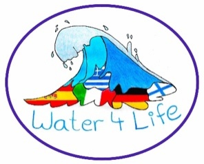

Anhang
Europaschule

Europa – Ein Kontinent mit Geschichte
Europa ist ein Kontinent mit einer einzigartigen und bewegten Geschichte, die von kultureller Vielfalt, politischen Umbrüchen und gemeinsamen Entwicklungen geprägt ist. Von der griechischen Antike über das Römische Reich bis hin zur Aufklärung und den beiden Weltkriegen haben europäische Ereignisse und Ideen die Weltgeschichte nachhaltig beeinflusst. Heute steht Europa nicht nur für historisches Erbe, sondern auch für den Versuch, durch Zusammenarbeit, Verständigung und gemeinsame Werte wie Frieden, Demokratie und Menschenrechte eine gemeinsame Zukunft zu gestalten. Die Europäische Union ist Ausdruck dieses Strebens – ein Projekt, das aus der Geschichte gelernt hat und auf Dialog und Zusammenhalt setzt.
Selbstverständnis
Zu unserem Selbstverständnis als Europaschule gehört in besonderer Weise die Vermittlung von Bildung mit europäischer Dimension, basierend auf den Ideen der Aufklärung und des Humanismus. Weltoffenheit, Toleranz und interkulturelle Verständigung sind hierbei leitende Werte.
Unser Schulleben soll geprägt sein durch ein respektvolles und verständnisvolles Miteinander aller am Erziehungsprozess beteiligten Personen und Gremien der Schulgemeinde. Wir wollen in einer Atmosphäre arbeiten, in der sich alle, die an diesem Prozess beteiligt sind, wohl fühlen, sich ihrer Verantwortung bewusst sind und sich aktiv einbringen.
Unsere Bildungs- und Erziehungsarbeit fördert die Schüler*innen in ihrer Persönlichkeitsentwicklung, ihren individuellen Möglichkeiten sowie ihren fachlichen und sozialen Kompetenzen so, dass sie den gesellschaftlichen Aufgaben der Gegenwart gerecht werden und Verantwortung für eine gemeinsame europäische Zukunft übernehmen können.
Bildungsidee und Bildungsauftrag
Es ist Aufgabe und Ziel des Unterrichts und fachgebundener sowie fachübergreifender Projekte, die Schüler*innen zur allgemeinen Studierfähigkeit zu führen und sie zu einer erfolgreichen beruflichen Entwicklung im zusammenwachsenden Europa zu qualifizieren. Der Entwicklung von Teamfähigkeit, Selbstständigkeit, Kreativität und Flexibilität wie auch der Bereitschaft zu lebenslangem Lernen ist das GREM verpflichtet.
Das GREM im Stadtteil
Das GREM liegt randstädtisch zur Großstadt Moers. Insgesamt gibt es in Moers vier Gymnasien, drei Gesamtschulen mit gymnasialer Oberstufe und drei Berufskollegs mit unterschiedlichen Bildungsgängen, die allesamt zum Abitur führen.
Daher sehen wir uns in der Konkurrenz und gleichzeitig in der Partnerschaft mit den weiterführenden Schulen – auch zur direkt benachbarten Gesamtschule.
Die randstädtische Lage bedeutet für uns, dass sich das schulische Einzugsgebiet über die Stadtgrenzen von Moers hinaus bis in die benachbarten Kommunen Rheinberg, Kamp-Lintfort und Duisburg erstreckt. Unsere schulischen Angebote strahlen bis in diese genannten Nachbargemeinden. So kommt ein Teil unserer Schülerschaft als Fahrschüler*innen von außerhalb zu uns.
Das breite Angebot im Bereich der Arbeitsgemeinschaften im Ganztag, das wir in Zusammenarbeit mit unterschiedlichen Vereinen (z.B. dem Tennisclub) und Organisationen (z.B. der VHS) realisieren, gestaltet eine attraktive Schule. Kooperation mit Schlosstheater.
Das GREM in der Region
Zwei weitere wichtige Punkte tragen seit Jahren zur Entwicklung besonderer Profile der Schule bei.
Einerseits ist es die Nähe zu den niederländischen Nachbarn, die uns bewog, nicht nur auf Austauschebene mit niederländischen Schulen zu kooperieren (Venlo, Deurne), sondern auch eine intensive Zusammenarbeit mit der Universität Fontys zu suchen. Aus diesem Gedanken entspringen auch der Europaschulgedanke, die Zusammenarbeit auf Erasmus plus - Ebene und das bilinguale Sprachenangebot.
Andererseits sind wir eine Schule in einer Region, die immer noch einem starken Strukturwandel unterzogen ist. Gerade der Moerser Norden war in der Vergangenheit jahrzehntelang stark durch den Bergbau geprägt, die Bevölkerungsstruktur blieb weitgehend erhalten, während die Industriestruktur sich wandelte. Aus diesem Grund suchen wir die Zusammenarbeit mit dem zdi (Zukunft durch Innovation) der Universität Duisburg-Essen und verstärkt mit der Universität Rhein-Waal in Kamp-Lintfort auf der MINT-Ebene. Zu nennen ist an dieser Stelle nicht nur das fab-lab (fabrication laboratory = offenes Labor; bedeutet hier: Schülerlabor mit besonderer Ausstattung im 3 D-Druck), sondern auch die Betreuung bei Wettbewerben und die Unterstützung in verschieden Bereichen des schulischen Lebens (z.B. bei der Durchführung des Berufetages).
Aus dem Genannten wird deutlich, dass das GREM stets ein attraktives Angebot für Schüler*innen der näheren und weiteren Umgebung schafft, um sich so als Gymnasium mit vielen Facetten innerhalb der Schullandschaft zu positionieren. Vor allem der sehr engagierten Lehrerschaft ist es zu verdanken, dass wir diese Vielfalt leben.
Das GREM in Europa
Ein bedeutender Schwerpunkt der schulischen Arbeit am GREM ist die
Umsetzung des Europagedankens
Unsere Schüler*innen sollen jetzt und später die Werte der europäischen Aufklärung, wie z.B. die Gleichberechtigung der Geschlechter, verteidigen. Sie sollen zu einer eigenen Identität finden in der Begegnung mit anderen Kulturen.
Wir fördern Verständnis und Interesse an der Vielgestaltigkeit in Europa.
Wir sind ein bilinguales Gymnasium mit Partnersprache Englisch und realisieren Mehrsprachigkeit durch ein breites Sprachenangebot.
Wir nehmen an internationalen Projekten und Wettbewerben teil.
Wir pflegen Austauschmaßnahmen mit Partnerschulen in verschiedenen europäischen Ländern.
Wir arbeiten mit anderen Europaschulen zusammen.
Wir unterstützen die Schüler*innen bei ihrer beruflichen Orientierung im Hinblick auf den europäischen Arbeitsmarkt und ermöglichen Auslandspraktika.
Wir fördern international kompatible zusätzliche Abschlüsse durch unser bilinguales Zertifikat, Vorbereitungskurse und Prüfungen für die externen Sprachzertifikate ele.IT (Italienisch), CNaVT (Niederländisch) und DELF (Französisch) und sind eine der rund 100 Schulen in Europa, die das Exzellenzlabel „CertiLingua“ des Ministeriums für Schule und Bildung des Landes NRW vergeben können.
Struktur und Angebot der Schule werden möglichst weitgehend dem in Europa üblichen Standard angenähert (Beispiele: Ganztagsform, Bilingualität, länderübergreifende Kooperationen im Fach „Forschen und Entwickeln“, Erasmus-Programme).
Schulvereinbarung
Die folgende Schulvereinbarung enthält Grundsätze des schulischen Miteinanders. Sie wird bei Aufnahme in die Schule zwischen Schüler*innen, Eltern und Lehrern getroffen.
Grundvereinbarung
Wir Schüler*innen, Eltern und Lehrer*innen bilden zusammen mit dem nicht lehrenden Personal die Schulgemeinschaft des
Gymnasium Rheinkamp Europaschule Moers.
Um eine erfolgreiche Erziehung und Wissensvermittlung zu gewährleisten, müssen Schule und Elternhaus zielgerichtet und aufeinander abgestimmt zusammenarbeiten.
Vor diesem Hintergrund treffen wir folgende Vereinbarung:
Wir verpflichten uns als Lehrer*innen
für die Belange aller Schüler*innen offen zu sein, Verständnis zu zeigen und ihnen im Rahmen unserer Möglichkeiten Hilfe anzubieten,
respektvoll und fair mit den Schülern umzugehen,
Schüler*innenleistungen vorurteilsfrei und nachvollziehbar zu bewerten,
im Bedarfsfall Gespräche mit den Eltern und Schüler*innen zu ermöglichen,
den Unterricht gut vorzubereiten,
uns verantwortlich für den Lernfortschritt der Schüler*innen zu fühlen.
Wir verpflichten uns als Schüler*innen
Regeln einzuhalten und Anordnungen der Lehrer*innen zu befolgen,
Lernzeitaufgaben und andere Aufgaben zuverlässig zu erledigen,
sämtliche Unterrichtsmaterialien in einem ordentlichen Zustand mitzubringen,
dem Unterricht aufmerksam zu folgen, aktiv mitzuarbeiten und den Unterricht nicht zu stören,
keine körperliche oder psychische Gewalt anzuwenden und zu dulden,
selbst aktiv für Pünktlichkeit, Ordnung und Sauberkeit zu sorgen,
das Eigentum anderer und das der Schule zu respektieren.
Wir verpflichten uns als Eltern und Erziehungsberechtigte,
Interesse für die schulische Entwicklung der Kinder zu zeigen und sie aktiv zu unterstützen,
für Lehrer*innen erreichbar zu sein, den Kontakt zur Schule zu pflegen und Gesprächsangebote der Schule (Sprechzeiten/Elternabende/etc.) wahrzunehmen,
bei Fehlverhalten der Kinder gemeinsam mit der Schule Lösungen zu finden,
in Erziehungsfragen mit der Schule zu kooperieren.
Aus den Grundvereinbarungen und den Leitzielen des Gymnasiums Rheinkamp ergibt sich für uns die Verpflichtung, diese Ziele in das tägliche Miteinander aller Beteiligten einfließen zu lassen. Auch wird die Fortentwicklung des Schulkonzepts dadurch wesentlich beeinflusst. Alle folgenden Ausführungen leben den Geist der genannten Grundvereinbarungen!
Pädagogische Arbeit
Die Erprobungsstufe
Wie bereitet sich das GREM auf die neuen Schüler*innen vor?
Die Lehrer der Klasse
Klassenlehrer*innen, die in der Erprobungsstufe ein Team bilden, sind ausschließlich Lehrkräfte, die sich diese Aufgabe ausdrücklich gewünscht haben. Ähnliches gilt auch für die übrigen Fachlehrer*innen.
Kontakte zu den Grundschulen
Seit Jahren stehen die Erprobungsstufenkoordination und Schulleitung des GREM im Kontakt und Austausch mit den verschiedenen Grundschulen in unserem Einzugsbereich, um sich mit den Arbeitsmethoden und Arbeitsweisen der Grundschule vertraut zu machen. Umgekehrt laden wir die Kolleg*innen zur Hospitation in unseren Unterricht ein. Eine kontinuierliche Zusammenarbeit mit den Grundschulen wird durch die Erprobungsstufenleitung organisiert.
Darüber hinaus findet ein Austausch zwischen den Schulleitungen statt, der die Übergangsmodalitäten konferiert, um den Sprung von der vertrauten Grundschule an die neue weiterführende Schule zu erleichtern.
Das pädagogische Konzept
Die Kolleg*innen nehmen regelmäßig an Fortbildungsveranstaltungen teil, in denen neue Unterrichtskonzepte und -methoden entwickelt werden. In gemeinsamer Beratung in den Teams der Erprobungsstufe, den Fach- und Lehrer*innenkonferenzen und nicht zuletzt in der Schulkonferenz wird so ständig an der Verbesserung des pädagogischen Angebots gearbeitet.
Mitwirkungsmöglichkeiten von Eltern und Schüler*innen
Wie in allen Klassen und Jahrgangsstufen wählen auch die Eltern in der Erprobungsstufe ihre Vertreter*innen für die Schulpflegschaft. Über diese gewählten Vertreter*innen können Anträge an die Schulkonferenz, das höchste Beschluss fassende Gremium der Schule, gestellt werden.
Wir bitten die Eltern aber auch nicht nur bei Fachkompetenz, sondern auch bei Interesse um die Mitarbeit in den Fachkonferenzen. Manchmal ist ein „elterlicher“ Ratschlag von außen nicht nur willkommen, sondern auch befreiend oder weiterführend, da die Perspektive eine ganz andere ist. Daneben gibt es vielfältige Gelegenheiten dem GREM als Eltern zur Seite zu stehen und am Schulleben mitzuwirken: Begleitung an Wandertagen, Organisation von Schul- und Sportfesten, Mithilfe an besonderen Tagen, wie z.B. dem Kennenlerntag der neuen Schüler*innen, Begleitung bei Lesungen, Theaterveranstaltungen usw. Wir vertrauen auf eine wirksame Zusammenarbeit mit Eltern bzw. Erziehungsberechtigten.
Wir kümmern wir uns um unsere neuen Schüler*innen!
Die Realisierung dieser Aufgaben erfolgt nach den drei Schwerpunkten:
der besonderen Funktion der Klassenlehrer*innen,
dem Prinzip des „Sanften Übergangs“ und
der Einführung in Aspekte und Methoden des eigenverantwortlichen Arbeitens.
Das Klassenlehrer*innenteam begleitet die Schüler*innen in der ersten Schulwoche intensiv nach einem besonderen Plan und ermöglicht gegenseitiges Kennenlernen der Lerngruppe, Vorstellen des gesamten Systems Schule und das Beziehen des eigenen Lernraumes in der Schule. Es stellt die wichtigsten Personen im Schulbetrieb vor und hilft bei ersten Kontaktaufnahmen sowie organisatorischen Anfangsproblemen. Dabei unterstützen die Klassenpat*innen, das sind Schüler*innen der Jahrgangsstufe 10, die die neuen Fünftklässler begleiten.
Auf diese Weise wird eine schrittweise Integration in den neuen Schulbetrieb erreicht. Die Beratung und Betreuung durch die Klassenlehrer*innen, die im ständigen Austausch mit den unterrichtenden Fachlehrer*innen steht, erfolgt auf zwei Ebenen:
1. Gespräche, Hilfestellungen und intensive Beobachtung der Schüler*innen in ihrer neuen Rolle und beim Erwerb neuer Kenntnisse, Fertigkeiten und Interaktionsformen.
2. Information und Austausch über den individuellen Leistungsstand der Schüler*innen mit den Eltern und der Erprobungsstufenkoordination.
Die Erprobungsstufe bildet pädagogisch wie organisatorisch eine Einheit, die der gezielten Beobachtung, Erprobung und Förderung der Schüler*innen dienen soll.
Sanfter Übergang
Um den Schulwechsel angenehmer zu gestalten, haben sich einige konkrete Maßnahmen bewährt:
Der Tag der offenen Tür im Herbst bietet die Möglichkeit, an Unterrichtsstunden verschiedener Klassen teilzunehmen und es werden Informationen zum GREM gegeben.
Im Januar findet ein Elterninformationsabend statt, der Eltern von Grundschüler*innen die Möglichkeit gibt, das GREM näher kennen zu lernen.
Wünsche zur Klassenzusammensetzung werden nach Möglichkeit erfüllt.
Jeweils im Juni findet ein Kennenlernnachmittag für Eltern und Schüler*innen der zukünftigen 5. Klassen mit den Klassenleitern statt.
Die Klassenleiter und Co-Klassenleiter werden mit möglichst vielen Stunden in der Klasse eingesetzt und erhalten eine zusätzliche Stunde, die zur individuellen Förderung und für Klassenangelegenheiten genutzt werden kann.
Am Ende der ersten Schulwoche findet ein Wandertag statt.
Im ersten Schulmonat gibt es einen Grillabend für alle Eltern und Schüler*innen in der Schule.
Schon in der Klasse 5 wird eine einwöchige Fahrt in eine Jugendherberge durchgeführt.
Schüler*innen mit Förderbedarf
An unserer Schule beschulen wir auch Kinder, die einen besonderen (sonderpädagogischen) Förderbedarf aufweisen, sei es eine Körperbehinderung oder auch Autismus. Wir haben die Erfahrung gemacht, dass der gemeinsame Unterricht, der zumeist zielgleich erfolgt, bei Unterstützung durch Netzwerkpartner\*innen bereichernd für alle Beteiligten ist.Teamsitzungen
Nach einer kurzen Eingewöhnungszeit - ca. 4-6 Wochen nach Schulbeginn - finden Teamsitzungen statt. Zu den Teamsitzungen werden die Grundschulkolleg*innen eingeladen. An der Teamsitzung nehmen außerdem alle in der Klasse unterrichtenden Kolleg*innen, die Beratungslehrerin und die betreffenden Integrationshelfer*innen teil. Teamsitzungen erfolgen weiterhin regelmäßig.
Hier erfolgt ein pädagogischer Austausch, der besonders die beginnende Gruppenstruktur im Blick hat und die erste Übergangsphase evaluiert.
Erprobungsstufenteam
In der Erprobungsstufe arbeiten interessierte und engagierte Lehrer*innen zusammen, um nicht nur den Übergang zu erleichtern, sondern durch die Organisation von geeigneten Veranstaltungen (Lesungen u.a.) und die Erarbeitung von Materialien (Lernen des Lernens u.a.) den Schulalltag stressfreier zu gestalten. Hierzu gehört auch die Zusammenarbeit mit der Polizei, um den Schüler*innen die Verkehrssituation im Schulbereich und darüber hinaus bewusster zu machen.
Erprobungsstufenkonferenzen
Während der ersten beiden Jahre, der Erprobungsstufe, finden regelmäßig Erprobungsstufenkonferenzen statt, in denen alle Lehrer*innen einer Klasse ausführlich und intensiv über jede(n) Schüler*in beraten. Erste Erfahrungen und Hintergründe werden ausgetauscht. Bei allen Konferenzen kommen hier nicht nur Lernfortschritte und Lerndefizite, sondern auch das Sozialverhalten zur Sprache. Ggf. setzt sich die Klassenleitung direkt nach den Konferenzen mit den Erziehungsberechtigten in Verbindung.
Klassenleitungsteams
In den Klassen 5 und 6, aber auch in den anderen Klassen werden Klassenleitungsteams (Klassenleiter*in und Co-Klassenleiter*in) eingesetzt. Es gibt zwar eine(n) hauptverantwortlichen Klassenlehrer*in, aber jeweils eine Kollegin und ein Kollege teilen sich die Arbeit, begleiten die Kinder in ihrer Entwicklung und stehen mit Rat und Tat zur Seite.
Fachunabhängiger Förderunterricht
Die hauptverantwortlichen Klassenlehrer*innen erhalten im Rahmen ihres Fachs eine zusätzliche Unterrichtsstunde, um auf die besonderen Belange der Kinder eingehen und das soziale Miteinander fördern zu können.
Lernförderung
Probleme in einzelnen Fächern können entstehen. Die Erfahrung zeigt jedoch, dass innerhalb der Jahrgangsstufe 5 vieles auf die Umstellungsphase nach Verlassen der Grundschule zurückzuführen ist. Hier vertrauen wir auf die bewährte individuelle Unterstützung durch unsere jeweiligen Fachlehrer*innen.
Zusätzlich gibt es die Möglichkeit in den Hauptfächern Deutsch, Mathematik, Englisch und weiteren Fächern an Fördermodulen teilzunehmen. Die Kinder werden von den in der Jahrgangsstufe unterrichtenden Fachlehrer*innen in einem Lernblock in Kleingruppen gefördert. Sollte festgestellt werden, dass eine längere Unterstützung notwendig ist, so kann die Förderung natürlich fortgesetzt werden. Grundsätzlich gehen wir allerdings davon aus, dass ein Schüler*innen frühzeitig gefördert werden kann und die Lernrückstände sich so nicht weiter aufgetürmt haben. Gleichzeitig bieten wir aber auch Forderunterricht für Kinder an, die ihre Potentiale noch nicht ausgeschöpft haben.
Leseförderung
Wir haben einen Kooperationsvertrag mit der Zentralbibliothek in Moers abgeschlossen, der eine die Schullaufbahn begleitende Unterstützung und Ergänzung in der Leseförderung unserer Schüler*innen ist. Die nebenan gelegene Schülerbücherei bietet innerhalb des Deutschunterrichts der Jahrgangsstufe 5 eine zusätzliche Möglichkeit, die Kinder ans regelmäßige Lesen heranzuführen. Lesenächte und Besuche von Autorenlesungen sind fester Bestandteil unserer Leseförderung
Die Jahrgangsstufe 6 beteiligt sich jährlich am Vorlesewettbewerb der Stiftung Lesen und ermittelt in Klassenwettbewerben und einer Jahrgangsstufenausscheidung einen Schulsieger, der das GREM auf Kreisebene vertritt. Alle Klassensieger*innen sollen einen Buchgutschein erhalten.
Paten
Schüler*innen der Jahrgangsstufe 10 sind nach Absprache und „Bewerbung“ als Pate*innen Ansprechpartner*innen für die Jüngeren in Problemfällen. Darüber hinaus helfen sie den Kleinen bei der Organisation von Aktivitäten und sind Begleiter*innen bei Wandertagen, manchmal auch Klassenfahrten.
Multimediaräume
Die Schule verfügt über drei mit modernen Computern ausgestattete Räume allesamt mit schnellem Internetanschluss, so dass die Klassen in verschiedenen Fächern am PC arbeiten können (mehr…).
Moderne digitale Präsentationsmöglichkeiten sind in nahezu allen Klassen- und Kursräumen eingebaut, für Schüler*innen stehen ausleihbare IPad zur Verfügung.
Wichtiger Bestandteil der schulischen Arbeit ist unser Selbstlernzentrum (SLZ), das den Schüler*innen unter Aufsicht neben dem Medium Buch auch alle übrigen modernen Medien bereitstellt, um das Lernen zu optimieren. IPAD-Klassen
Arbeitsgemeinschaften
Eine Vielzahl von Arbeitsgemeinschaften und damit verbundene außerunterrichtliche Veranstaltungen und Aktivitäten bieten allen Schüler*innen die Möglichkeit, sich ihren Neigungen entsprechend am Nachmittag an ihrer und für ihre Schule zu engagieren. Unsere Ganztags-AGs haben Themen aus allen Lebensbereichen: sportliche, musische, sprachliche und naturwissenschaftlich-technische Themen. Die jeweils aktuelle Liste der AGs findet sich auf unserer Website.
Wandertage/Klassenfahrten
Wandertage in der Erprobungsstufe bieten eine zusätzliche Möglichkeit der Öffnung von Schule, des gemeinsamen Erlebens und sozialen Miteinanders. Höhepunkt ist zweifellos die Klassenfahrt, die während des 5. Schuljahres durchgeführt wird. Meist im Zusammenwirken mit einem erlebnis-pädagogischen Programm bieten diese fünf Tage zu Beginn der Schullaufbahn am GREM den Schüler*innen der neuen Lerngruppe die Gelegenheit, im außerschulischen Raum ihre neuen Lernpartner*innen noch besser kennen zu lernen, den Klassenlehrer*innen wird die Möglichkeit geboten, die neue Klasse nicht nur als Moderator*in, sondern auch als Beobachter*in viel besser einschätzen zu lernen.
Lernzeiten
Lernzeiten dienen am GREM als Gefäß des individuellen Arbeitens im Rahmen des Ganztages.
Im Rahmen der Entscheidung für ein Ganztagsgymnasium stellte sich alsbald die Frage der Bedeutung der häuslichen Arbeit für die Schüler*innen. Das Kollegium des Gymnasiums kam ebenso wie die Gremien der Schule zu der Überzeugung, dass Lernzeiten als Alternative dienen müssen.
Dieser Beschluss spiegelt sich aktuell auch in der Forderung des Erlasses G9 „neu“, so dass deutlich wird, dass das GREM in seiner Vorreiterrolle über viel Erfahrung in diesem Gebiet verfügt. Das Lernzeitenkonzept wird kontinuierlich auf der Basis von Evaluation weiterentwickelt. Die letzte große Evaluation erfolgte im Schuljahr 2016/17. Hier gab es seitens aller Beteiligten eine Zustimmung von über 90%.
Die Lernzeiten sind auf die Stundentafel der Schüler*innen abgestimmt, Lernzeitaufgaben sollen schwerpunktmäßig den Hauptfächern entwachsen.
Die Lernzeiten stellen somit einen zentralen Punkt im Ganztagskonzept unserer Schule dar. Die Organisation der Lernzeiten an unserer Schule soll im Folgenden kurz erläutert werden:
In den Jahrgangsstufen 5 bis 8 findet jeweils dreimal wöchentlich eine Unterrichtsstunde als Lernzeit statt. Alle Klassen eines Jahrgangs haben diese Stunde gleichzeitig, sodass sich die Schüler*innen aus den vier Klassen frei entscheiden können, welchen der sieben unterschiedlichen zur Verfügung stehenden Räume sie nutzen möchten. Die Schüler*innen dürfen entscheiden, ob sie für die Lernzeit im eigenen Klassenraum bei einer bekannten Lehrer*in bleiben, oder ob sie sie in einem anderen Klassenraum mit einer Lehrer*in verbringen, die/der das Fach vertritt, zu dem sie eine Aufgabe bearbeiten möchten. Zudem steht ein Silentiumraum, in dem bei kompletter Ruhe gearbeitet werden kann, ein Gruppenarbeitsraum und ein mit Computerarbeitsplätzen ausgestattetes Selbstlernzentrum zur Verfügung. Auch wenn die Klassen- sowie Fachlehrer*innen ein gewisses Vetorecht besitzen, sind die Schüler*innen in ihrer Raumwahl grundsätzlich frei. Der Einsatz von Fachlehrer*innen wird in der Unterrichtsverteilung mit Priorität behandelt, da dieser Fachlehrer*inneneinsatz ein zentrales Instrument der Förderung darstellt.
Ein eigens konzipierter Schulplaner, den alle unsere Schüler*innen der Klassen 5 bis 8 haben, unterstützt die Anwesenheitskontrolle und die Rückmeldung von Arbeits- und Sozialverhalten.
Die Fachlehrer*innen stellen ihre Lernzeitaufgaben, die die herkömmlichen Hausaufgaben am Gymnasium Rheinkamp (fast) komplett ersetzt haben, in der Regel so, dass den Schüler*innen etwa eine Woche Bearbeitungszeit zur Verfügung steht.
Als zusätzliches Lernangebot steht in allen Klassenräumen ein reichhaltiger Pool an Materialien zum Individuellen Lernen (IL) bereit. Alle Gruppen- und Silentiumräume sind mit Schulbüchern ausgestattet, sodass die Schüler*innen stets auf alle relevanten Materialien zurückgreifen können.
Ergänzt wird das Lernzeitenkonzept durch ein zusätzliches, sog. „Lernzeit plus“ Angebot für die Klassen 7 bis 9. An einem unterrichtsfreien Nachmittag können eine oder zwei Stunden zur zusätzlichen Erledigung von Aufgaben verbindlich wie ein AG-Angebot hinzugewählt werden. Dieses letztgenannte Angebot besteht nicht grundsätzlich, sondern hängt von verschiedenen Faktoren ab und kann daher nicht in jedem Jahr angeboten werden.
So wird Lernzeit an unserer Schule nicht zur betreuten Hausaufgabenstunde, sondern ist echte LERNzeit, durch
kleinere Lerngruppen, die zu einer besseren Lernatmosphäre und einer verbesserten Möglichkeit der individuellen Förderung führen.
Lernerautonomie, -selbstbestimmung, -selbstständigkeit etc., da die Lernenden selbst entscheiden, wann sie wo und wie welche Aufgabe erledigen.
zusätzliche IL-Materialien, die den Schülern zur selbstständigen Weiterarbeit zur Verfügung stehen.
Lernen des Lernens
Das Erlernen von Lern- und Arbeitstechniken in der Erprobungsstufe
Fehlende Erfolge in der Schule sind nicht immer eine Folge unzureichender Eignung oder fehlenden Willens, sondern oft das Ergebnis unzweckmäßiger Arbeitstechniken und – oft daraus folgend – mangelhafter Arbeitshaltung. Die Begabungsforschung geht heute davon aus, dass 25% bis 40% ungleicher Lernleistungen auf Unterschiede in der Beherrschung bestimmter Arbeitstechniken und der Anwendung der Erkenntnisse der Lernorganisation zurückzuführen sind.
Erlernt man in der Schulzeit ein Repertoire rationeller Techniken und erprobter Methoden um selbstständiges Arbeiten und Lernen so wirksam wie möglich zu gestalten, den typischen Anforderungen des Schulalltags gerecht zu werden und sein Arbeitsverhalten zu kontrollieren, so verfügt man damit über einige weitere der „Schlüsselqualifikationen“, die auch später beim Studium und auf dem Arbeitsmarkt zunehmend gefordert werden.
Die Verankerung des Bereiches „Lernen lernen“ im gesamtpädagogischen Konzept unserer Schule ist uns ein besonderes Anliegen.
Unterricht verspricht den größten Lernerfolg, wenn er schüler*innenzentriert und lehrer*innengesteuert ist. Das bedeutet, dass wir die Lernprozesse unserer Schüler*innen planen, ihnen aber ebenfalls einen Einblick in die Mechanismen geben wollen, die ihnen das Leben erleichtern und zu selbsttätigem Lernen anregen.
Lernen ist ein lebenslanger Prozess, deshalb ist es wichtig, dass ein junger Mensch frühzeitig lernt, sein Arbeitsverhalten zu strukturieren und erfährt, wie er sich selbst am besten Wissen aneignen kann.
Für die 5. Klasse haben wir deshalb eine zusätzliche Unterrichtsstunde eingerichtet, in der unsere Schüler*innen darüber nachdenken können, „wie etwa der Unterrichtsstoff in das Gedächtnis gelangt und dort dauerhaft verankert wird“ bzw. „wie die eigenen Lernprozesse optimiert werden können“ oder etwa „wie man einen Vortrag durch Körpersprache unterstreichen kann“.
Die Unterrichtsstunde hat dabei durchaus den Charakter eines Lehrgangs, ist aber an konkrete Fachinhalte gebunden. Grundlage des Unterrichts ist ein selbstkonzipiertes Arbeitsheft, das gleichzeitig einen Überblick über relevante Sachverhalte gibt. Zweck dieser zusätzlichen Stunde ist es ebenfalls, das eigenständige Arbeiten unserer Schüler*innen in den Lernzeiten (und zu Hause) zu unterstützen. Wir knüpfen an die Erfahrungen aus der Grundschulzeit an, vertiefen die Kenntnisse und erweitern sie.
Schüler*innen entwickeln im Verlauf ihrer Schulzeit ihre eigene Lerngeschichte. Dieser Individualität versuchen wir Rechnung zu tragen. „Lernen lernen“ ist aber selbstverständlich über die Jahrgangsstufe 5 hinaus in der Stundentafel verankert, aber dann als Bestandteil des Fachunterrichts. Hier erfahren die Schüler*innen individuelle Unterstützung, um ihre Arbeits- und Lerntechniken zu optimieren.
In der 6. Klasse steht dazu begleitend ein weiteres Arbeitsheft zur Verfügung. Fach- bzw. Klassenlehrer*innen, aber auch die Schüler*innen selbst können zu den Themen „Vokabeltraining“, „Planungshilfen“, „Zielplanung“, „Konflikte lösen“ oder „Informationsbeschaffung“ nachlesen bzw. mit dem Heft arbeiten.
In der Mittelstufe ist der Bereich „Lernen lernen“ weiterhin an den Fachunterricht gekoppelt.
Grundsätzlich können Angebote für einzelne Schüler*innengruppen in Form von Workshops angeboten werden. Dabei geht es darum, bestimmte Lern- und Arbeitstechniken noch einmal aufzufrischen. Zudem finden Veranstaltungen an außerschulischen Lernorten (z. B. der Stadtbücherei, dem Theater) statt.
Ein- bis zweimal jährlich wird für die Jahrgangsstufe 5 ein Elternabend zu diesem Thema angeboten. Bei Bedarf wird dieses Angebot auf die Jahrgangsstufe 6 ausgeweitet.
Exzellenz am GREM
Ziele
Unser Exzellenzprogramm will Schüler*innen, die ein besonderes Talent oder besonderes Interesse an Teilgebieten besitzen, die über den üblichen Fächerkanon des Gymnasiums hinausweisen, Möglichkeiten und Wege zeigen. Das Prinzip der Freiwilligkeit ist für uns dabei wesentlich. Die Schule hält ein qualitativ hochstehendes Angebot vor, in das die Schüler*innen gezielt hineinberaten werden, um so ihre individuellen Stärken zu fördern und auszuprägen.
Die internationalen Begriffe „Exzellenz“ bzw. Enrichment“ wollen wir ganz eng umrissen verstehen: als Bereicherung.
Musischer Bereich
Unsere gewachsene Stärke im Bereich Instrumentalmusik/Gesang/Theater/Technik durch unser Musiktheater SOON bietet eine weit über den Unterricht hinausgehende Erfahrung. Im Zentrum steht die Wirkung „nach innen“ – musische und soziale Kompetenzen, Durchhaltevermögen und Belastungsfähigkeit werden im gemeinschaftlichen Erleben gewonnen. Wir dürfen bei den hervorragenden Aufführungen, die auch einen wichtigen Werbeträger für die Schule darstellen, nie außer Acht lassen, dass „der Weg das Ziel ist“.
Dazu kommen:
Das Angebot „Musik plus“ in der Erprobungsstufe,
die Klassik-AG,
„Young-SOON“ – unser Angebot für Jüngere im Bereich Darstellendes Spiel,
Arbeitsgemeinschaften im Bereich des Ganztags wie Maskenbau, Literatur-AG, Schreibwerkstatt etc.
Sprachenlernen
Das Ziel ist der konsequente Bezug aller Angebote auf den europäischen Referenzrahmen.
2011 beschloss die Schulkonferenz, das bilinguale Angebot am GREM auszubauen, d.h. alle Schüler*innen in den Jahrgängen 5 bis 9 genießen die bilinguale Ausbildung. Für unsere besonders sprachinteressierten Schüler*innen wird der bilinguale Bildungsgang bis in die Abiturprüfung hinein fortgesetzt.
Schüler*innen, die ganz besondere und erweiterte Anforderungen erfüllen, können bei uns einen europaweit anerkannten zusätzlichen Abschluss erwerben: CertiLingua.** Dazu gehört die Fortführung zweier moderner Fremdsprachen und die Teilnahme am bilingualen Sachfachunterricht bis zum Abitur, die Teilnahme an projektorientierten Austauschmaßnahmen, wie wir sie mit unseren europäischen Partnerschulen praktizieren. Wir sind eine von 100 Schulen in Europa, die dieses Exzellenzlabel für mehrsprachige, europäische und internationale Kompetenzen des Ministeriums für Schule und Weiterbildung des Landes NRW vergeben dürfen.
Die zusätzliche Schulung und Vorbereitung auf das externe französische Zertifikat DELF hat dazu geführt, dass wir am Niederrhein die meisten Prüflinge haben und Prüfungsstandort sind.
Im Fach Italienisch nehmen immer mehr Schüler*innen erfolgreich an der *Ele.IT junior-***Prüfung teil.
Seit einigen Jahren nehmen unsere Niederländisch-Schüler*innen erfolgreich an den Prüfungen für das Niederländisch-Zertifikat CNavt teil. Für Schüler*innen mit besonders herausragenden Leistungen im Fach Niederländisch bieten wir die Teilnahme am jährlichen Exzellenzprogramm „Nederlands Plus“ im Frühjahr an, einem zehntägigen Aufenthalt in den Niederlanden mit Sprach- & Kulturprogramm.
Naturwissenschaften
Über den Unterricht hinaus werden teilweise in internationaler Zusammenarbeit Projekte angegangen, in denen wichtige Schlüsselkompetenzen für naturwissenschaftliche Berufsbilder vermittelt werden können und die zukunftsfähige Qualifikationen unterstützen. Konkret sind dies die Erasmus plus - Projekte, das Pilotprojekt „Forschen und Entwickeln“, die Mitgliedschaft in den beiden Zentren „Zukunft durch Innovation (zdi)“ an der Universität Duisburg und der Hochschule Kamp-Lintfort sowie verschiedene Roberta-Kurse (Roboter-Kurse speziell für Mädchen). NuT
Darüber hinaus wird angestrebt, dass unsere Schüler*innen an möglichst vielen Wettbewerben in Mathematik, Naturwissenschaften und Informatik teilnehmen.
Seit dem Schuljahr 2015/16 ist das GREM Mitglied im Kreis der MINT-EC-Schulen.
Cleverixe – Die Begabtenförderung am GREM
„Ich habe keine besondere Begabung, sondern bin nur leidenschaftlich neugierig.“ [1]
Den Wissensdurst neugieriger Schüler*innen zu stillen und ihnen zugleich auf ihrem Weg zu selbstständigen Lernen zu helfen, ist die Maxime der Cleverix-Begabtenförderung am GREM.
Vorrangiges Ziel der Begabtenförderung ist es, Schüler*innen, die sich als besonders begabt sowie allgemein interessiert und engagiert erwiesen haben, die Möglichkeit zu bieten, ihre Lernwelt zu erweitern. Dadurch sollen sie nicht nur intellektuell an ihre Grenzen stoßen können, sondern vor allem mit Spaß am Lernen neue Bereiche selbst entdecken. Affektive Kompetenzen werden durch das schulische Förderprogramm ebenso gestärkt und gefördert wie kognitive. Die Begabtenförderung soll die Schüler*innen vor allem motivieren, stärken und voranbringen.
Das Konzept ist simpel und anspruchsvoll zugleich: Die Cleverixe suchen sich – entsprechend ihrer Neugier – ein eigenes Thema und arbeiten selbstständig ein ganzes Schuljahr daran. Sie unterstützen sich gegenseitig und erhalten Rat von entsprechenden Fachkolleg*innen. Am Ende der Arbeit steht die Präsentation vor allen Fünft- und Sechstklässlern im Rahmen einer Cleverix-Show.
Folgende Ziele sind für die schulische Begabtenförderung leitend [2] :
Kennenlernen anderer Lehr-, Lern- und Arbeitsformen,
Anwendbarkeit des Gelernten (Theorie-Praxis-Bezug),
Unterstützung der Bereitschaft zur Beschäftigung mit spezifischen Fachproblemen und Fragestellungen (sog. „Tiefenbohrungen“),
Betonung der aktiven für das eigene Lernen verantwortlichen Rolle,
Entwicklung von eigenständigen Problemlösungsstrategien, Forscherverhalten und -vorgehen,
Beschäftigung mit vom Lehrplan/Unterricht eher weniger üblichen Themen, Gegenständen eines Faches,
Stärkung der Kooperation von Fachlehrer*innen/Schulen und externen Partner*innen wie zum Beispiel Hochschulen.
Beratungs- und Betreuungskonzept
Die gesamte Beratung am GREM verfolgt das Ziel Schüler*innen bestmögliche Voraussetzungen für ihren Schulerfolg zu verschaffen. Dazu bedarf es der Beratung zur Schullaufbahn, aber auch der Beratung in individuell verschiedenen Lebenslagen, Krisen und Entscheidungen.
Laufbahnberatungen
Die Beratung der Schüler*innen zu Entscheidungen in ihrer Schullaufbahn erfolgt in der Sekundarstufe I im Allgemeinen durch die Klassenlehrer*innen und Fachlehrer*innen, in der Sekundarstufe II durch die Jahrgangsstufenleiter*innen. Zusätzlich bietet die Schule für die Eltern und Schüler*innen Beratungsabende an.
Folgende Beratungsanlässe sind bisher am GREM verankert:
Aufnahmeberatung bei Fragen zum Grundschulgutachten und bei Sorgen um die richtige Entscheidung bei der Schulwahl am Tag der offenen Tür, beim Aufnahmegespräch und durch Einzelberatung im Vorfeld (Schulleitung),
Lernen des Lernens bei Bedarf für Eltern der Jahrgangsstufe 5 (Klassenlehrer),
Ende Jg.5: Wahl der zweiten Fremdsprache (Mittelstufenkoordinatorin/Fachlehrer*innen),
Ende Jg.6: Informationen zum bilingualen Sachfach (Fachlehrer*innen),
Ende Jg.7: Mittelstufendifferenzierung (Mittelstufenkoordinatorin / Fachlehrer*innen),
1.Hj. Jg.8: Lernstandserhebungen (Eltern: Mittelstufenkoordinatorin, Schüler: Fachlehrer*innen),
2.Hj. Jg.9: Informationen zur gymnasialen Oberstufe (Oberstufenkoordinator) und Jahrgang 10
EF/Q1/2: Leistungs- und Grundkurswahlen, Laufbahnplanung, Abiturprüfung (Oberstufenkoordinator).
Weitere Beratungsanlässe
Für psychologische und soziale Fragen stehen uns vier ausgebildete Beratungslehrer*innen, die auch Drogenberatungslehrer*innen sind, zur Verfügung. Zusätzlich übernimmt unsere Schulseelsorgerin Beratungsaufgaben.
Sie unterstützen mit ihrer Arbeit Schüler*innen in Notlagen und Konflikten, vermitteln notfalls professionelle Hilfe von außen. Ihre Arbeit unterliegt der Schweigepflicht, die Schulleitung hat kein Auskunftsrecht. Die Darstellung der Vorgehensweise soll nach Übereinkunft der Beteiligten nicht Bestandteil des Beratungskonzeptes sein, sondern individuell gestaltet werden, entsprechend den an unserer Schule bewährten und anerkannten Verfahren.
Selbstverständlich fühlen sich alle Beschäftigten am GREM, Lehrer*innen und nicht-lehrendes Personal, der Aufgabe verpflichtet, den Schüler*innen mit Rat und Tat und individueller Hilfestellung zur Seite zu stehen – das ist nicht Aufgabe eines Beratungskonzeptes, sondern das Gebot der „menschlichen Schule“.
Elternberatung
Der Kontakt mit den Eltern bleibt nicht beschränkt auf die üblichen Lehrer*innensprechzeiten, sondern wird aufgebaut durch Möglichkeit zur Unterrichtshospitationen, telefonische Beratung bei akuten Fragen und Problemen sowie das Einbeziehen in außerunterrichtliche Aktivitäten. Klassen- und Stufenfeste und spezifische Unterrichtsgänge bieten solche Anlässe und ermöglichen den Eltern einen Einblick in das Lernumfeld ihres Kindes.
Bei schulischen und außerschulischen Schwierigkeiten sind die Klassenlehrer*innen in ihren Sprechstunden oder nach Vereinbarung wichtigste und erste Ansprechpartner*innen. Auch die Erprobungsstufen- und die Schulleitung stehen zu Beratungsgesprächen selbstverständlich zur Verfügung.
Ein Problem mit immer größer werdenden Folgen für den Schulalltag ist die Frage der Medienerziehung. Die Erziehung zum verantwortungsvollen Umgang mit Internet und Mobiltelefon bildet einen Arbeitsschwerpunkt der Schule. Regelmäßig werden mit außerschulischen Partnern, wie z.B. der Polizei, Workshops für die Schüler*innen und Vorträge für Eltern durchgeführt.
Berufsberatung
Details zu unserem Berufsberatungskonzept finden Sie hier.
Gesundheit und Vorsorge
Die Entwicklungen in der Gesellschaft zeigen, dass dem Bereich „Gesundheitsförderung / Gesunderhaltung“ eine steigende Bedeutung zukommt. Bewegungsmangel, falsche Ernährung, Konsum von Alkohol und Nikotin, beruflicher und privater Stress tragen dazu bei, dass sich insgesamt der Gesundheitszustand der Bevölkerung in den letzten Jahren verschlechtert hat.
Als Schule sind wir gefordert, hier Aufklärung zu betreiben und mit Gegenmaßnahmen dem beschriebenen Trend gegenzusteuern.
Um in der Schule eine gesunde Lern- und Arbeitsatmosphäre zu schaffen ist es notwendig, die Gesundheit aller Beteiligten zu fördern und zu unterstützen. Schulsport alleine kann diese Defizite nicht beseitigen. Alle Fächer und alle Beteiligten sollen ihren Beitrag leisten, um notwendige Prozesse in Gang zu bringen, die ggf. über das Schulische herausragen und so die Familien und den Freizeitbereich mitberühren.
Gesunde Schule ist ein Ausdruck von Schulqualität!
Ansätze für unser Anliegen lassen sich im §54 des Schulgesetzes wiederfinden, wir wollen mit unserem Konzept aber weit über die Gesetzeslage fördern!
Ziele
Ein zentrales Ziel besteht darin, die Gesundheitsförderung als festen Bestandteil der Schulentwicklung zu sehen. Dazu ist es notwendig, mit geeigneten Maßnahmen ein gesundheitsförderliches Arbeitsklima für Schüler*innen, Lehrer*innen und das übrige Personal zu gewährleisten.
Wir brauchen eine positive Atmosphäre, so dass alle Schulbeteiligten gerne in die Schule kommen!
Maßnahmen
Schüler*innen
Im unterrichtlichen Bereich werden einzelne Themen zu Gesunderhaltung und Gesundheitsförderung im Rahmen der schulinternen Lehrpläne unterrichtet. Als Beispiele zu nennen sind hier die Thematik „Mobbing“ im Politikunterricht der Jg. 5 oder das Thema Ernährung im Biologieunterricht der Jg. 5 und 9 (vgl. Kernlehrpläne).
Jährliche Auswertungen der Unfallmeldungen geben uns Rückschlüsse auf Verbesserungsbedarf, z.B. im Sportunterricht oder bei Pausenaufsichten.
Im Rahmen der Ganztagsbetreuung besitzen wir spezielle Räume mit Sitz- und Spieleecken, die die Möglichkeit bieten, sich innerhalb der einstündigen Mittagspause zu erholen. Die Ausstattung wurde von den Schüler*innen nach eigenen Bedürfnissen in einem Wettbewerbsverfahren ausgesucht und über die Schule und den Förderverein angeschafft. Anlässlich der Komplettrenovierung und Sanierung weiter Teile der Schule bis 2011 wurde darauf geachtet, die äußeren Lehr- und Lernbedingungen zu verbessern: Neues Mobiliar, Schränke und Regale für Lernmaterialien, freundliche Farben, neue Tafeln und Beleuchtung wurden in Zusammenarbeit mit Schüler*innen und Lehrer*innen ausgesucht. Die Schüler*innen haben nun Mietschränke zur sicheren Aufbewahrung von Materialien. Im Außenbereich stehen fest verbaute und ausleihbare Sportgeräte und ein „Außenklassenzimmer“ zur Verfügung. Innerhalb der Mittagspause können die Schüler*innen sich in der eigenen Mensa mit frisch gekochten Speisen versorgen. Dazu haben sie die Auswahl zwischen drei Gerichten, Salaten, belegten Brötchen und diversen weiteren Kleinigkeiten.
In der Stundenplanung wird darauf geachtet, dass zwischen Anspannungs- und Entspannungsphasen eine ausreichende Abwechslung gewährleistet wird.
Prophylaktisch werden durch die diversen Fachkräfte im Haus (Beratungslehrer*innen etc.) Angebote geschaffen, die bestimmte Probleme im Vorfeld der Entstehung schon abfedern oder sogar verhindern helfen können. Zu diesen Angeboten zählen die Drogenprophylaxe, die Streitschlichter, die Arbeit der Mobbingbeauftragten etc. Elterninformationsabende unterstützen in den genannten Tätigkeitsfeldern.
Während der Projekttage steht für die Jgst. 7 das Thema „Sozialverhalten“, darunter auch „Mobbing“ an. Das GREM hat eine ausgebildete Lehrerin für diese Problematik, so dass im akuten Fall, aber auch präventiv, Maßnahmen durchdacht und angewendet werden können. Hier gibt es eine enge Zusammenarbeit mit dem Kommissariat Vorbeugung der Kreispolizei Wesel. Die Zusammenarbeit in Bereich der Gesundheitsfürsorge ist insgesamt eng mit institutionellen Anbietern abgestimmt (z.B. Kreisgesundheitsamt im Bereich Hygiene bzw. Erkrankungen, Arbeitsmedizinischer Dienst et al.).
Im Bedarfsfall werden Schüler*innen Nachteilsausgleiche gewährt, so dass hier keine Benachteiligungen im Falle einer Erkrankung oder Behinderung erfolgen.
Lehrer*innen
Für die Lehrer*innen der Schule bedeutet Stundenplanung, dass beispielsweise das mehrheitlich beschlossene Teilzeitenkonzept in die Halbjahresplanungen einfließt. Teilzeitlehrkräfte erfahren besondere Berücksichtigung in der Weise, dass auf ihre Bedürfnisse möglichst eingegangen wird, schwerbehinderte Kolleg*innen können im Jahresgespräch mit der Schulleitung abklären, an welchen Stellen eine persönliche Erleichterung und Rücksichtnahme ihren gesundheitlichen Bedürfnissen zuträglich ist.
Langfristig Erkrankte erhalten das ihnen zustehende Recht auf ein BEM und eine Wiedereingliederung.
In der Unterrichtsverteilung wird darauf geachtet, dass möglichst eine pädagogisch verantwortbare Lastenverteilung innerhalb des Kollegiums erfolgt, das bedeutet, dass die Anzahl der zu korrigierenden Klassen- und Kursarbeiten vergleichbar werden. Die Anzahl der Bereitschaftsstunden wird nach vereinbarten Kriterien festgelegt. Die Anzahl der Springstunden wird möglichst geringgehalten, es sei denn, individuelle Wünsche stehen dem entgegen.
Für die Lehrer*innen steht der durch unsere Garten-AG bepflanzte und gepflegte Innenhof zur Entspannung zur Verfügung.
Im Rahmen der Vorbeugung wurde von Kolleg*innen ein Lehrer*innenruheraum eingerichtet, der in Pausen und Freistunden eine Möglichkeit bietet, sich zu erholen und Kräfte zu regenerieren.
Halbjährlich finden die Unterweisungen der Lehrkräfte durch den Gefahrstoffbeauftragten der Schule statt, Ersthelfer*innen werden regelmäßig aus- und fortgebildet, der Schulsanitätsdienst steht in den Pausen zur Verfügung. Brandschutzhelfer
Außerschulische Partner*innen unterstützen unsere Tätigkeit durch Angebote im Fortbildungsbereich. So ist zum Beispiel das Dezernat Vorbeugung der Kreispolizeibehörde Wesel zu nennen, ebenso das Gesundheitsamt.
Zukunftsplanung
Zukünftig wird die Salutogenese zunehmend in den Blick der Schulentwicklung rücken. Die Netzwerke der Zukunftsschulen NRW werden diesen Themenkomplex immer stärker beleuchten.
Darüber hinaus werden die begonnenen Projekte und Vorhaben weitergeführt, begleitet und evaluiert.
Förderkonzept
Förderangebot
In den letzten Jahren wurde das Förderangebot ausgebaut. Förderung findet im Fachunterricht statt (individuelle Förderung), geht aber über diesen hinaus.
In den Lernzeitstunden besteht die Möglichkeit der Förderung. Die Schüler*innen können in den Lernzeiten ihren Fachschwerpunkt wählen und einen Klassenraum aufsuchen, der von einem/einer Fachlehrer*in aus dem Hauptfachbereich besetzt ist. Hier kann dann gezielt unterstützt werden. In Gruppenarbeitsräumen und dem Selbstlernzentrum kann während der Lernzeiten an konkreten Aufgaben gearbeitet werden, während im Silentium in aller Ruhe und ungestört selbstständig an Aufgaben gearbeitet wird. Alle Räume sind während der Lernzeitstunden durch Fachkräfte betreut. Materialien für die individuelle Förderung steht bereit und wird ständig ausgebaut.
Es existiert ein sehr gut ausgearbeitetes Konzept „Lernen des Lernens“ für die Stufen 5/6 (🡪 Kap.2.4.). Für etliche Schüler*innen mit individuell stärker abweichenden Voraussetzungen wurden Auffangangebote bereitgestellt (von schwerer LRS über Underachiever, Schüler*innen mit körperlichen und psychischen Beeinträchtigungen bis zu schwerer Erkrankung). Ein Kompetenzgewinn bei Kolleg*innen, das Bewusstsein, dass wir es auch leisten können solche Schüler*innen zu fördern und spezielle Angebote (z. B. die Beschulung mehrerer Schüler*innen mit Asperger-Syndrom) sind die erfreulichen Resultate.
Für die Jg. 5-10 bieten wir Förderunterricht in den Hauptfächern und einem Teil der „Nebenfächer" an. Dieser Förderunterricht umfasst eine bis zwei Wochenstunden und erfolgt in Kleingruppen, so dass eine intensive individuelle Förderung erfolgen kann. Die Anmeldung erfolgt in den Jahrgängen 7-9 zweigleisig. Zum einen werden die Kinder durch die Klassenkonferenzen empfohlen, zum anderen erfolgt die konkrete Anmeldung durch die Eltern. Quartalsweise wird der Erfolg der Förderung überprüft und ggf. nachgesteuert. Für die Jahrgang 5 erfolgt eine Zuweisung zu Förder- bzw. Forderunterricht auf Empfehlung der Eltern, die in den Teamsitzungen überprüft wird. Im Jahrgang 6 erfolgt die Zuweisung durch die Klassenkonferenz, die den Förderbedarf feststellt.Förderkonzept Sekundarstufe II
Das Förderkonzept der Sekundarstufe II knüpft an die Förderkonzepte der Sekundarstufe I an. Ziel ist es zum einen, die Schüler*innen bei der erfolgreichen Mitarbeit in der Oberstufe zu unterstützen und zum anderen das Lernen an einer Hochschule unter wissenschaftspropädeutischen Gesichtspunkten vorzubereiten.
Die Jahrgangsstufe EF führt Schüler*innen aus verschiedenen Stammklassen und Schulen zusammen. Diesen Umstand nutzt die Schule, um zu Beginn des Schulhalbjahres in sogenannten „Methodentagen“ - verbunden mit einer mehrtägigen Fahrt - die Arbeitsmethoden der gymnasialen Oberstufe für alle Schüler*innen systematisiert vorzustellen und an Beispielen einzuüben. Dabei werden fachliche Methoden aus dem mathematisch-naturwissenschaftlichen Bereich, den Sprachen und Gesellschaftswissenschaften sowie Lerntechniken zur Rezeption und Auswertung fachwissenschaftlichen Materials oberstufengemäß thematisiert.
Die oberstufenrelevanten Arbeits-, Lern-, und Präsentationstechniken werden fortlaufend im Fachunterricht eingesetzt und verfeinert, wodurch die Schüler*innen an Sicherheit gewinnen auf die Abiturprüfung vorbereitet werden.
Eine besondere Bedeutung kommt in diesem Zusammenhang dem schriftlichen Bericht zum Berufspraktikum und der Facharbeit und deren Präsentation in der Jgst. Q1 zu. Hier finden die angesprochenen Methoden einen Niederschlag, der sowohl den Schüler*innen wie auch den Lehrern als Rückmeldung über den Stand der Beherrschung dienen.
Förderung neuer Schüler*innen in der Sekundarstufe II
Um Schüler*innen der 10. Klassen anderer Schulformen an die gymnasiale Oberstufe heranzuführen, steht das GREM im Austausch mit der Realschule des Stadtteils. Interessierte Schüler*innen werden in verschiedenen Sonderveranstaltungen über den Bildungsgang der gymnasialen Oberstufe informiert und haben die Gelegenheit an einem Probeunterricht an unserer Schule teilzunehmen.
Dem Übergang von der S I in die S II wird besondere Aufmerksamkeit gewidmet. Für die Jahrgangsstufe EF findet im 1. Halbjahr eine Quartalskonferenz statt. Schwierigkeiten, die beim Übergang in die Oberstufe oder durch einen Schulwechsel auftreten, sollen so frühzeitig erkannt und gelöst werden.
Inklusion
Inklusion
2006 wurde die Behindertenrechtskonvention durch die UN-Generalversammlung verabschiedet, die auch Deutschland 2009 unterzeichnete. Im Artikel 24 heißt es: „Die Vertragsstaaten anerkennen das Recht von Menschen mit Behinderungen auf Bildung. Um dieses Recht ohne Diskriminierung und auf der Grundlage der Chancengleichheit zu verwirklichen, gewährleisten die Vertragsstaaten ein inklusives Bildungssystem auf allen Ebenen und lebenslanges Lernen (…)“.
Für das GREM ist die UN-Konvention eine Herausforderung, aber auch die Chance, gemeinsam mit allen Beteiligten eine „Schule für alle“ zu etablieren.
Der Unterricht und das gesamte Konzept unserer Schule sind darauf ausgerichtet, der Vielfalt, Individualität und Unterschiedlichkeit unserer Schüler*innen gerecht zu werden – denn in einer zukunftsorientierten Schule ist es normal, verschieden zu sein.
So werden am GREM auch Kinder inklusiv unterrichtet, die in der Entfaltung ihrer Leistungsfähigkeit teilweise oder zeitweise gehindert sind und besondere Hilfestellung im Schulalltag brauchen.
Da gibt es z.B.
Schüler*innen mit besonderen Konzentrations- und Lernschwierigkeiten,
Schüler*innen mit körperlichen Besonderheiten/ Behinderungen,
Schüler*innen mit starker Sehschwäche,
Autist*innen / Schüler*innen mit Asperger-Syndrom,
schwer oder auch lebensbedrohlich erkrankte Schüler*innen,
in ihrer emotional-sozialen Entwicklung eingeschränkte Schüler*innen,
Schüler*innen mit Lernbehinderungen und
psychisch belastete Schüler*innen.
Das GREM unterrichtet zielgleich nach den gültigen Rahmenplänen. Zielgleich bedeutet, dass alle Schüler*innen die für das Abitur notwendigen Anforderungen erfüllen und gleiche Zeugnisse und Abschlüsse erhalten.
Das GREM unterrichtet seit 2016 auch zieldifferenziert. Im Rahmen der Inklusion aufgenommene Schüler*innen erwerben den Förderschulabschluss.
Als Schule sind wir natürlich gehalten individuelle Stärken und Schwächen zu berücksichtigen, nach Möglichkeit Fördermaßnahmen bereitzustellen und die Eltern in der Förderung ihrer Kinder zu bekräftigen.
Unterstützung dabei bieten neben den Fachlehrer*innen das Klassenleiter*innenteam, die Jahrgangsstufenkoordinator*innen und die beauftragte Lehrerin für Inklusion.
Außerdem profitieren wir bei unserer Arbeit von
einem Sonderpädagogen,
einem schulinternen Beratungslehrerteam und
enger Kooperation mit verschiedenen externen Einrichtungen professioneller Beratung, wie z.B. Jugendämtern, Schulberatungsstellen, Kompetenz- und Therapiezentren.
Die Unterstützung erstreckt sich von Diagnose, über Gespräche mit Eltern und Lehrkräften bis hin zur Erstellung individueller Förderpläne und Nachteilsausgleiche.
Darüber hinaus besteht die Möglichkeit der Begleitung im Schulalltag durch Integrationshelfer*innen.
Die baulichen Gegebenheiten, wie Fahrstühle, barrierefreie Gebäudezugänge und Behindertentoiletten, erleichtern auch körperlich eingeschränkten Schüler*innen den Schulalltag.
Alle Schüler*innen am GREM erfahren so im täglichen Miteinander Akzeptanz und Toleranz. Rücksicht, Hilfsbereitschaft, Offenheit und Autonomie werden durch das Lernen in Vielfalt zu wesentlichen Bestandteilen unseres Schullebens. Auch dadurch haben wir 2014 den Titel „Schule ohne Rassismus – Schule mit Courage“ erhalten.
Gender-Mainstreaming

Mädchenförderung – Jungenförderung bedeutet, die spezifischen und individuellen Fähigkeiten weiterzuentwickeln und zu fördern in einer Gesellschaft, die nach wie vor männerorientiert ist.
Wir wollen die geschlechtsspezifischen Unterschiede nicht einebnen, sondern uns ihrer bewusst sein, Benachteiligungen vermeiden und sie produktiv nutzen.
Bewusste Wahrnehmung
Im Rahmen der Evaluation schulischer Arbeit erheben die Gremien regelmäßig Daten zu geschlechtsspezifischen Ergebnissen an unserer Schule.
Sie verfolgen das Abschneiden von Jungen und Mädchen insgesamt in ihrer Schullaufbahn und in bestimmten Fächern (Sprachen, Mathematik, Naturwissenschaften), die sich im internationalen Maßstab als wichtige Indikatoren erwiesen haben.
Gravierend ist die Feststellung, dass bei uns die Jungen wesentlich häufiger schulisch versagen als die Mädchen. Wir nehmen ungefähr hälftig auf – und beim Abitur sind zwei Drittel der Prüflinge Mädchen. Besonders in den Jahrgangsstufe 7 und 8 häufen sich Defizite. Wir legen deshalb einen Schwerpunkt unserer Arbeit auf diese Jahrgangsstufen mit besonderem Augenmerk auf die Jungenförderung.
Ebenso gravierend ist die Feststellung, dass Mädchen zwar weniger schulisch auffällig werden, jedoch weiterhin zur Disziplinierung von Jungen missbraucht werden und sich im Laufe ihrer Schullaufbahn immer noch stark an Rollenklischees anpassen.
Eine Mädchenförderung ist daher notwendig, um zu gewährleisten, dass Mädchen in dieser kritischen Phase möglichst unabhängig von ihrer Geschlechterrolle breite Wege in ihrer schulischen Laufbahn nutzen (Mathe-LK, Informatik, Technik-AG, Forschen und Entwickeln, Roberta-Lehrgänge usw.).
Wir versuchen Klassenteams ausgewogen zu bilden. Das Konzept der Co-Klassenleitung ist weitgehend geschlechtskomplementär verwirklicht worden.
Geschlechterunterschiede produktiv nutzen
Wir wollen
im Unterricht partnerschaftliches und respektvolles Verhalten bei Mädchen und Jungen fördern.
sensibilisieren für offene und verdeckte Formen von Gewalt und Sexismus in der Gesellschaft und in unserem Zusammenleben.
die unreflektierte Reproduktion von Rollenstereotypen in der Schule durch Unterrichtsinhalte, Lernmittel, Interaktion und die Möglichkeit der Teilnahme an Mädchen- bzw. Jungen-AGs abbauen.
durch unterschiedliche Lernangebote im Sinne individualisierten Lernens nicht nur unterschiedliche Begabungen und Fähigkeiten, sondern auch beide Geschlechter gleichermaßen fördern.
Maßnahmen
Jedes Jahr wird in Beratungen verstärkt bei Mädchen für naturwissenschaftliche Wahl und bei Jungen für musische Ausbildung geworben werden.
Teilnahme am „Girls and Boys Day“.
Pubertät und Scheitern: Entwicklung von Maßnahmen zur Vermeidung von Scheitern der Jungen in dieser schwierigen Phase. Entwicklung von Maßnahmen zur Vermeidung von Scheitern der Mädchen in dieser schwierigen Phase.
Fortsetzung der Evaluation durch die Gremien der Schule – Diskussion der über mehrere Jahre gemittelten Ergebnisse.
Anbahnung einer Mädchen – bzw. Jungen-AG, integriert in das Ganztagskonzept.
Zusammenfassung der Konzeptbausteine
Geschlechtsspezifisches Verhalten wird stark durch Bildungsinstitutionen (= Schule) beeinflusst und dadurch kann der Prozess der individuellen Entfaltung einschränkt werden.
Die Arbeit mit Mädchen und Jungen soll nicht problemorientiert, sondern ressourcenorientiert gestaltet werden.
Autonomie ist ein Selbstverständnis bzw. eine Selbstbestimmtheit, die sich nicht über eine männliche Konstruktion definiert.
Vertretungskonzept
Unterrichtausfall kann in der Praxis niemals vollständig vermieden, sondern muss soweit möglich auf ein pädagogisch vertretbares Maß reduziert werden.
Von daher verfolgt das Vertretungskonzept im Wesentlichen zwei Zielsetzungen:
Es will Maßnahmen bereitstellen, die eine pädagogisch sinnvolle und der jeweiligen Situation angemessene Organisation des Vertretungsunterrichts ermöglichen – Maßnahmen, die gleichermaßen schnell und flexibel sowie gerecht und sensibel angewandt werden können. Die rechtliche Grundlage hierfür bildet die Allgemeine Dienstordnung (ADO).
Insbesondere will das Konzept das Bewusstsein dafür schärfen, dass Vertretungsunterricht mehr ist als die Beaufsichtigung von Schüler*innen, dass er Möglichkeiten für eine pädagogische anspruchsvolle und schüler*innenorientierte Gestaltung bereithält, die vielfältig genutzt werden können.
Bei langfristig ausfallendem Unterricht werden Ersatzlehrkräfte aus dem Programm „Geld statt Stellen“ eingesetzt. Ist dies nicht möglich, wird der Ausfall durch Unterrichtskürzungen und Umverteilungen bei Fachkolleg*innen versucht aufzufangen.
Vertretungsunterricht in der Sekundarstufe I
Kurzfristig ausfallende Unterrichtsstunden werden in der Erprobungsstufe möglichst bis zur 6. Stunde vollständig vertreten, im Nachmittagsbereich wird für eine Betreuungsmöglichkeit bis zur 8. Stunde gesorgt. In höheren Jahrgangsstufen sollte - soweit möglich - an einem Tag nur eine Stunde durch Verlegung oder Unterrichtsausfall entfallen. Vertretungsunterricht sollte nach Möglichkeit fachbezogen oder durch eine(n) Fachlehrer*in der Klasse erteilt werden. In Ausnahmefällen auch durch Mitbetreuung (Aufsicht) und gleichzeitiger sinnvoller Aufgabenstellung durch die Fachlehrer*in der Klasse, wobei die Aufsicht durch eine(n) Kolleg*in zu übernehmen ist, der raumnah zur betroffenen Klasse unterrichtet. Für Randstunden gilt diese Regelung dann, wenn eine Vertretung aus dem Fach oder aus dem Klassenkollegium eingesetzt werden kann oder ad hoc eine andere sinnvolle Lösung möglich ist.
Fach- und klassenfremder Vertretungsunterricht wird pädagogisch sinnvoll genutzt und dient nicht ausschließlich der Beaufsichtigung von Schüler*innen. Hier bieten sich beispielsweise fachliche, Fächer verbindende oder fachübergreifende Fragestellungen ebenso an wie die Erprobung neuer Medien oder die Beschaffung von Informationen zum Thema „Lernen des Lernens“ und Themen aus dem Bereich Verkehrserziehung.
Bei vorhersehbarem Unterrichtsausfall (beispielsweise bei Klassenfahrten oder Fortbildungen) wird der Unterricht durch andere Lehrer*innen vertreten. In diesem Fall bereitet die zu vertretende Fachlehrkraft Aufgaben für die einzelnen Stunden vor, die sie den Schüler*innen rechtzeitig hinterlässt.
Vertretungsunterricht in der Sekundarstufe II
In der Oberstufe werden ausfallende Stunden durch „eigenverantwortliches Arbeiten (EVA)“ ersetzt. Fachlehrer*innen versorgen die Kurse mit Aufgaben, die in der Schule oder außerhalb bearbeitet werden. Die Leistungen im EVA werden im Bereich der sonstigen Mitarbeit benotet.
Als eines der zentralen Medien zu Kommunikation mit den Schüler*innen setzen wir „Logineo NRW“ und „moodle“ ein.
Web untis
Leistungsbewertung
Das Konzept zur Leistungsbewertung ist ein gemeinsames Konzept der Beteiligten am GREM.
Es basiert auf den zwei Säulen Leitlinien zur Leistungsbewertung, die auf den rechtlichen Grundlagen, also den einschlägigen Gesetzgebungen, Prüfungsordnungen und Erlassen basieren und auf den Beschlüssen zur Leistungsbewertung der Fachkonferenzen der Schule.
Es beinhaltet Vorgaben zu den Beurteilungsbereichen „Klassenarbeiten und Klausuren“ und „Sonstige Mitarbeit“ und informiert über diese, um so eine hohe Transparenz, Verbindlichkeit und Verlässlichkeit herzustellen.
Darüber hinaus wird die Möglichkeit der Vergleichbarkeit von Leistungsergebnissen erreicht, da eine kriteriengeleitete Bewertung nachvollziehbar wird.
Rechtliche Grundlagen
Alle Entscheidungen zur Bewertung von Schüler*innenleistungen basieren auf rechtlichen Grundlagen! Diese Basis ermöglicht einen sicheren Umgang mit Notenbeschwerden und in Widerspruchsverfahren.
Im Einzelnen wird die Beurteilung von Schüler*innenleistungen in beiden Sekundarstufen durch nachfolgende Gesetze, Prüfungsordnungen und Erlasse geregelt:
Schulgesetz § 48,
Ausbildungs- und Prüfungsordnung der Sekundarstufe I (APO SI §6),
Verordnung über den Bildungsgang und die Abiturprüfung in der gymnasialen Oberstufe (APO-GOST §13-17),
Erlass zu den Lernstandserhebungen,
Hausaufgabenerlass,
Vorgaben der Kernlehrpläne für die Sekundarstufe I,
Vorgaben der Kernlehrpläne für die Sekundarstufe II.
Darüber hinaus gelten die Beschlüsse zur Leistungsbewertung der einzelnen Fachkonferenzen des GREM.
Grundsätze
Leistungen können nur dann bewertet werden, wenn es eine klare Absprache der beteiligten Lehrer*innen und Schüler*innen darüber gibt, welche Leistungsanforderungen es gibt, welche Ziele und Kompetenzen in welcher Ausprägung erbracht werden müssen. Selbstredend ist, dass diese Verabredungen auch innerhalb der Fachschaften erfolgen müssen (vgl. Beschlüsse der Fachkonferenzen zur Leistungsbewertung). Rückmeldungen zu den jeweiligen Lern- und Leistungsständen erlauben es, im Rahmen der individuellen Förderung, die nach den rechtlichen Grundlagen (s.o.) mittlerweile zentrale Bedeutung bekommen hat, Angebote zu machen (🡪 zum Förderkonzept.).
Die Leistungsbewertung ist so angelegt, dass sie als Diagnoseinstrument dient, um eine Individualisierung des Lernprozesses zu unterstützen und zu fördern. Aus diesem Grund werden den Schüler*innen zu Beginn eines jeden Schulhalbjahres die Kriterien der Leistungsbewertung transparent gemacht.
Zur Leistungsbewertung herangezogen werden die Inhalte, die im Unterricht vermittelt wurden. Sie werden im Rahmen der „sonstigen Mitarbeit“ und/oder der „schriftlichen Arbeiten“ (Klassen – oder Kursarbeiten) angemessen berücksichtigt.
Ergebnisse der Lernstandserhebungen im Jahrgang 8 (LSE 8) werden nicht benotet, sie sind als aussagekräftiges Diagnoseinstrument zu sehen. Sie werden innerhalb der schulischen Gremien und der Fachgruppen diskutiert und dienen der Fortentwicklung des Unterrichts. Hierzu ist eine dezidierte Ursachenforschung für das Zustandekommen der Ergebnisse notwendig.
Die Ergebnisse der zentralen Klausuren in der Jahrgangsstufe 10 werden zur Leistungsbewertung herangezogen.
Die Benotung, die sich aus der Messung einzelner Leistungen ergibt, erfolgt immer unter pädagogischen Aspekten und darf auf keinen Fall auf einer rechnerischen Prozedur basieren. Zu berücksichtigen ist die Entwicklung der Schüler*innen, aber es können auch weitere pädagogische Aspekte einfließen.
Alle Lehrer*innen sind aufgefordert, den Gebrauch der deutschen Sprache zu überwachen und zu fördern. Gehäufte Verstöße gegen die Richtigkeit der Sprache führen zu Notenabwertungen, die in der Sekundarstufe I und der Einführungsphase um bis zu einer Notenstufe erfolgen kann, in der Qualifikationsphase kann die Abstufung um bis zu zwei Notenpunkte erfolgen.
Ausnahmeregelungen werden angewendet, wenn Schüler*innen eine attestierte Lese-Rechtsschreib-Schwäche (LRS) haben.
WeitereDiagnoseintrumente??
Schriftliche Arbeiten
Die Schüler*innen sollen mit den Aufgabentypen und den Operatoren in den Aufgabenstellungen vertraut sein und Gelegenheit zur Übung haben. Dies ist jetzt besonders wichtig, da sich durch die neuen Kernlehrpläne in der Sekundarstufe II auch und gerade die Aufgabentypen ändern können.
Die Konzeption der Klassen- und Kursarbeiten orientiert sich formal, inhaltlich und methodisch an den Kernlehrplänen und schulinternen Curricula der einzelnen Fächer.
Klassenarbeiten und Klausuren werden in der Regel spätestens eine Woche vorher angekündigt. In der Sekundarstufe I dürfen nicht mehr als zwei Klassenarbeiten in der Woche geschrieben werden. Pro Tag ist nur eine Klassenarbeit erlaubt. In der Sekundarstufe II sind bis zu 3 Kursarbeiten pro Woche erlaubt. Ausnahmen gelten für Nachschreibeklassenarbeiten oder –klausuren.
Die Korrektur erfolgt sachgerecht in einem Zeitraum von bis zu drei Wochen. Die Rückgabe erfolgt ausnahmslos, bevor eine neue Klassen- oder Kursarbeit geschrieben wird. Am Tage der Rückgabe darf in diesem Fach keine neue Arbeit geschrieben werden.
Zu jeder Klassen- und Kursarbeit erhalten die Schüler*innen einen (Kurz-)Kommentar, der die wesentlichen Vorzüge und Fehler der Arbeit pädagogisch betrachtet. Ein deutlicher Erwartungshorizont mit Kennzeichnung der Abweichungen vom Ideal ist ebenso möglich.
Täuschungsversuche werden je nach Schwere des Vergehens geahndet.
Klassenarbeiten in der Sekundarstufe I
Die Anzahl der Klassenarbeiten richtet sich nach den Vorgaben durch das Ministerium für Schule und Weiterbildung des Landes Nordrhein-Westfalen und nach den Beschlüssen der Fachkonferenzen.
Im Fach Englisch wird im Jg.9 eine Klassenarbeit durch eine mündliche Prüfung in gleichwertiger Form der Leistungsbewertung ersetzt. Vergleichbares gilt für das Fach Französisch ab der Klasse 7.
Kursarbeiten in der Sekundarstufe II
Dauer und Anzahl der Kursarbeiten in der Sekundarstufe II richten sich nach den Vorgaben (s.o.) und unterscheiden sich in Anzahl und Dauer nach Kurs und Jahrgangsstufe.
Die Bewertung der Leistungen der Kursarbeiten erfolgt in der Regel auf Grundlage einer vorher festgelegten, für die Schüler*innen transparenten Punkteverteilung oder Gewichtung einzelner Teilaufgaben. Dabei ist eine Orientierung an die Vorgaben für die Abiturprüfungen hilfreich.
Ermessensspielräume und Notenstufen sind in den Leistungsbewertungsentscheidungen der jeweiligen Fachkonferenzen niedergelegt und orientieren sich ebenfalls an den Vorgaben im Abiturbereich.
Bei der Rückgabe der Klausuren werden den Schüler*innen die der Bewertung zugrundeliegenden Kriterien verdeutlicht (s.o.).
Facharbeit
Für die Erstellung und Bewertung der Facharbeiten gelten die Beschlüsse der Lehrer*innenkonferenz.
Besondere Lernleistung
Im Rahmen der Abiturprüfung kann Schüler*innen eine besondere Lernleistung angerechnet werden, die im Rahmen oder Umfang eines mindestens zwei Halbjahre umfassenden Kurses erbracht wird.
Die Genehmigung zur Erstellung einer besonderen Lernleistung erfolgt durch die Schulleitung nach Anhörung der unterrichtenden Fachlehrkraft und in Beratung mit der Oberstufenkoordination.
Sonstige Mitarbeitsleistungen
Zu den bewertbaren Bestandteilen der sonstigen Mitarbeit gehören mündliche Unterrichtsbeiträge, schriftliche Beiträge außerhalb von Klausuren und Klassenarbeiten, Beiträge Schüler*innenaktiven Handelns und praktische Arbeiten.
Mündliche Mitarbeitsleistungen
Zu den mündlichen Mitarbeitsleistungen zählen die mündlichen Unterrichtsbeiträge, Referate, das Anfertigen von Projektarbeiten etc. Für die praktischen Fächer erfolgt eine Einbeziehung der angefertigten Arbeiten in die Beurteilungsumfänge. Ebenfalls werden Unterrichtsexperimente im Rahmen der mündlichen Mitarbeitsleistung bewertet. Neben den prozessorientierten Leistungen spielen auch die erarbeiteten Produkte bei der Leistungsbewertung eine zentrale Rolle.
Schriftliche Übungen
Schriftliche Übungen berücksichtigen im Regelfall einen Unterrichtszeitraum von ca. 4 Unterrichtswochen. Sie dauern in der Regel zwischen 20 und 30 Minuten und werden frühzeitig angekündigt. Am Tag einer Klassenarbeit werden im Regelfall keine schriftlichen Übungen angefertigt.
Sie sind anteilig im Rahmen der Notengebung im Bereich „sonstige Mitarbeit“ zu berücksichtigen und die Bewertungsnote entspricht einer Teilnote.
Hausaufgaben
Im Rahmen des Ganztages werden in der Sekundarstufe I in der Regel keine Hausaufgaben gestellt. An die Stelle der Hausaufgaben treten Lernzeitaufgaben, die in den Ganztag integriert sind (🡪 Kap. 2.3.). Sie werden nicht bewertet, eine pädagogische Würdigung ist aber durchaus möglich. Über Dauer und Umfang der Aufgaben gibt es Vorgaben im Erlass. Hier sind die Werte für Ganztagsschulen maßgeblich.
Rückmeldungen zum Lernstand
In der Sekundarstufe II wird den Schüler*innen am Ende eines jeden Quartals die Note der sonstigen Mitarbeitsleistungen mitgeteilt. Auch in der Sekundarstufe I haben Schüler*innen und Eltern das Recht, über den Leistungsstand informiert zu werden. Gelegenheit gibt es dazu v.a. auf den zweimal jährlich stattfindenden Elternsprechtagen und in der Jahrgangsstufe 5 und 6 zusätzlich am Ende des ersten Schulhalbjahres an den dann stattfindenden Lernberatungstagen. Im Schuljahr 15/16 werden die Lernentwicklungsgespräche erstmalig auch optional für die Jahrgangsstufe 7 angeboten.
Beschlüsse zur Leitungsbewertung
Nähere Informationen, die das Konzept erweitern und konkretisieren, finden Sie in den Beschlüssen der einzelnen Fächer zur Leistungsbewertung. Diese sind Bestandteil der schulinternen Lehrpläne und sind in der Schule und auf unserer Website einsehbar.
Besondere Unterrichtsangebote
Bilingualer Unterricht
„Schulen mit europaorientiertem Profil wollen auf die Anforderungen einer zukünftigen Wissensgesellschaft in einem zusammenwachsenden Europa vorbereiten.“[3]
Das GREM versucht diesem Leitbild durch den bilingualen Bildungsgang in besonderem Maße zu entsprechen. Dabei entwickeln und fördern wir insbesondere die sprachliche Kompetenz, die interkulturelle Kompetenz und eine methodische Kompetenz. Wir wollen unseren Schüler*innen ermöglichen, ihr Wissen und Können nachhaltig und dauerhaft gesichert zu erwerben.
Die Bedeutung des bilingualen Lernens
Bilinguales Lernen heißt nicht nur, dass der Unterricht zweisprachig in Englisch und Deutsch stattfindet, sondern auch, dass übergreifende Lernziele im Vordergrund stehen:
Die Förderung der Sprachkompetenz mit dem Ziel der guten Verständigung in der Weltsprache Englisch,
Schaffung eines breiten Wissens über fremde Kulturen, damit die Jugendlichen des 21. Jahrhunderts in der Lage sind, am kulturellen und gesellschaftlichen Leben in den Partnerländern teilzunehmen,
Fachliche Sachverhalte in Lernbereichen wie Naturwissenschaften, Kultur und Geschichte in der Fremdsprache zu verstehen, zu verarbeiten und darzustellen.
Mit dem bilingualen Unterricht wollen wir unseren Schüler*innen optimale Voraussetzungen für Studium und Beruf verschaffen, denn bilinguales Lernen vermittelt Kenntnisse, Fähigkeiten und Fertigkeiten, die für das spätere Berufsleben in einem sprachlich und kulturell vielfältigen Europa wichtig sind.
Bilinguales Lernen am GREM
An unserer Schule wurde der bilinguale Bildungsgang bereits im Jahre 1991 eingerichtet. Somit haben wir im Laufe der Jahre viel Erfahrung in bilingualen Bildungsfragen gesammelt. Aufgrund der starken Nachfrage bei Eltern und Schüler*innen hat die Schulkonferenz 2011 beschlossen, dass alle Schüler*innen der SI am bilingualen Unterricht teilnehmen.
Wir sind mit Lehrkräften für bilingualen Unterricht gut versorgt. Diese haben im Referendariat einen Schwerpunkt ihrer Ausbildung im Bereich des bilingualen Unterrichts gelegt.
Integration von sachfachlichem und sprachlichem Lernen
Die bilingualen Sachfächer am GREM sind die Erdkunde, Geschichte und Biologie. Das Fach Geschichte spielt hierbei eine besondere Rolle. Es bildet den bilingualen Schwerpunkt in der Oberstufe. Das findet seinen Ursprung in der Europaorientierung unserer Schule. Wir sind der Überzeugung:
Nur wer die Geschichte Europas und ihre vielfältigen Bezugspunkte kennt, ist in der Lage, den besonderen Wert unserer europäischen Kulturenvielfalt zu schätzen.
Nur wer über historisches Wissen verfügt, kann interkulturell kompetent und kommunikativ sein.
Nur wer grundlegende Kulturtechniken beherrscht, ist auf die Anforderungen einer zukünftigen Wissensgesellschaft vorbereitfMet.
Das Fach Geschichte – aus seinem Selbstverständnis heraus – bietet ein breites Methodenspektrum im Umgang mit Bildern, Quellen und Filmmaterial. Den Umgang mit diesen Kulturtechniken zu fördern ist ein zentrales Anliegen unseres Unterrichtens in allen Fächern. Daher bietet das Fach Geschichte nicht nur eine fachliche Basis für eine Europaorientierung, sondern auch ein methodisches Fundament.
Mit unserer bilingualen Partnerschule im niederländischen Venlo, dem College Den Hulster, führen wir einen regelmäßigen Schüler*innenaustausch durch, der in englischer Sprache durch die Erarbeitung von Unterrichtsmaterialien vor- und nachbereitet wird und die Erstellung von englischsprachigen Schüler*innenarbeiten beinhaltet.
Wie ist der bilinguale Bildungsgang organisiert?
Seit einigen Jahren lernen alle Schüler*innen bereits in der Grundschule Englisch. Dies stellt eine neue Herausforderung für die weiterführenden Schulen insgesamt dar. Dieser Herausforderung begegnen wir mit einer breit angelegten Sprachförderung für alle Schüler*innen in der Erprobungsstufe. Oftmals sind divergierende Vorkenntnisse auf Seiten der Schüler*innen vorhanden und der reguläre Englischunterricht kann darauf nur unzureichend eingehen. All unsere Schüler*innen erhalten daher in den Klassen 5 und 6 zwei zusätzliche Stunden pro Woche Englischunterricht, um sie individuell zu fördern und zu fordern.
In den Klassen 7 bis 9 werden die Sachfächer Erdkunde, Biologie und Geschichte entweder vollständig oder in Modulen bilingual englisch-deutsch unterrichtet und bilden so den Schwerpunkt der bilingualen Ausbildung in der Mittelstufe.In der Oberstufe entscheiden die Schüler*innen, ob sie die bilinguale Ausbildung fortsetzen wollen. Sie haben dann die bilingualen Sachfächer Geschichte und Biologie in der Einführungsphase, später den Leistungskurs Englisch und einen Geschichts- oder Biologiegrundkurs bilingual. Sie erhalten nach bestandener Abiturprüfung ein Zertifikat. Der Zugang zu Studium oder Berufsausbildung im englischsprachigen Ausland wird damit erleichtert.
Unsere Schule ist Mitglied in der „Arbeitsgemeinschaft der bilingualen Gymnasien in NRW“. Wir stehen somit in ständiger Verbindung und Austausch mit vielen anderen Schulen mit bilingualem Zweig in Nordrhein-Westfalen.
Weitere Informationen und Materialien zu bilingualen Bildungsgängen finden Sie unter:
Die folgende Übersicht weist die im bilingualen Zweig unterrichteten Sachfächer und ihre Wochenstundenzahl in der jeweiligen Jahrgangsstufe aus.
Jgst. |
Englisch |
Sachfach bilingual englisch/deutsch |
|---|---|---|
5 |
4+1 erweiterter E-Unterricht |
- |
6 |
4+1 erweiterter E-Unterricht |
- |
7 |
4 |
3 EK |
8 |
3 |
3 BI + 3 GE |
9 |
3 |
2 EK + 2 GE |
EF |
3 (Grundkurs, GK) |
3 GE GK + 3 BI GK |
Q1 |
5 (Leistungskurs, LK) |
3 GE / BI GK |
Q2 |
5 LK |
3 GE / BI GK |
Abitur |
LK schriftlich |
GE / BI GK schriftlich oder mdl. |
Sprachenkonzept
Sprachenfolge
Das GREM ist ein bilinguales Gymnasium, an dem neben Englisch als erster Fremdsprache auch Französisch und Latein (ab Jg.7), Niederländisch (ab Jg.8), Italienisch (ab Jg. EF) und in der Kooperation mit dem Georg-Forster-Gymnasium Kamp-Lintfort Russisch (ebenfalls ab Jg. EF) unterrichtet wird.
Methodische Grundlagen unseres Fremdsprachenunterrichts
Als Europaschule fühlen wir uns in besonderem Maße dem europäischen Kerngedanken verpflichtet, in der Vielfältigkeit auch die Gemeinsamkeiten zu erkennen. Für uns bedeutet dies zum einen, sich der Vielfältigkeit der europäischen Kulturen bewusst zu werden, neben Unterschieden aber auch Gemeinsamkeiten zu erkennen. An unserer Schule möchten wir dieser Idee Rechnung tragen, indem Fremdsprachen nicht isoliert gelernt, sondern immer kontextbezogen angewendet und „gelebt“ werden. Nur so können wir, unserer Meinung nach, die Schüler*innen interkulturell handlungsfähig machen und optimal auf das spätere Berufsleben in einem sprachlich und kulturell vielfältigen Europa vorbereiten. Dies bedeutet auch, dass die einzelnen Fremdsprachen untereinander sehr eng zusammenarbeiten: so sind bei uns z. B. fächerübergreifend die Kriterien zum Verfassen bestimmter Textsorten standardisiert und die Befähigung, Kenntnisse in einer Sprache auf eine zweite Fremdsprache zu transferieren, stehen in unserem Unterricht in besonderem Maße im Fokus.
Fremdsprachenunterricht bedeutet an unserer Schule folglich nicht Spracherwerb mit dem Schwerpunkt des Erlernens grammatikalischer Strukturen. Vielmehr ist es uns wichtig, dass die Schüler*innen Fremdsprachen von Beginn an als Kommunikationsmittel und Arbeitssprache anwenden und erfahren. Oberstes Ziel im Unterricht sind daher stets eine starke „Anwendungsorientierung und [die Schaffung] eines lebensweltlichen Bezugs“[4] für die Schüler*innen. Im Fremdsprachenunterricht aller bei uns zu erlernenden Fremdsprachen erwerben Schüler*innen neben der Fremdsprache exemplarisches soziokulturelles Wissen über das Zielland, wobei stets darauf geachtet wird, dass die ausgewählten Themen und Inhalte auch den Interessensgebieten der Schüler*innen entsprechen und einen Bezug zur eigenen Lebenswelt haben.
Um den Anwendungsbezug zu stärken, haben unsere Schüler*innen zahlreiche Möglichkeiten, die Fremdsprache in authentischen Begegnungssituationen auszuprobieren und anzuwenden. Bereits am Ende der 6. Jahrgangsstufe können die Klassen nach England fahren und dort in Gastfamilien ihre bisher erworbenen Kenntnisse anwenden[5] oder sie nehmen an einer englischsprachlich orientierten Projektwoche vor Ort oder in der näheren Umgebung teil: „Diese ersten Erfahrungen im Anwenden der Fremdsprache stellen [gleichzeitig] eine Vorbereitung auf den Gebrauch der Sachfachfächer dar.“[6]. Des Weiteren bietet unsere Schule allen Schüler*innen zahlreiche internationale Projekte und Austauschmaßnahmen an, bei denen die Schüler*innen die Möglichkeit haben, die jeweilige Fremdsprache als Arbeitssprache und zur alltäglichen Kommunikation zu benutzen, um ihre landeskundlichen Kenntnisse zu erweitern und ihre interkulturelle Handlungskompetenzen zu schulen[7]:
7. Klasse: I.d.R. Austausch mit Venlo, NL, unter dem Aspekt „Wir in Europa – Stärkung der Medienkompetenzen der Schüler*inneninnen und Schüler*innen“
9. Klasse: Austausch mit Vincennes, F, unter dem besonderen Aspekt der Förderung der deutsch-französischen Freundschaft.
9. Klasse und EF: Austausch mit Deurne, NL, für Niederländisch lernende Schüler*innen
Q1: Austausch mit Cittadella, I, unter dem Aspekt kultureller, geographischer und geschichtlicher Exkursionen sowie der gemeinsamen Arbeit an einem interkulturellen Projekt
Q1: 4-wöchiges Auslandspraktikum in Kooperation mit der Partnerschule in Abano Terme, I.
Aufgrund der Tatsache, dass 95% unseres Sprachgebrauchs mündlich erfolgt, ist ein weiterer Schwerpunkt der methodischen Gestaltung des Unterrichts die „Stärkung der mündlichen Kommunikationsfähigkeit“[8]. Rechnung wird diesem Konzept auch getragen, indem bereits in der Sekundarstufe I Teile der Klassenarbeiten durch mündliche Prüfungen ersetzt werden (können) und schließlich die Schüler*innen der Qualifikationsphase eine mündliche Prüfung anstelle einer Klausur ablegen.
Grundsätzlich gilt es in der Oberstufe in besonderem Maße, die wissenschafts- und berufsorientierte Kommunikation zu fördern[9], um die Schüler*innen in die Lage zu versetzen, den Weg in die Berufswelt auch mit der Fremdsprache zu ermöglichen.[10] Entsprechend bietet unsere Schule neben dem Unterricht zur Förderung der leistungsschwachen, aber auch der leistungsstarken Schüler*innen verschiedene Vertiefungs- und Projektkurse, in denen entsprechend der jeweiligen Interessen und Bedürfnisse eine individuelle Förderung erfolgt. Gerade im Projektkurs ist es uns wichtig, dass die Schüler*innen Verantwortung für ihr Sprachenlernen übernehmen und ihre sozialen und kooperativen Kompetenzen schulen, z.B. indem sie komplexe Themen und Aufgabenstellungen selbständig in Gruppen bearbeiten[11]. Oftmals erfolgt in diesen Kursen fächerübergreifendes Lernen, sowohl auf inhaltlicher als auch methodischer Ebene.
Bilingualität
An unserer Schule nehmen alle Schüler*innen am bilingualen Bildungsgang teil - entweder in bilingualen Klassen oder durch bilinguale Module. Dies bedeutet, dass der Englischunterricht in der 5. und 6. Klasse um zwei weitere Englischstunden ergänzt wird. Ab dem 7. Schuljahr werden dann ein bis zwei Sachfächer auf Englisch unterrichtet. Besonders in gesellschaftswissenschaftlichen Fächern (bei uns Politik, Geschichte, Erdkunde) erfolgt auf besondere Weise eine Vertiefung der interkulturellen Handlungsfähigkeit, da die Schüler*innen nicht selten auch die Perspektive des Partnerlandes einnehmen. Um dem Englischen als Wissenschaftssprache Rechnung zu tragen, wird bei uns zudem das Fach Biologie in Englisch angeboten.[12] Durch diese Internationalisierung der Schulkultur werden die „Jugendlichen auf eine Zukunft im sprachlichen und kulturell vielfältigen Europa […] vorbereitet.“[13] (nähere Informationen)
Zertifikate / Zeugnisse
Das GREM darf als eine von wenigen Schulen in Deutschland das Exzellenz-Label CertiLingua ausstellen.
Darüber hinaus ist es an unserer Schule möglich, ein bilinguales Abitur mit dem Sachfachfächern Geschichte und Biologie abzulegen. In diesem Zusammenhang wählen die Schüler*innen den Leistungskurs Englisch und entweder Biologie oder Geschichte in Englisch als drittes oder viertes Abiturfach.
Grundsätzlich ist uns wichtig, dass unser Unterricht sich an dem Maßstab der „Internationalisierung fremdsprachlicher Standards, die sich an den Referenzniveaus des Gemeinsamen europäischen Referenzrahmens für Sprachen: lernen, lehren, beurteilen (GeR)[14]“ orientiert. Dementsprechend werden die Schüler*innen in unserem Unterricht so vorbereitet, dass sie regelmäßig international anerkannten Prüfungen auf verschiedenen Niveaustufen (B1, C1, C2) ablegen und somit Sprachzertifikate wie z.B. das DELF (F), Ele.it (It) und CNaVT (NL), erhalten.
Rolle des Faches Latein
Zukunft braucht Vergangenheit. Latein baut Brücken zwischen Vergangenheit und Gegenwart mit der lebendigen Vermittlung von lateinischer Sprache und antiker Kultur.
Im Austausch mit der Antike gelingt es anhand von Originaltexten die europäischen Wurzeln zu erforschen und eigene Standpunkte im Vergleich mit der Gegenwart zu entwickeln.
Die lateinische Sprache bietet Schulung in Bereichen des logischen Denkens, fördert die Analysekompetenz und die Fähigkeit zur Strukturierung durch Differenzierung kleinster bedeutungstragender sprachlicher Einheiten in besonderem Maße.
Daher ist Latein für bestimmte Lerntypen unter den Schüler*innen vorteilhaft. Und es bietet z.B. in der Kombination mit Geschichte und Philosophie einen wichtigen Zugang für spätere Geisteswissenschaftler. Weiterhin verlangen in vielen Bundesländern die Hochschulen das Latinum als Zugangsberechtigung für verschiedene Fachrichtungen.
Sprachenfolge und Stundenzahl am GREM (gilt für G8).
Jgst. |
Sprache |
Wochenstd. |
|---|---|---|
5–10 |
E |
4+1 / 4+1 / 4 / 3 / 3 |
7–10 |
Wahlpflicht I: F oder L |
4 / 4 / 3 / 3 |
9+10 |
Wahlpflicht II: Bei Wahl der 3. Fremdsprache NL |
3 / 3 |
11–13 |
je nach Wahl: E oder F oder L oder NL oder I oder Rus |
Je 3 (neu einsetzend 4) |
MINT-Schwerpunkt
Unter dem Begriff MINT-Fächer werden die Fächer aus dem Bereich Mathematik, Informatik, Naturwissenschaft und Technik verstanden. Für uns am GREM ist es wichtig, dass wir unseren Schüler*innen neben dem sprachlichen Schwerpunkt (bilingualer Unterricht) und dem musischen Schwerpunkt (SOON) auch in diesem Bereich ein attraktives Angebot machen können. MINT wird an unserer Schule in vielfältiger Form gelebt, von der Technik-AG für Mädchen in der Jahrgangsstufe 5 bis hin zu Leistungskursen in MINT Fächern im Abitur. Daher werden im Folgenden nur einzelne wichtige Säulen unseres MINT-Konzepts exemplarisch dargelegt.
Bereits in der Sekundarstufe I bieten sich den Schüler*innen zahlreiche Möglichkeiten, neben dem normalen Fachunterricht in Mathematik, Physik, Chemie und Biologie schon früh ihre Fähigkeiten im MINT-Bereich auszuprobieren und zu entwickeln, etwa bei Mathematikwettbewerben (vom Känguru Wettbewerb bis hin zur Mathe-Olympiade, in der Roboter-AG (Roberta) oder bei Projekten in Zusammenarbeit mit dem MINT Zentrum in Duisburg, wenn es um „Zukunft durch Innovation“ (zdi) geht.
Zusätzlich gibt es optionale Angebote gerade auch für leistungsstärkere Kinder, wie etwa im Zuge der individuellen Förderung für unsere „Cleverixe“ oder im Rahmen des Erasmusprogramms. Seit 2003 arbeiten wir intensiv mit Schulen im In- und Ausland in Comenius-Projekten zusammen, in denen wir in erster Linie technische Projekte auch auf internationaler Ebene realisieren, so etwa aktuell im Bereich der Ökologie und zu regenerativen Energien.
Neben der Verzahnung von MINT und Sprache im Rahmen des bilingualen Unterrichts der Jahrgangsstufe 8 (Biologie auf Englisch) bietet das GREM im WP II Bereich der Jahrgangsstufen 8 & 9 die Möglichkeit, „Chemie & Biologie“ als naturwissenschaftliches Kombinationsfach, Informatik oder auch „Forschen und Entwickeln (FuE)“ zu wählen.
Mit dem Fach „Forschen und Entwickeln" bietet das GREM ein selbständiges Fach jenseits des normalen Fächerkanons an, das sich vor allem der Entwicklung der Kompetenzen im MINT-Bereich verschrieben hat. Für dieses Pilotprojekt wurde an unserer Schule eigens ein neuer Technikraum installiert, der mit einer sehr guten Ausstattung aufwartet.In der Sekundarstufe II stehen Schüler*innen nicht nur Leistungskurs- und Grundkursangebote in den Fächern Mathematik, Biologie, Chemie und Physik zur Auswahl, sondern es gibt dabei auch die Möglichkeit, das Fach Biologie weiterhin auch auf Englisch anzuwählen. So können in der Sekundarstufe I erworbene Fähigkeiten in der Oberstufe zielgerichtet und kontinuierlich bis hin zum Abitur weiter ausgebaut werden.
Des Weiteren bietet auch die Oberstufe neben dem normalen Fachunterricht interdisziplinäre Projektkurse an, in denen unsere Schüler*innen wissenschaftspropädeutisch in den MINT-Fächern arbeiten können, so etwa in Bereichen wie der Nanotechnologie (Schuljahr 2012/13) oder der Ökologie (Schuljahr 2014/15). Zusätzlich initiieren wir in Zusammenarbeit mit der Universität Duisburg ein „Probestudium“ in den Fächern Physik und Elektrotechnik/Informationstechnik, bei dem wir unsere Schüler*innen begleiten und beraten. Eine intensivere Kooperation mit der Hochschule Rhein-Waal in Kamp-Lintfort ist für die nächsten Jahre geplant.
Bereits seit vielen Jahren bieten wir unseren Schüler*innen in den MINT-Fächern ein vielfältiges und attraktives Angebot und die Leistungen unserer Schüler*innen bei Wettbewerben zeigen, dass wir hier auch immer wieder ein sehr hohes Niveau erreichen: So stellte das GREM beispielsweise den Preisträger im Bundeswettbewerb von „Jugend forscht“ im Jahr 2012 in Physik. Seit 2015 ist das GREM MINT-EC-Schule (EC=Excellenz). Dadurch wird unsere Arbeit im MINT-Bereich zertifiziert und honoriert. Wir erhalten die Möglichkeit mit Unterstützung des Netzwerks der MINT-EC-Schulen das MINT-Profil weiter zu schärfen und sowohl Schüler*innen als auch Lehrer*innen weiter interessante Angebote zu machen. Als MINT-EC Schule stellen wir unseren Abiturient*innen mit dem Zeugnis der „Allgemeinen Hochschulreife“ auch ein Zertifikat über besondere Leistungen im MINT-Bereich aus, die im Verlaufe der Schulzeit erbracht worden sind.
Austausch, Fahrten und Projekttage: „Auf dem Weg nach Europa“
„Schulen mit europaorientiertem Profil wollen auf die Anforderungen einer künftigen Wissensgesellschaft in einem zusammenwachsenden Europa vorbereiten.“ [3]
Wir versuchen dem Leitbild unserer Schule auch im Fahrtenprogramm gerecht zu werden, indem es in besonderem Maße ein europäisches Profil aufweist. Die angestrebten Lernziele sind dabei sowohl inhaltlicher als auch methodischer Natur. Zudem betreffen sie nicht nur die „fahrenden“ Jahrgangstufen, sondern auch die „nicht-fahrenden“ Jahrgangsstufen, die in Form von Projekttagen bzw. Methodentagen mit der Lern- und Arbeitswelt in Europa vertraut gemacht werden.
Diese Aktivitäten finden gebündelt in unserer jährlichen Europawoche, der Projekt- und Fahrtenwoche statt. Diese liegt i.d.R. im Zeitraum um Pfingsten und wird jedes Jahr in Abstimmung mit den vorgegebenen Schulterminen neu festgelegt. Wir nutzen konsequent Synergieeffekte: Zum einen schaffen wir ein umfangreiches und attraktives Fahrtenprogramm, zum anderen halten wir somit nicht nur den Unterrichtsausfall für unsere Schüler*innen gering, sondern liefern ihnen eine Projekt- und Arbeitswoche, die sie auf die zukünftigen Anforderungen in Europa vorbereitet.
Internationale Austausche bedeuten nicht nur gegenseitige Besuche von Schulen und Familien, sondern auch Austausch von Einstellungen, Traditionen und Kulturen. Bei Fahrten ins europäische Ausland werden dabei wesentliche Lernziele zum Erwerb europäischer Kompetenzen erreicht, wie z.B. Kennenlernen anderer Schulsysteme und anderer Lebensarten, Alltagsgebrauch von Fremdsprachen, Entwicklung europäischer Freundschaften, Zurechtfinden im Ausland etc.
Die finanzielle Situation des Landes NRW verbietet der Schulleitung 2014 Fahrten zu genehmigen, wenn die Erstattung der Reisekosten der begleitenden Lehrer nicht gewährleistet ist. Wir versuchen durch Ausschöpfung aller möglichen Ressourcen (Zuschüsse, Sponsoren, Förderverein, Freiplätze etc.) so viele Fahrten wie möglich durchzuführen, müssen aber von Jahr zu Jahr entscheiden, was vorrangig und möglich ist.
Für die verschiedenen Jahrgangsstufen sind folgende Fahrten und Austausche durch die Schulkonferenz verankert:
Im Jg.5 steht eine 4- bis 5-tägige Fahrt in eine Jugendherberge in die nähere Umgebung an, um nach dem Schulwechsel zum Gymnasium den Kontakt der Schüler*inneninnen und Schüler*innen untereinander zu intensivieren, aber auch um die Klassenlehrer der 5. Klassen in einem Jahrgangsstufenteam enger miteinander in Kommunikation treten zu lassen. Die Schulkonferenz hat eine Kostenobergrenze von 200 € inkl. Verpflegung und Eintritte für die Fahrt beschlossen (Stand 2017). Die Kostenobergrenze steigt pro Jahr um 5 € (Beschluss Sep.2017).
Die Klassen des Jg.6 fahren nach England, damit unsere Schüler*innen ihre bis dahin erworbenen Englischkenntnisse vor Ort in Gastfamilien anwenden. Die Schulkonferenz beschloss 2016, dass die Fahrt ab 2018 als verpflichtende Klassenfahrt mit einer Kostengrenze von 290€ ins Fahrtenprogramm aufgenommen wurde. Die Kostenobergrenze steigt pro Jahr um 5 € (Beschluss Sep.2017). Bedingt durch die Coronapandemie erfolgt die Jahrgangsstufenfahrt im Schuljahr 21/22 geschlossen nach Bad Honnef.
In den Stufen 7 und 8 stehen keine regulären Fahrten, sondern Projekttage an. Die Vorbereitung auf das Leben und Arbeiten im zusammenwachsenden Europa verknüpfen wir mit der Aufarbeitung von für diese Altersstufe typischen Verhaltens- und Wissensdefiziten im Bereich „Sozialverhalten“ und „Medienkompetenz“ (Jg. 7).
In der Jgst.8 finden Berufsfelderkundungstage im Rahmen von „KAoA“ (kein Abschluss ohne Anschluss) statt.
Die Erasmus+ -Projektgruppe in den Jg. 8 und 9, die von der EU gefördert wird, hält regelmäßig Projekttreffen mit ihren spanischen und polnischen Schüler*innen ab. In der „summer school“ am Ende jedes Schuljahres in einer der Partnerschulen werden die Projektergebnisse des Jahres präsentiert und in internationalen Gruppen sprachliche und technische Workshops durchgeführt. Projektsprache ist hauptsächlich Englisch, aber auch Spanisch, Katalan, Polnisch und Deutsch werden gesprochen. In 2016 wurde unser neues Projekt ESWER (European Students Work on Energy Revolution) für 3 Jahre genehmigt und gefördert (🡪 Kap. 4.4).
Im Jg.9 begeben sich unsere Schüler*innen dann im eigentlichen Sinn „Auf den Weg nach Europa“, meist mit dem Ziel Berlin, aber auch ins europäische Ausland**.** Thematisch spielt die besondere Verantwortung Deutschlands für ein friedliches Zusammenleben in Europa eine zentrale Rolle. Die Erarbeitung geschieht in enger Zusammenarbeit und Anlehnung an den Politik- und Geschichtsunterricht. Die Kostenobergrenze inkl. Verpflegung und Eintritte wurde von der Schulkonferenz auf 250 € festgesetzt. (Stand 2017). Die Kostenobergrenze steigt pro Jahr um 5 € (Beschluss Sep.2017).
Der Frankreichaustausch mit dem Collège Privé Notre**-**Dame-de-la-Providence in **Vincennes** bei Paris ist seit einigen Jahren fester Bestandteil unseres europaorientierten Fahrtenkonzeptes. Passend ist, dass in der Stufe 9 die französische Revolution und ihre Auswirkungen auf Europa Gegenstand im Geschichtsunterricht sind. Zugleich ist es für einige Schüler\*innen die erste Gelegenheit, authentische Kommunikationsversuche in ihrer dritten Fremdsprache zu unternehmen.Darüber hinaus empfehlen wir eine Tagesfahrt nach Brüssel, um die europäischen Institutionen vor Ort kennen zu lernen. Dies geschieht in enger Verknüpfung mit dem Politikunterricht.
Seit 2018 haben wir mit dem Wilibrord Gymnasium in **Deurne** (NL) eine Austausch-Partnerschaft für Niederländischkurse in den Jg.9 und EF vereinbart. Die Ziele sind neben den allgemeinen Europazielen die besondere Förderung der Sprachkompetenz im Fach Niederländisch.In der Einführungsphase 10 findet in der Europawoche das Berufspraktikum statt.
Zu Beginn der Oberstufe führen wir mit der gesamten Stufe EF zweitägige Methodentage in einer benachbarten Jugendherberge durch. Hier bereiten wir die Schüler*innen gezielt auf die besonderen Anforderungen der Oberstufe vor.
Die Studienfahrt der Qualifikationsphase Q1, die innerhalb der Leistungskurse organisiert und durchgeführt wird, findet ebenfalls unter dem Schwerpunkt „Auf dem Weg nach Europa“ statt und führt ins europäische Ausland. So können alle in der Oberstufe angebotenen Sprachen von unseren Schüler*innen als „Lingua Franca“ angewendet und erprobt werden. Die Fahrten werden durch landeskundliche Referate im Unterricht vorbereitet. Die Kostenobergrenze inkl. Verpflegung und Eintritte wurde von der Schulkonferenz auf 380 € festgesetzt (Stand 2017). Die Kostenobergrenze steigt pro Jahr um 5 € (Beschluss Sep.2017). Im Schuljahr 21/22 fasst die Schulkonferenz den Beschluss, die Fahrten der Q2 ausschließlich innerhalb Deutschlands stattfinden zu lassen.
Seit 2010 wird regelmäßig zusätzlich ein Italienaustausch mit unserer Partnerschule Instituto Tecnico Statale Girardi bei Venedig für die Italienisch-Kurse der Q1 durchgeführt.
Liste unserer Schulpartnerschaften
Name |
Adresse |
Land |
E-Mail / Website |
seit |
Inhalte |
|---|---|---|---|---|---|
College den Hulster |
Hagerhofweg 15, 5912 PN Venlo |
NL |
info@denhulster.nl, www.collegedenhulster.nl |
1991 |
Austausch, Projekte |
Willibrord-Gymnasium |
Beukenstraat 80, 5753 GD Deurne |
NL |
www.willibrordgymnasium.nl |
2017 |
Austausch, Projekte |
S.E.S. de Navarcles |
Cami de l’Angla 8, 08270 Navarcles |
ES |
a8059524@xtec.cat, www.xtec.cat/sesnavarcles |
2002 |
Erasmus+ Projekte |
CCE Virgen del Pasico |
Vrda. Orihuela, 30700 Torre Pacheco |
ES |
www.virgendelpasico.net |
2020 |
Erasmus+ Projekte |
Zespół Szkolno-Przedszkolny nr 12 |
Lipowa 29, 44-100 Gliwice |
PL |
www.gim10.gliwice.pl, gim10-gliwice@oswiata.org.pl |
2010 |
Erasmus+ Projekte |
Instituto Tecnico Statale Girardi |
Via Kennedy 29, 35013 Cittadella |
IT |
info@girardicittadella.it, www.girardicittadella.it |
2009 |
Austausch |
Istituto di istruzione sup. L.B. Alberti |
Via A. Pillon 4, 35031 Abano |
IT |
www.lbalberti.it |
2018 |
Erasmus+ Projekte |
Notre Dame de la Providence |
41 Rue de Fontenay, 94300 Vincennes |
FR |
www.laprovidence.fr |
2008 |
Austausch |
Kuressaare Gümnaasium |
Nooruse 1, 93815 Kuressaare |
EE |
www.oesel.ee |
2019 |
Erasmus+ Projekte |
1st Lyceum of Alimos Thukydideio |
Ipsilantou & Thiseiou, 17455 Alimos |
GR |
http://1ly-alimou.att.sch.gr |
2020 |
Erasmus+ Projekte |
Hj. Nortamon peruskoulu |
Nummenvake 5, 26100 Rauma |
FIN |
https://peda.net/rauma/koulut/notilanrinne |
2020 |
Erasmus+ Projekte |
Wandertage
Natürlich hat jede Klasse die Möglichkeit, individuelle Ziele für die Wandertage zu wählen, jedoch halten wir es für besonders wichtig, soziale Kompetenzen und das Miteinander in einer Klassengemeinschaft im Zuge von Wandertagen zu fördern. Daher veranstalten wir für die Jg. 7 oder 8 einen „Sozialtag“, der in der Regel am 1. Wandertag im Schuljahr stattfindet. An diesem Tag werden die einzelnen Klassen durch fachlich kompetente Pädagog*innen von außerhalb in ihrem Sozialverhalten geschult und gefördert. Dies hilft nicht nur den Schüler*innen einer Klasse, sondern befördert das allgemeine Lernklima und die Arbeitsatmosphäre an unserer Schule. Der 2. Wandertag im Schuljahr ist in der Regel in der Woche vor den Sommerferien. Somit nutzen wir die letzten Schultage sinnvoll und sorgen durch diese zentrale Abstimmung für ein möglichst niedriges Maß an Unterrichtsausfall im Verlauf des Schuljahres.
Projekttage
Die regelmäßige Durchführung von Projekttagen wurde von der Schulkonferenz beschlossen. Gewisse Eckpunkte haben sich bewährt, wie z.B. die Einbeziehung von Fachkräften außerhalb des Lehrerkollegiums oder der Präsentationsnachmittag am Ende, an dem die Projektergebnisse öffentlich gemacht werden. Projekttage für die Jg.7 und 8 finden jährlich in der Fahrtenwoche statt (s.o.). Darüber hinaus sind zusätzliche Projekttage zu besonderen Anlässen wie z.B. Schuljubiläen möglich. Es ist uns wichtig, dass Projektorientierung nicht beschränkt ist auf schulische Projekttage, sondern immer stärker Eingang findet in den Unterricht und in die Angebote im Ganztag.
Auslandspraktika
Im Rahmen des Betriebspraktikums in der 10 haben die Schüler*innen die Gelegenheit, das Praktikum im Ausland abzulegen. Eine Praktikumsstelle bei der Landesvertretung bei der EU in Brüssel steht dauerhaft zur Verfügung, weitere werden durch unsere Kooperationspartner bereitgehalten.
Das Austauschjahr (High-School Year)
Hierzu haben wir ein Informationsblatt erarbeitet, das auf unserer Website zu finden ist.
Fahrtenprogramm – Übersicht
(beschlossen für 2017 bis 2020, Änderungen für 21/22 s. Seite 31f.)
Musiktheater SOON und „Musik plus“
SOON
Das Projekt SOON besteht seit 1992 und ist in seiner Art das größte Musik-Theater in Deutschland. Rechnet man „Young SOON“ dazu, ergibt sich eine Mitgliederzahl von etwa 270 Schüler*innen, die im Chor, Big Band, Theater-AG und Technik-AG mitarbeiten.
SOON führt klassische Musicals wie „West Side Story“ auf, produziert themengebundene Shows wie „Tommy“, widmet sich aber auch Klassikern der Literatur wie „1984“.
Für die Schule hat SOON vielfältige Bedeutung:
SOON wirkt und vertritt die Schule nach außen: Wir registrieren erfreut immer wieder ausverkaufte Aufführungen mit vielen Besuchern, die ansonsten nicht mit unserer Schule in Verbindung kämen. Berichte der örtlichen und regionalen Presse sowie Radiosendungen zeigen der Öffentlichkeit, welche großartigen Leistungen unsere Schüler*inneninnen und Schüler*innen erbringen.
SOON wirkt nach innen: Die Tatsache, dass so viele Schüler*innen verschiedener Stufen zusammenarbeiten, zeitigt auch im normalen Schulalltag Ergebnisse: Respekt voreinander, gemeinsame Arbeit und gemeinsamer Erfolg wirken sich sehr positiv auf das Schulleben aus. Die Identifikation mit der Schule wird durch SOON gefördert.
SOON hat Einfluss auf den einzelnen Schüler*innen: Positive Bestätigung, soziale Kompetenz, Team-Fähigkeit und Ich-Stärke werden durch SOON enorm gefördert. So ist SOON auch in das Beratungskonzept der Schule einbezogen und es ist durchaus schon gelungen, problembehaftete Schüler*innen durch die Mitarbeit bei SOON zu integrieren.
SOON ist Teil des Exzellenz-Programms der Schule: Die Schüler*innen arbeiten in ihren Bereichen sehr selbstständig: sie choreographieren Tänze selbst, entwerfen Bühnenbilder oder organisieren den technischen Aufbau. Die Leistungen einzelner - aber auch der gesamten Gruppe – reichen weit über das hinaus, was Schüler*innentheater normalerweise bieten.
YoungSOON
Um auch jüngeren Kindern die Möglichkeit zu geben, bei SOON mitzuarbeiten und sich auf die Oberstufenarbeit vorzubereiten, wurde 2007 YoungSOON gegründet. Ab der Stufe 5 spielen die Schüler*innen in verschiedenen AGs Theater, singen im Chor oder spielen in der Band mit.
Musik plus / Klassik-AG
In Zusammenarbeit mit der Musikschule Moers ist die Ganztags-AG Musik plus eingerichtet worden. Die Schüler*innen erhalten gegen ein geringes Entgelt qualifizierten Instrumentalunterricht, auch als Vorbereitung für die Teilnahme am SOON-Projekt.
Auftritte
SOON, YoungSOON und die Klassik-AG präsentieren sich regelmäßig im Kulturzentrum Rheinkamp. Diese Vorstellungen sind Höhepunkte der schulischen Arbeit und zeigen in beeindruckender Weise Leistungen unserer Schüler*innen auf dem musisch-künstlerischen, aber auch technischen Gebiet. SOON tritt bei besonderen Anlässen (Schulfeste, Volkstrauertag, Verabschiedungen, etc.) auch außerhalb der Schule auf und vertritt die Schule in besonderem Maße.
Angebote im Wahlpflichtbereich
Im Wahlpflichtbereich der Stufen 9 und 10 bieten wir die Wahl zwischen diesen 3-stündigen Fächern:
3.Fremdsprache (Niederländisch),
Informatik,
Naturwissenschaften als Kombinationsfach mit Technik (NuT),
„Wir in Europa“ (Schwerpunktfächer Deutsch und Geschichte) und
Forschen und Entwickeln (FuE) mit den Schwerpunkten Technik und Robotik (Informatik), Pilotprojekt, 🡪 Kap.4.5).
Wir decken mit diesem Angebot einen weiten Bereich der Interessen der Schüler*innen ab. Die Unterrichtsinhalte sind auf unserer Homepage einsehbar.
Es werden pro Fach pro Halbjahr 2 Klassenarbeiten geschrieben bzw. mehrere Projektmappen angefertigt. Eine Klassenarbeit kann durch eine Facharbeit ersetzt werden. Das Fach wird allerdings nicht als Hauptfach (Fächergruppe I) gewertet und kann leider bei der Versetzungsentscheidung nicht als Ausgleichsfach für ein Hauptfach dienen.
Angebote in der Oberstufe
Kooperation
Seit 1984 besteht eine Kooperation mit dem Georg-Forster-Gymnasium Kamp-Lintfort. Das ermöglicht für Schüler*innen in der Oberstufe ein größeres Wahlangebot. Für den Transport zu den Partnerschulen haben die Städte einen Bus-Pendeldienst eingerichtet.
Besondere Angebote
Zusammen mit dem Georg-Forster-Gymnasium Kamp-Lintfort bieten wir als einzige Schule am linken Niederrhein einen Leistungskurs Sport an.
Die Fremdsprachen Englisch, Latein, Französisch und Niederländisch werden in der Oberstufe fortgesetzt. In Kamp-Lintfort kann das Fach Russisch, am GREM Italienisch als fünfte Fremdsprache neu angewählt werden.
Das Musiktheater SOON bietet den Schüler*innen in der Jgst. Q1 die Möglichkeit, die Pflichtbelegung im musisch-künstlerischen Bereich abzudecken. In den anderen Klassenstufen wird SOON als AG geführt. Es gibt Kurse in Literatur, Orchester und Chor mit den Unterabteilungen Tanz, Theater, Theatertechnik.
Der bilinguale Bildungsgang kann in der Oberstufe weitergeführt und mit dem bilingualen Zertifikat abgeschlossen werden. Die Schüler*innen belegen in der Jgst. EF die bilingualen Sachfächer Geschichte und Biologie, dann ab der Jgst.Q1 Englisch als Leistungskurs und Geschichte (bilingual) oder Biologie (bilingual) als Abiturfach.
Euregioschule
Euregio Profilschule
Das Gymnasium Rheinkamp Europaschule Moers ist aufgrund seiner Lage in der Euregio Rhein Waal und seines inhaltlichen Programms als Schule in der Euregio mit
dem Fach Niederländisch in der Sekundarstufe I und II und der Ermöglichung eines Sprachzertifikates (CNaVT-Certificaat)
dem regelmäßigen Austauschbegegnungen mit der Partnerschule, dem Willibrord Gymnasium in Deurne (Austausch mit den Niederlanden in den Jahrgangsstufen 9, Einführungsphase und Qualifikationsphase I),
der Projektteilnahme am Projekt Nachbarsprache & buurcultuur (RU Nijmegen/Universität Duisburg/Essen)
der Kooperation mit der Fontys University of Applied Sciences (Venlo)
seit 2021 Euregioprofilschul. Als Euregioprofilschule legt das Gymnasium
Rheinkamp besonderen Wert darauf, den euregionalen Gedanken im
schulischen Alltag zu verankern, lebendiges Kennenlernen der
Nachbarsprachen zu ermöglichen (bspw. im Fach Französisch und
insbesondere im Fach Niederländisch), den persönlichen Kontakt zu den
Nachbarländern im Form aktiver und nachhaltiger Austauschbegegnungen zu
ermöglichen.
Im Fachunterricht wird zudem ein interkulturelles und
grenzüberschreitendes Bewusstsein gefördert. Die Schüler*innen können
in diesem Rahmen ein Euregiokompetenz-Zertifikat erwerben und sind somit
optimal auf eine Zukunft in der Euregio vorbereitet.
Europaprojekte und Wettbewerbe
Französisch-Zertifikat DELF

DELF- das heißt Diplôme d’études en langue française. Um dieses Sprachzertifikat zu erreichen, büffeln seit 2005 regelmäßig Schüler*innen verschiedener Jahrgangsstufen nachmittags in AGs eifrig. Diese weltweit anerkannten außerschulischen offiziellen Sprachdiplome werden vom französischen Erziehungsministerium vergeben. Sie sind auf dem Arbeitsmarkt aber auch beim Studium an französischsprachigen Universitäten von großem Nutzen. Sie können auf verschiedenen Niveaus erworben werden und. Jedes Niveau schließt mit einer mündlichen und schriftlichen Prüfung ab. Für jede erfolgreich abgelegte Prüfung gibt es ein Zertifikat, das Basis ist für den Erwerb der weiteren Zertifikate. Ein einmal erworbenes Zertifikat ist von uneingeschränkter Gültigkeit. Die Prüfungen finden am Institut Franςais in Düsseldorf im Frühjahr statt.
Die Niveaus: Das DELF 1er degré, bescheinigt Grundkenntnisse des Französischen und die Fähigkeit mündlich und schriftlich in realen, alltäglichen Lebenssituationen kommunizieren zu können. Seit wenigen Jahren gibt es das DELF 1er degré in der Schüler*innenorientierten Version des DELF scolaire, bestehend aus zwei Stufen (niveau 1 und niveau 2).
Wir haben Arbeitsgemeinschaften zum Erwerb der zusätzlichen Kompetenzen zur Prüfungsvorbereitung eingerichtet. Die Zahl der Prüfungsteilnehmer*innen stieg von 24 (2005) stetig bis auf gegenwärtig über 70 an.
Italienisch-Zertifikat ele.IT
ele.IT ist eine Sprachprüfung in italienischer Sprache
für ausländische Schüler*innen und Student*innen, die italienisch
lernen und ihr Sprachniveau testen möchten.
Europäischer Referenzrahmen: Niveau B1 (s. Website).
Die Prüfung gliedert sich in 5 Teile:
Hörverstehen: Verständnis kurzer mündlicher Texte,
Leseverstehen: Verständnis kurzer schriftlicher Texte,
Alltagsitalienisch verstehen und korrekt anwenden (Pragmatische Kompetenz),Schriftliche Prüfung: Vervollständigung von Dialogen und Verfassen einer Kurzmitteilung,
Mündliche Prüfung: kurzes Gespräch.
Die Prüfung dauert 2 Stunden + 10 Min. für den mündlichen Teil. Informationen finden Sie unter www.iiccolonia.esteri.it (Rubrik „Italienisch lernen / Zertifikate“).
Exzellenzlabel CertiLingua
Die wirtschaftliche Globalisierung und die fortschreitende europäische Integration erfordern in besonderem Maße die Befähigung junger Menschen, auf hohem Niveau kompetent mit den Anforderungen sprachlicher und kultureller Vielfalt umzugehen und sich auf Mobilität im Zusammenhang mit persönlicher Lebensgestaltung, Weiterbildung und Beruf einzustellen.
 Das CertiLingua Exzellenzlabel für
mehrsprachige, europäische und internationale Kompetenzen führt
Schüler*innen zu sprachlicher und kultureller Vielfalt und bereitet sie
zugleich auf die für ihre persönliche und berufliche Lebensgestaltung
sowie für ihre weitere Bildung notwendige Mobilität vor.
Das CertiLingua Exzellenzlabel für
mehrsprachige, europäische und internationale Kompetenzen führt
Schüler*innen zu sprachlicher und kultureller Vielfalt und bereitet sie
zugleich auf die für ihre persönliche und berufliche Lebensgestaltung
sowie für ihre weitere Bildung notwendige Mobilität vor.
Mit dem Exzellenzlabel CertiLingua werden Schüler*innen ausgezeichnet, die mit dem Abitur besondere Qualifikationen in europäischer Dimension nachgewiesen haben. Dazu gehören neben hoher Kompetenz in zwei Fremdsprachen (Niveau B2 des Gemeinsamen Europäischen Referenzrahmens) auch bilinguale Sachfachkompetenz sowie der Nachweis europäischer und internationaler Handlungsfähigkeit. Das CertiLingua Exzellenzlabel soll den Absolventen den Zugang zu international orientierten Studiengängen erleichtern und berufliche Perspektiven im europäischen und internationalen Kontext ermöglichen.
 Unsere Schüler*innen, die ganz besondere
Anforderungen erfüllen, können dieses Exzellenzlabel erwerben. Dazu
gehört die Fortführung zweier moderner Fremdsprachen bis zum Abitur,
Teilnahme am bilingualen Sachfachunterricht und an projektorientierten
Austauschmaßnahmen, wie wir sie bereits mit unseren europäischen
Partnerschulen praktizieren.
Unsere Schüler*innen, die ganz besondere
Anforderungen erfüllen, können dieses Exzellenzlabel erwerben. Dazu
gehört die Fortführung zweier moderner Fremdsprachen bis zum Abitur,
Teilnahme am bilingualen Sachfachunterricht und an projektorientierten
Austauschmaßnahmen, wie wir sie bereits mit unseren europäischen
Partnerschulen praktizieren.
Das GREM gehörte zu den ersten Teilnehmern dieses Pilotprojekts in NRW. Schon 2008 haben wir vom Ministerium das Recht erhalten, CertiLingua-Label zu verleihen.
Niederländisch-Zertifikat CNaVT
 Das CNaVT (Certificaat Nederlands als
Vreemde Taal) ist ein Sprachzertifikat, welches im Rahmen des
Niederländisch-Projektkurses in der gymnasialen Oberstufe am GREM
erworben werden kann. Das CNaVT bietet offizielle und international
anerkannte Niederländischprüfungen, die verschiedenen Stufen des
Gemeinsamen Europäischen Referenzrahmens für Sprachen (GER) entsprechen.
Anhand von handlungsorientierten und kontextgebundenen Prüfungsaufgaben
in den Kompetenzbereichen Hörverstehen, Leseverstehen, Schreiben und
Sprechen zertifiziert das CNaVT die Fremdsprachenkenntnis von
Niederländisch Lernenden weltweit. Die Prüfungen werden im Auftrag der
Niederländischen Sprachunion (Taalunie) im Zentrum für Sprache und
Bildung (CTO) an der Universität KU Leuven entwickelt und werden von
unseren Schüler*innen jährlich im November hausintern abgelegt.
Am GREM wird auf die Niveaus B1 mit dem Profil FORM (Maatschappelijk
formeel) sowie B2 mit dem Profil STRT (Educatief startbekwaam)
vorbereitet.
Das CNaVT (Certificaat Nederlands als
Vreemde Taal) ist ein Sprachzertifikat, welches im Rahmen des
Niederländisch-Projektkurses in der gymnasialen Oberstufe am GREM
erworben werden kann. Das CNaVT bietet offizielle und international
anerkannte Niederländischprüfungen, die verschiedenen Stufen des
Gemeinsamen Europäischen Referenzrahmens für Sprachen (GER) entsprechen.
Anhand von handlungsorientierten und kontextgebundenen Prüfungsaufgaben
in den Kompetenzbereichen Hörverstehen, Leseverstehen, Schreiben und
Sprechen zertifiziert das CNaVT die Fremdsprachenkenntnis von
Niederländisch Lernenden weltweit. Die Prüfungen werden im Auftrag der
Niederländischen Sprachunion (Taalunie) im Zentrum für Sprache und
Bildung (CTO) an der Universität KU Leuven entwickelt und werden von
unseren Schüler*innen jährlich im November hausintern abgelegt.
Am GREM wird auf die Niveaus B1 mit dem Profil FORM (Maatschappelijk
formeel) sowie B2 mit dem Profil STRT (Educatief startbekwaam)
vorbereitet.
Erasmus plus - Projekte
Hervorragend zum Profil der Europaschule passen unsere Erasmus plus-Projekte, die wir seit 2003 durchführen. Erasmus-Projekte werden an unserer Schule sowohl für Schüler*innen als auch für Lehrkräfte angeboten. Sie gehören zu den von der Europäischen Union geförderten Bildungsprogrammen und fördern bei Schüler*innenprojekten die Zusammenarbeit mehrerer Schulen aus verschiedenen europäischen Ländern und ermöglichen bei Lehrer*innenprojekten einen europäischen Erfahrungsaustausch im Rahmen von Fortbildungsangeboten.

Erasmus für Schüler*innen
Eines unserer aktuellen Erasmus-Projekte für Schüler*innen „Water4Life – Sustainable use of a vital resource“, das von 2019 bis 2022 durchgeführt wird, beschäftigt sich fach- und länderübergreifend mit den verschiedenen Facetten des Themas Wassers: So stehen neben den naturwissenschaftlichen Grundlagen auch die kulturellen, wirtschaftlichen und ökologischen Aspekte des Wassers im Fokus der Projektarbeit. Folgende Schulen in Deutschland, Spanien, Italien, Griechenland und Finnland sind an diesem Projekt beteiligt:
Gymnasium Rheinkamp Europaschule Moers, Deutschland,
CCE Virgen del Pasico, Torre Pacheco, Spanien,
Istituto di Istruzione Superiore ‚L. B. Alberti‘, Abano Terme, Itlaien,
1st High School of Alimos, Alimos, Griechenland,
Hj. Nortamon Peruskoulu, Rauma, Finnland.
Projektziele und -inhalte
Die Schüler*innen der Jahrgangsstufen EF und Q1 der beteiligten Schulen erarbeiten sich in international gemischten Teams die verschiedenen Aspekte des Themas Wasser und gestalten mit den Ergebnissen verschiedene digitale Informationsprodukte wie interaktive Poster, Präsentationen, Erklärfilme etc. Inhaltliches Ziel ist die Entwicklung von Handlungsalternativen zum nachhaltigen Umgang mit der Ressource Wasser.
Insgesamt sollen neben sozialen und sprachlichen Lernzielen (Arbeitssprache ist Englisch) Kompetenzen im ICT-Bereich erweitert werden. Darüber hinaus lernen die Schüler*innen die unterschiedlichen Schulsysteme, kulturellen und sozialen Bedingungen ihrer Partnerschüler*innen, andere europäische Lebens- und Arbeitsbedingungen und Mentalitäten kennen. Es entwickeln sich europäische Freundschaften, die durch moderne Kommunikationsmittel und persönliche Kontakte gepflegt werden. Nicht zuletzt lernen die Schüler*innen sich im europäischen Ausland zurechtzufinden.
Bei den regelmäßig stattfindenden Treffen in den jeweiligen Partnerschulen haben unsere Schüler*innen Gelegenheit ihre fachsprachlichen und interkulturellen Fähigkeiten einzubringen und weiterzuentwickeln. Darüber hinaus wird in diesem Projekt ein hohes Maß an methodischen Fertigkeiten geübt und erprobt.
Durchführung
Die Schüler*innen der Oberstufe, die sich für dieses Projekt freiwillig melden, arbeiten zwei Stunden pro Woche an ihren Themen, betreut von Englisch- und Fachlehrern. Sie kommunizieren per Email, Chat und Video-Konferenzen mit ihren Partnerschüler*innen in den anderen europäischen Ländern. Regelmäßige Lehrer*innenmeetings an den beteiligten Institutionen bereiten diese Arbeit sowie die Schüler*innentreffen vor. Ein- bis zweimal pro Jahr reisen die Schüler*innen zu ihren Partnerschulen, um in gemeinsamen Workshops und auf Exkursionen ihre erarbeiteten Themen zu vertiefen.
Weitere Informationen auch zu unseren anderen Erasmus-Projekten finden Sie auf unserer Website.
Erasmus für Lehrkräfte
Unser aktuelles Erasmus plus-Projekt ‚Teaching Digital Europe - Digitalisierung in Schule und Unterricht‘ bietet den Lehrkräften unserer Schule die Möglichkeit, sich im europäischen Ausland im Bereich ICT weiterzubilden, um sich selbst, den Unterricht und in der Folge auch die Schüler*innen fit für zukünftige digitale Herausforderungen zu machen. Des Weiteren steht ein allgemeiner Erfahrungsaustausch zwischen Kolleg*innen verschiedener europäischer Länder und Schulsysteme im Fokus einer jeden Fortbildung.
Die allgemeinen Ziele unseres Projektes sind:
Verbesserung der allgemeinen Unterrichtsqualität mit nachhaltiger Entwicklung unserer Schule,
Verstärkte und sichere Nutzung digitaler Medien im kreativen, schüler- und zukunftsorientierten Unterricht,
Stärkung unseres MINT- und bilingualen Bereiches durch Digitalisierung,
Stärkung der Interkulturalität und der Europaausrichtung unserer Europaschule.
Forschen und Entwickeln
 Die Nachfrage der Betriebe im grenznahen
niederländisch-deutschen Raum nach besser ausgebildeten Schulabgängern
im technisch-naturwissenschaftlichen Bereich ließ die Provinz Groningen
2004 die Stiftung Technasium
(www.technasium.nl) gründen, um die Idee der
Einbringung von Forschung und Entwicklung in Schulen des Grenzraumes
voranzutreiben. Im Jahr 2007 wurden auch deutsche Schulen im Rahmen von
InterReg-Partnerschaften in Planungen mit einbezogen.
Die Nachfrage der Betriebe im grenznahen
niederländisch-deutschen Raum nach besser ausgebildeten Schulabgängern
im technisch-naturwissenschaftlichen Bereich ließ die Provinz Groningen
2004 die Stiftung Technasium
(www.technasium.nl) gründen, um die Idee der
Einbringung von Forschung und Entwicklung in Schulen des Grenzraumes
voranzutreiben. Im Jahr 2007 wurden auch deutsche Schulen im Rahmen von
InterReg-Partnerschaften in Planungen mit einbezogen.
 Forschen und
Entwickeln (FuE) ist am GREM als weiteres Fach im Wahlpflichtbereich II
eingerichtet worden. Damit soll die naturwissenschaftlich-technische
Bildung verstärkt werden und durch die Zusammenarbeit mit ortsnahen
Betrieben und Universitäten Einsichten in die Anforderungen der
technisch orientierten Berufswelt und der zugehörigen Studiengänge
vermittelt werden.
Forschen und
Entwickeln (FuE) ist am GREM als weiteres Fach im Wahlpflichtbereich II
eingerichtet worden. Damit soll die naturwissenschaftlich-technische
Bildung verstärkt werden und durch die Zusammenarbeit mit ortsnahen
Betrieben und Universitäten Einsichten in die Anforderungen der
technisch orientierten Berufswelt und der zugehörigen Studiengänge
vermittelt werden.
Projektziele
 Die Schüler*innen arbeiten in kleinen
Gruppen an natur-wissenschaftlich-technischen Projekten, also
praxisorientiert, problemlösend, kooperativ und projektbezogen. Die
„Forschungsaufträge“ bekommen die Schüler*innen von den
Partnerbetrieben, den Partneruniversitäten, öffentlichen Einrichtungen
oder Ausrichtern von Wettbewerben. Sie erstellen Modelle oder
Softwarelösungen und präsentieren ihre Ergebnisse in Projektmappen und
in Vorträgen im Kurs und bei den Auftraggebern. Erkundungen von
Betrieben und Berufsbildern gehören zu den Projektanforderungen. Die
Nutzung des Computerraumes, des Internets und des neuen Technikraumes
ist selbstverständlich.
Die Schüler*innen arbeiten in kleinen
Gruppen an natur-wissenschaftlich-technischen Projekten, also
praxisorientiert, problemlösend, kooperativ und projektbezogen. Die
„Forschungsaufträge“ bekommen die Schüler*innen von den
Partnerbetrieben, den Partneruniversitäten, öffentlichen Einrichtungen
oder Ausrichtern von Wettbewerben. Sie erstellen Modelle oder
Softwarelösungen und präsentieren ihre Ergebnisse in Projektmappen und
in Vorträgen im Kurs und bei den Auftraggebern. Erkundungen von
Betrieben und Berufsbildern gehören zu den Projektanforderungen. Die
Nutzung des Computerraumes, des Internets und des neuen Technikraumes
ist selbstverständlich.
Das Interesse bei den Schüler*innen ist sehr groß, die Nachfrage bei den Wahlen am Ende der Klasse 7 übersteigt regelmäßig bei weitem das Angebot.
Zukunft durch Innovation (zdi)
 Auch in diesem Projekt zeigt sich der
MINT-Schwerpunkt des GREM. 2009 wurde in der Universität Duisburg durch
das Innovationsministerium das zdi-Zentrum „DU.MINT Duisburg
Niederrhein“ eröffnet. Das Projekt der Gemeinschaftsoffensive Zukunft
durch Innovation (zdi) bietet Schüler*innen weiterführender Schulen an
vier Standorten in Duisburg und Moers Angebote rund um die Themen
Mathematik, Informatik, Naturwissenschaften und Technik (MINT). Dazu
gehören beispielsweise ein Nano–Schüler*innenlabor, ein mobiles
Elektrotechniklabor, Mathematik-Projektwochen sowie MINT - Workshops
speziell für Mädchen. Ziel ist es, mit Angeboten im Schulunterricht und
darüber hinaus Begeisterung für naturwissenschaftlich-technische Berufe
zu wecken und Talente gezielt zu fördern. Die Schüler*innen haben in
der Universität die Möglichkeit, unter Forschungsbedingungen praxisnah
zu experimentieren. So kann ihr Interesse an Naturwissenschaft oder
Technik nachhaltig bis zur entsprechenden Berufswahl ausgebaut werden.
Damit kann frühzeitig dem drohenden Fachkräftemangel in der Region
entgegengewirkt werden.
Auch in diesem Projekt zeigt sich der
MINT-Schwerpunkt des GREM. 2009 wurde in der Universität Duisburg durch
das Innovationsministerium das zdi-Zentrum „DU.MINT Duisburg
Niederrhein“ eröffnet. Das Projekt der Gemeinschaftsoffensive Zukunft
durch Innovation (zdi) bietet Schüler*innen weiterführender Schulen an
vier Standorten in Duisburg und Moers Angebote rund um die Themen
Mathematik, Informatik, Naturwissenschaften und Technik (MINT). Dazu
gehören beispielsweise ein Nano–Schüler*innenlabor, ein mobiles
Elektrotechniklabor, Mathematik-Projektwochen sowie MINT - Workshops
speziell für Mädchen. Ziel ist es, mit Angeboten im Schulunterricht und
darüber hinaus Begeisterung für naturwissenschaftlich-technische Berufe
zu wecken und Talente gezielt zu fördern. Die Schüler*innen haben in
der Universität die Möglichkeit, unter Forschungsbedingungen praxisnah
zu experimentieren. So kann ihr Interesse an Naturwissenschaft oder
Technik nachhaltig bis zur entsprechenden Berufswahl ausgebaut werden.
Damit kann frühzeitig dem drohenden Fachkräftemangel in der Region
entgegengewirkt werden.

 Träger des zdi-Zentrums DU.MINT Duisburg
Niederrhein ist die Universität Duisburg-Essen. Unterstützt wird das
Zentrum von der Stadt Duisburg und Partnern aus der Wirtschaft. Mehrere
Schulen aus Duisburg und vom Niederrhein sind in das zdi-Zentrum als
Standorte eingebunden. Am GREM wird die besondere MINT-Förderung
beispielsweise durch das Projekt „Forschen und Entwickeln“ und die
Teilnahmen am Nano-Schüler*innenlabor und dem Wettbewerb
freestyle-physics betrieben.
Träger des zdi-Zentrums DU.MINT Duisburg
Niederrhein ist die Universität Duisburg-Essen. Unterstützt wird das
Zentrum von der Stadt Duisburg und Partnern aus der Wirtschaft. Mehrere
Schulen aus Duisburg und vom Niederrhein sind in das zdi-Zentrum als
Standorte eingebunden. Am GREM wird die besondere MINT-Förderung
beispielsweise durch das Projekt „Forschen und Entwickeln“ und die
Teilnahmen am Nano-Schüler*innenlabor und dem Wettbewerb
freestyle-physics betrieben.
Seit Oktober 2010 sind wir zusätzlich Roberta-Zentrum und bieten vom Fraunhofer-Institut zertifizierte Roboter-Lehrgänge, vor allem für Mädchen, an. Inzwischen können wir einige Erfolge bei Roboter-Wettbewerben verbuchen.
Mathematik-Wettbewerbe
Die Mathematik-Olympiade ist ein seit 1962 jährlich bundesweit angebotener Wettbewerb, an dem über 125.000 Schüler*innen teilnehmen. Die Mathematik-Olympiade bietet allen interessierten Schüler*innen die Möglichkeit, ihre besondere Leistungsfähigkeit auf mathematischem Gebiet unter Beweis zu stellen. Der nach Altersstufen gegliederte Wettbewerb für die Klassen 3 bis 13 erfordert logisches Denken, Kombinationsfähigkeit und kreativen Umgang mit mathematischen Methoden. Die Teilnahme am Wettbewerb regt häufig zu einer weit über den Unterricht hinausreichenden Beschäftigung mit der Mathematik an. In den unteren Klassenstufen dominiert als Motiv oft der Spaß am rational-logischen Denken. Bei den Älteren besteht das Interesse dagegen mehr darin, eigene mathematische Fähigkeiten an der Bearbeitung anspruchsvoller Aufgaben zu erproben, zu festigen und weiterzuentwickeln.
Mathe-Känguru (Känguru der Mathematik)
Dies ist ein mathematischer Multiple-Choice-Wettbewerb für mehr als 5,5 Millionen Teilnehmer in vielen europäischen und außereuropäischen Ländern. Er findet einmal jährlich im März in allen Teilnehmerländern gleichzeitig freiwillig schriftlich unter Aufsicht statt. Das Ziel ist die Unterstützung der mathematischen Bildung an den Schulen, er soll die Freude an der Beschäftigung mit Mathematik wecken und festigen und durch das Angebot an interessanten Aufgaben die selbstständige Arbeit und die Arbeit im Unterricht fördern soll
Der Wettbewerb hat stetig wachsende Teilnehmerzahlen: in Deutschland sind sie von 184 im Jahr 1995 auf über 800.000 im Jahre 2009 gestiegen.
Die Mathematik-Wettbewerbe werden von unserer Wettbewerbs-Beauftragten und von der Fachschaft Mathematik betreut. Wir werben für die Teilnahme, weil in der Vorbereitung wichtige Kompetenzen, die in den zentralen Prüfungen abgefragt werden, geschult werden. Die Zahl unserer Teilnehmer*innen nimmt in den letzten Jahren stetig zu.
Die besten Preisträger werden traditionell am letzten Schultag in einer Ehrungszeremonie besonders ausgezeichnet.[]{#BigChallenge .anchor}
Englisch-Wettbewerb The Big Challenge
 The Big Challenge ist ein
Englischwettbewerb für Schüler*innen zwischen 11 und 16. Er wird jedes
Jahr im Mai in Schulen in Frankreich, Deutschland und Spanien
durchgeführt. 1999 wurde der Wettbewerb von Englischlehrern in
Frankreich ins Leben gerufen, um Schüler*innen einen besonderen
Motivationsschub zu geben Sprachen zu lernen.
The Big Challenge ist ein
Englischwettbewerb für Schüler*innen zwischen 11 und 16. Er wird jedes
Jahr im Mai in Schulen in Frankreich, Deutschland und Spanien
durchgeführt. 1999 wurde der Wettbewerb von Englischlehrern in
Frankreich ins Leben gerufen, um Schüler*innen einen besonderen
Motivationsschub zu geben Sprachen zu lernen.
Im Jahr 2019 nahmen über 590000 Schüler*innen mit 28000 Lehrer*innen aus 5500 Schulen teil. Das GREM beteiligt sich seit einigen Jahren mit ständig wachsender Schüler*innenzahl.
Debating Club
Teilnahme am Model European Parliament und der Model United Nation School Simulation
Schüler*innen der Klasse 9 bis 12 (Q2) können im Debating Club ihre kommunikativen und rhetorischen Fähigkeiten erweitern, vertiefen und unter Beweis stellen, indem sie spannende aktuelle politische Themen auf Englisch diskutieren. Sie werden mit der formal debate vertraut gemacht, die in der englischsprachigen Welt eine lange Tradition und hohes Ansehen genießt. Die AG wendet sich besonders an sprachbegabte und politisch interessierte Schüler*innen, so dass sie einen wichtigen Beitrag zur Exzellenzförderung am GREM leistet.
In zwei großen politischen Planspielen können die Schüler*innen dann jedes Jahr ihre Debattierkenntnisse und Fähigkeiten in professioneller Umgebung ausprobieren. Im März findet die Model United Nation School Simulation auf Schloss Neersen statt, in der die Schüler*innen in die Rolle von Abgeordneten der Vereinten Nationen schlüpfen und Lösungsansätze zu aktuellen globalen Themen diskutieren.
Des Weiteren nehmen sie als Abgeordnete am international besetzten Model European Parliament in Kerkrade, Niederlande, teil. Hier können die Jugendlichen, gekleidet in Anzug und Businesslook, ein ganzes Wochenende erleben, wie Politik funktioniert, wie politische Entscheidungen zustande kommen und was es heißt, vor großem Publikum zu sprechen. Insbesondere hier erfahren die Schüler*innen in europäischen Dimensionen zu denken und was es bedeutet, in einer europäischen Staatengemeinde mit gemeinsamen Idealen und einer gemeinsamen Geschichte zu leben und zu agieren.
Der Debating Club leistet daher einen wichtigen Beitrag für das Europakonzept unserer Schule.
Medien
Medienkonzept
Grundlage unserer Überlegungen zur Medienerziehung ist der hier in Auszügen zitierte Text „Medienerziehung in der Schule – Orientierungsrahmen der Bund-Länder-Kommission für Bildungsplanung und Forschungsförderung“:
„Bildung ist zu allen Zeiten von Medien unterstützt, aufrechterhalten, vertieft, aber auch verändert worden. Bücher, Texte und Bilder sind die klassischen Bildungsmedien der Schule.
Hinzugekommen sind die elektronischen Medien mit neuen Ausdrucksformen und Wirkungsweisen. Medien sind Miterzieher geworden. Sie können Kommunikation erleichtern und bieten Orientierung an. Medien greifen Themen des gesellschaftlichen Lebens auf und wirken sich so stark auf die persönliche Lebensgestaltung schon in früher Kindheit und Jugend aus, dass Bildung und Erziehung in Elternhaus und Schule tiefer und unmittelbarer als früher betroffen sind. Die insbesondere über die elektronischen Medien an Kinder und Jugendliche herangetragenen Informationen, Probleme und Wertorientierungen überdecken in ihrer Wirkung oft die Bedeutung familiärer Erziehung und schulischer Bildung. Es muss deshalb von einer veränderten Bildungssituation, d.h. auch von veränderten Lernvoraussetzungen und Lernmöglichkeiten in der Schule ausgegangen werden.“
Vor dem Hintergrund dieser Entwicklung bestehen Chance und Aufgabe der Schule darin, die Nutzungs- und Gestaltungsmöglichkeiten der Medien in ihrem Wert anzuerkennen, sie zugleich in ihren Wirkungen durchschaubar zu machen und diese ggf. zu korrigieren. Die Medienwelt und der von ihr ausgehende Bildungseinfluss sowie die von der Schule verantworteten Bildungsprozesse sollten zusammengesehen werden. Schule und Medien müssen ihre je eigenen und spezifischen Funktionen im Bildungsgeschehen erkennen und wahrnehmen.
Daraus ergeben sich für die Umsetzung in der Schule verschiedene Ziele:
Schulen können die Medien nutzen, um das Lehren und Lernen zu verbessern,
Schüler*innen sollen Medien einsetzen, um sich Informationen und Wissen zu verschaffen, sie sollen die Hilfe von Medien zum Lösen von Problemen und Treffen von Entscheidungen einschätzen lernen,
sie sollen mit Medien gestalten und ihre Kreativität entwickeln,
nicht zuletzt sollen sie den Gebrauch von Medien beurteilen, kritisch bewerten und diese in ihren gesellschaftlichen Zusammenhängen sehen und
der Umgang mit Medien sollte sachgerecht, selbstbestimmt, kreativ und sozial verantwortlich sein!
Die Medien sollten altersgemäß eingesetzt und die Fähigkeiten der Schüler*innen systematisch entwickelt werden mit dem Ziel ein aktives, individuelles und motivierendes Lernen zu erreichen. Dazu ist es notwendig, dass die Lehrkräfte über die entsprechende Medienkompetenz verfügen.
In den Lehrplänen ist die Medienerziehung in allen Jahrgangsstufen vorgesehen. Die Beschäftigung mit ihnen ist eine übergreifende, integrative Erziehungsaufgabe, an der alle Fächer in unterschiedlichem Rahmen beteiligt sind.
Unser Mediencurriculum wird in Zusammenarbeit aller Fächer ständig weiterentwickelt.
Die Übersicht zeigt den als verbindlich beschlossenen Medieneinsatz in den einzelnen Stufen:
Jgst. |
Unterrichtseinheit / Projekt |
Fach |
Unterrichtsinhalte / Medienbezüge |
Software |
|---|---|---|---|---|
5/6 |
Die Computer im Schulnetz Benutzungsregeln der Computerräume, des SLZ und des Internets („Netiquette“), Technik der Internetnutzung, Nutzung des Schulnetzwerks: Account, Home-Ordner, Speichern/Laden |
M, D, etc. |
– |
Betriebssystem, Browser, Word |
5/6 |
Geometrie, Größen, Bruchrechnung |
M |
Koordinatensystem, Vielecke, Tabellen (ohne Berechnungen) |
Euklid Dynageo, GeoGebra, Word, Excel |
5/6 |
Klassenzeitung |
D |
– |
Word |
5/6 |
Mediennutzung |
Umfragen/Interviews, Stellungnahme zur Mediennutzung, Bewusstmachen eigener Gewohnheiten |
D |
Medienverhalten analysieren |
7 |
Algebra, Geometrie |
M |
Lineare Gleichungen, Geraden, Prozent-, Zinsrechnung, Dreieckskonstruktionen |
Euklid Dynageo, WinPlot, Excel |
8 |
Projekt „Medienkompetenz im Web 2.0“ |
Projekttage |
Internet- und Medienkompetenz |
Internet (facebook etc.) |
8 |
Projekt Zeitung (ZEUS) |
D |
Druckerzeugnisse |
Word, Publisher |
11 |
Facharbeiten |
alle |
Präsentationen |
unterschiedliche Medien, PowerPoint |
Blended Learning mit MOODLE, eTwinning und dropbox
 Blended Learning bezeichnet die Form des
Kernens, die durch die Kombination von Lernangeboten in Präsenzphasen im
Unterricht und Selbstlernphasen unter Benutzung digitaler Medien über
eine Internet-Plattform. Untersuchungen zeigen einen erhöhten Lernerfolg
durch die Ansprache vieler Lernkanäle. MOODLE ist die
Open-Source-Plattform zur Erstellung und Verwendung von
Unterrichtsmaterialien.
Blended Learning bezeichnet die Form des
Kernens, die durch die Kombination von Lernangeboten in Präsenzphasen im
Unterricht und Selbstlernphasen unter Benutzung digitaler Medien über
eine Internet-Plattform. Untersuchungen zeigen einen erhöhten Lernerfolg
durch die Ansprache vieler Lernkanäle. MOODLE ist die
Open-Source-Plattform zur Erstellung und Verwendung von
Unterrichtsmaterialien.
Schon im Jahr 2008 erarbeitete eine Gruppe von deutschen und niederländischen Lehrern aus der EuRegio Rhein-Maas-Nord Unterrichtsreihen im MINT-Bereich, die das Konzept Blended Learning mit MOODLE benutzen. Das GREM war mit mehreren Lehrern von Anfang an dabei.
Das Projekt war der Startpunkt für den Einsatz von MOODLE in vielen Schulen der EuRegio. Auch am GREM wird Blended Learning mit MOODLE als Unterrichtsmethode eingesetzt. Die Materialien, die größtenteils von den Lehrern erstellt worden sind, liegen dabei sicher geschützt auf Servern des kommunalen Rechenzentrums KRZN im Internet und sind von den Schüler*innen jederzeit auch zuhause erreichbar.
 Die EU richtete eTwinning ein, um den
Informationsaustausch europäischer Schulen in diversen Projekten zu
unterstützen. Mittels einer einfach zu bedienenden Internet-Plattform
arbeiten mehrere Partnerklassen in gemeinsamen Unterrichtsprojekten
zusammen. Dabei werden die Werkzeuge Chat, Email, Webspace und Forum im
Unterricht und von zuhause aus eingesetzt. Die Ergebnisse können
anschließend zum Beispiel als Website oder Wiki präsentiert werden.
Die EU richtete eTwinning ein, um den
Informationsaustausch europäischer Schulen in diversen Projekten zu
unterstützen. Mittels einer einfach zu bedienenden Internet-Plattform
arbeiten mehrere Partnerklassen in gemeinsamen Unterrichtsprojekten
zusammen. Dabei werden die Werkzeuge Chat, Email, Webspace und Forum im
Unterricht und von zuhause aus eingesetzt. Die Ergebnisse können
anschließend zum Beispiel als Website oder Wiki präsentiert werden.
Wir nutzen eTwinning im Rahmen unserer Comenius-Projekte, aber auch im „normalen“ Unterricht, um das Blended Learning zu fördern.
Immer häufiger genutzt wird die „cloud“ als gemeinsamer Speicherort für unterrichtsrelevante Dateien; zu nennen ist hier insbesondere der kostenfreie Dienst „dropbox“. Wir bevorzugen jedoch die Nutzung unserer MOODLE-Plattform wegen der besonders geschützten Server des Rechenzentrums Niederrhein.
Das GREM blickt nach draußen
Öffentlichkeitsarbeit
Das Außenbild der Schule ist für uns sehr wichtig. Einige Eckpfeiler der Öffentlichkeitsarbeit:
Die Schulleitung gibt mehrmals pro Jahr Informationsschreiben an die Eltern heraus, um die Transparenz der schulischen Arbeit zu fördern.
Zurzeit wird geprüft, ob regelmäßig ein Newsletter veröffentlicht wird.
Zu besonderen Anlässen wie z.B. Schuljubiläen werden Festschriften und Jahrbücher erstellt.
Die Schulflyer geben in komprimierter Form Informationen über unsere Schule. Besonders wichtig sind diese für Eltern von Grundschulkindern oder Lehrer*innen auf der Suche nach einer neuen Schule.
Die Website der Schule wird selbstverständlich von der gesamten Schulgemeinde, aber auch darüber hinaus als Informations- und Kommunikationsmittel genutzt. Sie wird ständig gepflegt und ausgebaut.
Eine Schüler*innenfirma hat begonnen, einige Artikel mit dem Logo der schule herzustellen und zu vertreiben. Geplant ist die Einrichtung eines „GREM-Shops“ mit weiteren „Fan-Artikeln“, die den „school spirit“ aufbauen und verstärken sollen.
Der jährliche „Tag der Offenen Tür“ im Herbst bietet interessierten Eltern der Grundschulkinder die Möglichkeit, Unterricht zu hospitieren und das Schulgebäude und die Lehrkräfte kennen zu lernen.
Zu Beginn eines jeden Schuljahres feiert die Schulgemeinde ein Grillfest zur Begrüßung unserer neuen Schüler*innen und deren Eltern.
Die Schule ist fest im Stadtteil verankert und zeigt dies z.B. bei Auftritten unseres Musiktheaters SOON außer Haus.
Portfolio (EuroFolio)
„Bildung und Ausbildung sind elementar, um die Chancen des geeinten Europas sinnvoll nutzen zu können. Dabei wird es immer wichtiger, Wissen und Information grenzüberschreitend und nachhaltig auszutauschen.“
Um die bestmöglichen Chancen für unsere Schüler*innen zu erreichen, bietet das GREM in Anlehnung an den Europass der EU seinen Schüler*innen einen Portfolio-Ordner (EuroFolio) an, in dem besondere Leistungen, Zertifikate, Zeugnisse und Urkunden dokumentiert werden sollen.
Das EuroFolio präsentiert persönliche Fähigkeiten, Kompetenzen und Qualifikationen in verständlicher und nachvollziehbarer Form. Jede® Schüler*innen soll im Laufe seiner Schulzeit sein individuelles EuroFolio erstellen. Unsere Schüler*innen sammeln neben ihren Zeugnissen Zertifikate unserer Schule, die wir jährlich im schulischen und außerschulischen Bereich an besonders aktive und erfolgreiche Schüler*innen vergeben. Damit bildet unser EuroFolio eine ideale Basis für Bewerbungen in Deutschland und Europa. Zugleich öffnen wir unseren Schüler*innen Türen zum Lernen und Arbeiten in Europa.
Ehrungen und Zertifikate
Besondere Leistungen sollen gebührend geehrt werden. Dazu sind Zertifikate entwickelt worden, die den Schüler*innen in einer besonderen Feierstunde am letzten Schultag des Schuljahres vor der gesamten Schülerschaft verliehen werden. Diese Ehrungen sollen anspornen und den „school spirit“ stärken.
Eine Auswahl unserer Zertifikate:
Teilnahme an Schüler*innen-Austauschen, Auslandsfahrten und –aufenthalte,
Erfolgreicher Abschluss des Bilingualen Bildungsgangs (Beilage zum Abitur),
Sprach-Zertifikate (DELF/Französisch, Ele.IT /Italienisch, CNaVT/Niederländisch), CertiLingua-Zertifikat,
Teilnahme am Erasmus plus-Projekt,
Teilnahme an SOON,
Teilnahme an Mathematik-Wettbewerben (Känguru, Olympiade),
Teilnahme an weiteren Wettbewerben (freestyle-physics, Big Challenge etc.),
Teilnahme an Informatik-Wettbewerben (Bieber)
Mitarbeit in der SV,
Sporturkunden und Abzeichen,
Auszeichnung für besonderes persönliches Engagement
Berufsorientierung und –vorbereitung
Einleitung
„Nie ist das menschliche Gemüt heiter gestimmt, als wenn es eine richtige Arbeit gefunden hat!“ (Alexander v. Humboldt).
Diesem Leitsatz folgend fühlt sich das GREM der Verantwortung verpflichtet, seinen Teil dazu beizutragen, dass die Schüler*innen dieser Schule im Anschluss an ihre Schullaufbahn ihre „richtige Arbeit“ finden. Unmittelbar mit diesem Findungsprozess verknüpft ist das Ziel, die Schüler*innen für das Berufsleben zu qualifizieren. Um dieser Verantwortung gerecht zu werden, dienen drei Instrumente als grundlegende Pfeiler des Konzeptes:
Runderlass des Schulministeriums (MSW NRW)
Neues Übergangssystem Schule-Beruf (ab Schuljahr 17/18)
Evaluation der Instrumente der Berufswahlfindung am GREM
Runderlass des Ministeriums für Schule und Weiterbildung zur Berufs- und Studienorientierung vom 21.10.2010
Hier heißt es u.a.: „Im Rahmen der Berufs- und Studienorientierung sollen junge Menschen befähigt werden, eigene Entscheidungen im Hinblick auf den Übergang ins Studium oder Erwerbsleben vorzubereiten und selbstverantwortlich zu treffen. (…) Dazu sollen Kenntnisse über die Wirtschafts- und Arbeitswelt und ggf. den Hochschulbereich vermittelt, Berufs- und Entwicklungschancen aufgezeigt und Hilfen für den Übergang in eine Ausbildung, in weitere schulische Bildungsgänge oder in ein Studium gegeben werden. (..) Im Sinne individueller Förderung sollen Schüler*inneninnen und Schüler*innen den Übergang von der Schule in den Beruf oder das Studium verstärkt als Anschluss und nicht als Abschluss erleben.“
Neues Übergangssystem Schule-Beruf in NRW des Ministeriums für Arbeit, Integration und Soziales des Landes NRW vom 31.1.2012 (kAoA, kein Abschluss ohne Anschluss)
Hier heißt es u.a.: „Alle Schülerinnen und Schüler sollen in Verbindung mit ihrem Schulabschluss eine realistische Anschlussperspektive entwickeln, um sich möglichst gezielt eine eigenverantwortliche und selbstbestimmte berufliche Existenz aufbauen zu können. Damit sollen alle Potentiale genutzt werden, um den Bedarf an Fachkräften abzudecken.
Um dies zu erreichen, hat der Ausbildungskonsenz NRW mit seinen Partnern verabredet, einen verbindlichen Prozess der Berufs- und Studienorientierung an allen allgemeinbildenden Schulen für die Schüler*inneninnen und Schüler*innen aller Schulformen ab der 8. Jahrgangsstufe einzuführen. Folgende Leitlinien sollen dabei die schulische Praxis in der Berufs- und Studienorientierung kennzeichnen:
Prozessbegleitende Beratung in der Schule, durch die Bundesagentur für Arbeit (BA) und andere Partner und Eltern
Schulische Strukturen (Curricula, Studien- und Berufswahlkoordinatoren (StuBO))
Portfolioinstrument
Potentialanalyse
Praxisphasen
Koordinierte Gestaltung des Übergangs inklusive einer Übergangsempfehlung. Dazu wird das Instrument der individuellen Begleitung der Jugendlichen im Sinne einer Verantwortungskette schrittweise ausgebaut.
Die Umsetzung kann (…) realistischerweise in Etappen ab Anfang 2012 erfolgen. Die Auswirkungen des „Neuen Übergangssystems Schule – Beruf in NRW“ werden in vollem Umfang ab 2018/19 eintreten.“
Das GREM ist ab dem Schuljahr 2016/17 in das Übergangssystem eingetreten.
Evaluation der Instrumente zur Berufswahlorientierung am GREM
Evaluationen der Maßnahmen z. B. durch Fragebögen sind geplant und sollen zeitnah nach Durchführung durch die beteiligten Personen erfolgen. Die Auswertung dieser Fragebögen wird zur regelmäßigen Weiterentwicklung der Studien- und Berufswahlvorbereitung führen!
Konkrete Maßnahmen zur Studien- und Berufswahlorientierung am GREM
Die Berufsorientierung und Berufsvorbereitung wird von einer Lehrerin als verantwortlichen Ansprechpartnerin koordiniert.
Regelmäßige Instrumente
Berufsorientierung in den Jahrgangsstufen 5 und 6
Eine erste, allgemeine und mittelbare Berufs- und Studienorientierung beginnt am GREM bereits in der Erprobungsstufe, v.a. durch die Förderung berufsrelevanter Schlüsselkompetenzen im Unterricht. Dies erfolgt beispielsweise in der Erlangung von Selbstständigkeit, dem Umgang mit neuen Medien und der Erreichung fachlicher und sozialer Kompetenzen. Hier spielt das Fach „Lernen des Lernens“ eine mitentscheidende Rolle, da hier diese Schlüsselkompetenzen zentral vermittelt werden.
In diesem Zusammenhang soll darauf verwiesen werden, dass diese Schlüsselkompetenzen in der weiteren Schullaufbahn der Schüler*innen ausgebaut und vertieft werden, bis sie schließlich auch eine zentrale Rolle in Bewerbungsverfahren für die Berufsfindung haben.
Girls and Boys Day in den Jahrgangsstufen 8 und 9
Der Aspekt der rollen- und geschlechtergeprägten Berufswahl nimmt der Wirtschaft potentielle Fachkräfte und Jungen und Mädchen gleichermaßen Zukunftschancen. Sowohl Jungen als auch Mädchen bewegen sich bei ihrer beruflichen Orientierung in einem schmalen Spektrum. Dieses „Wahlverhalten“ soll durch den genannten Tag aufgebrochen werden, Interessen für andere Berufsfelder sollen entstehen.
Darüber hinaus bietet dieser Tag den Schüler*innen die Möglichkeit, in Form eines kleinen „Mini-Praktikums“ ortsnah wichtige Erfahrungen auf dem Weg zur „richtigen Arbeit“ zu sammeln. Diese Erfahrungen sollen keinem Schüler*innen am GREM vorenthalten bleiben, der Schwerpunkt der Teilnahme liegt in der Jahrgangsstufe 9, teilweise schon ab 8.
Der Tag wird im Rahmen der Unterrichtsreihe „Berufswelt kennenlernen“ im Politikunterricht vor- und nachbereitet.
Potentialanalyse
Im Rahmen der Berufswahlvorbereitung wird mit allen Schüler*innen der Jahrgangsstufe 8 ein Kompetenzcheck durchgeführt werden. Hierzu wird im Politikunterricht das kostenlose, interaktive Selbsterkundungsprogramm „BERUFE-Universum“ der Bundesagentur für Arbeit genutzt. Zur beruflichen Erstorientierung lernen die Jugendlichen hier, ihre persönlichen Stärken einzuschätzen und zu erfahren, welche Berufe zu ihnen passen könnten. Alternativ wird überprüft, welche Möglichkeiten der Potentialanalyse durch einen externen Anbieter gegeben sind.
Ab Jahrgang 8 sollen bereits entsprechende Berufsfelderfahrungen gesammelt werden. Dieses Sammeln von Erfahrungen soll im Rahmen von drei eintägigen Praktika stattfinden, deren Organisation bisher noch nicht abschließend konzipiert worden ist.
Besuch des Berufsinformationszentrums (BIZ)
Im Vorfeld des Betriebspraktikums besuchen die Schüler*innen das BIZ/BIZ-mobil. Auf ihrem Weg zur für sie „richtigen Arbeit“ haben die SUS hier, angeleitet durch die Berufsberater der Bundesagentur für Arbeit (BA), ausreichend Gelegenheit, zielgerichtet nach Informationen zur Berufswahlfindung zu suchen. Im Zentrum steht dabei aber, die Schüler*innen auch für die eigenständige Informationsbeschaffung zu Hause handlungsfähig zu machen.
Betriebspraktikum in der Jahrgangsstufe 10 (EF)
Das Betriebspraktikum am GREM dauert zwei Wochen und findet in der Regel im Zeitraum um Pfingsten statt. Es wird im Deutschunterricht vor- und nachbereitet. Die Schüler*innen suchen sich eigenständig und –verantwortlich eine geeignete Praktikumsstelle. Im Rahmen der Möglichkeiten leistet die Schule Unterstützung, falls sich die Notwendigkeit ergibt. Im Rahmen des Praktikums erstellen die Schüler*innen einen aussagekräftigen Bericht, der der Reflexion über das Praktikum dient und zu Bewertungszwecken herangezogen wird. Dazu ist eine Kurzevaluation des Praktikums durch den Praktikanten vorgesehen. Diese Evaluation dient den Schüler*innen zur eigenen Reflexion des Erlebten. Darüber hinaus gibt sie der Koordinatorin für Studien- und Berufsorientierung (StuBO) Aufschluss über die Qualität des jeweiligen Praktikumsplatzes. Zukünftige Schüler*innengruppen können so von den gemachten Erfahrungen ihrer Vorgänger profitieren.
Die Betreuung der Praktikant*innen erfolgt durch Kolleg*innen, die in der EF Unterricht erteilt und die Schüler*innen kennen. Die Kolleg*innen begleiten die Schüler*innen durch das Praktikum, u.a. durch ein kurzes Vorgespräch, einen persönlichen Besuch im Betrieb und die Bewertung der Praktikumsmappe. Bei Problemen im Praktikumsbetrieb ist er/sie die erste Kontaktperson.
Bewerbungstraining
Als Vorbereitung auf dieses Praktikum dient ein Bewerbungstraining in der Jahrgangsstufe 9. Dieses findet im Rahmen des Deutschunterrichts statt. Gegenstand ist das Vermitteln verschiedener Bewerbungsverfahren, Üben von Bewerbungsgesprächen, das Aufsetzen schriftlicher (und auch online-) Bewerbungen samt Anschreiben und Lebenslauf sowie die inhaltlich-thematische Auseinandersetzung mit dem Thema „Berufswelt“.
Der Berufetag am GREM findet jährlich im Februar an einem Samstag statt. Er ist verpflichtend für die Schüler*innen der Q1, Schüler*innen anderer Jahrgangsstufen (v.a. der EF) und Schulen im Moerser Einzugsbereich werden zu diesem Tag aber ebenfalls herzlich eingeladen. Der Tag dient v.a. der Berufsfelderkundung und ist damit ein weiterer, wichtiger Schritt auf dem Weg zur „richtigen Arbeit“.
An diesem Berufetag organisiert die StuBO in Zusammenarbeit mit der Elternschaft einen Vormittag, an dem Referenten der heimischen Wirtschaft, Dienstleistungsanbieter, Verwaltungen, Universitäten etc. Rede und Antwort stehen. In drei Durchgängen von jeweils 45 Minuten haben die Schüler*innen Gelegenheit, sich in drei vorher festgelegten Berufsfeldern kundig zu machen. Neben dem Kurzreferat der jeweiligen Referent*innen steht das Gespräch im Vordergrund. Abschließend erfolgt eine Kurzevaluation aller Beteiligten.
Studien- und Berufsberatung am GREM
Beratungstermine können jederzeit entweder persönlich oder schriftlich mit der Berufsberatung vereinbart werden. Beratungstermine sollten nach Möglichkeit in den Freistunden stattfinden. Ist dies nicht möglich und steht ein Termin in Kollision zum Unterricht, so sind die von diesem Unterricht betroffenen Lehrkräfte zunächst um Einverständnis zu bitten. Beratungsgespräche können nur dann stattfinden, wenn dieses Einverständnis im Vorfeld gegeben wurde.
Zusätzlich ist es durch die bestehende Kooperation mit der Bundesagentur für Arbeit (BA) auch möglich sich für einen Beratungstermin mit der Berufsberaterin der BA zu entscheiden, die mehrmals im Jahr und an das GREM kommt und Beratungen durchführt.
KAoA in der SII
Unregelmäßige Instrumente
Auslandspraktika
Im Rahmen des Europaschulgedankens unterstützt das GREM die Wahrnehmung von Auslandspraktika in der Sekundarstufe II. Für einzelne Schüler*innen besteht die Möglichkeit, im europäischen Ausland - z.T. vermittelt durch unsere europäischen Partnerschulen - praktische Berufswelterfahrungen zu sammeln.
Freiwillige Praktika
Die Schüler*innen des GREM werden ermutigt, in den Ferien freiwillige Praktika zu absolvieren.
Kooperation mit der Bundesagentur für Arbeit
Das GREM pflegt eine intensive Kooperation mit der BA (s.o.). Die Kooperation mit der BA basiert auf der Rahmenvereinbarung zur Zusammenarbeit von Schule und Berufsberatung zwischen dem MSW und der BA vom 17.9.2007.
Kooperation mit externen Partnern und Wirtschaft
Das GREM kooperiert mit verschiedenen Partnern: Hier sind v.a. zu nennen die IHK Duisburg Niederrhein und die Wirtschaftskooperation „Wir 4“. Aber auch einzelne Betriebe stehen als Ansprechpartner zur Verfügung, um Schüler*innen den Kontakt zur Wirtschaft und damit zur „richtigen Arbeit“ zu ermöglichen bzw. zu erleichtern.
Das Fach „Forschen und Entwickeln“
Im Differenzierungsbereich der Jg. 8 und 9 bearbeiten Schüler\*innen in diesem Fach Arbeits- und Forschungsaufträge von Firmen [(🡪 Kap 4.5](#FuE)). Die Ergebnisse werden vor Firmenvertretern präsentiert. Frühzeitig können so Berufsinteressen geweckt und Kontakte geknüpft werden.
Eine Übersicht über die Bausteine der Berufsorientierung am GREM:
Jahrgangsstufe |
Inhalte |
|---|---|
Ende 8 / Beginn 9 |
Unterrichtsreihe zu Bewerbungsschreiben (Lebenslauf, Anschreiben etc.), |
10 |
Zweiwöchiges Berufspraktikum: |
11 |
- Teilnahme an der Abi – Messe Köln |
Partnerschaften mit Institutionen und Firmen
Das GREM arbeitet und wirkt über den internen Schulbetrieb hinaus. Die Kooperation mit außerschulischen Partnern bereichert und ergänzt sinnvoll das Schulleben und den Unterricht. Sie eröffnet den Schüler*innen neue aussichtsreiche Perspektiven.
Diese Zusammenarbeit mit professionellen Institutionen und Firmen wird insbesondere über den Schulförderverein koordiniert. Externe Partner begleiten Schulprojekte oder initiieren praxisnahe Projektaufträge für Unterrichtsschwerpunkte oder das Schulfach „Forschen und Entwickeln“. Regionale Partnerfirmen und externe Experten bieten Hilfe bei der Berufsorientierung und Informationen über Berufsfelder oder Abläufe in Unternehmen. Dabei ebnen die Partner unseren Schüler*innen auch den Weg in Ausbildungsberufe. Mehr als 15 regionale Unternehmen vor allem aus Moers engagieren sich für das GREM. Sie unterstützen die Schule über den Förderverein auch als Sponsoren bei der Umsetzung konkreter, neuer Projekte und der weiteren Optimierung der Schulausstattung
Für den universitären Bereich wurde Ende 2009 eine offizielle Kooperationsvereinbarung mit der Universität Duisburg/Essen im Rahmen des Zentrums „Zukunft durch Innovation (zdi) Duisburg-Niederrhein DU.MINT“ geschlossen.
Sicherheit und Prävention
Am GREM sind die Bereiche der regelmäßig wiederkehrenden Sicherheitsüberprüfungen (Feueralarm, Unfälle, Sicherheitsbegehungen), also alle Aspekte, die rechtlich vorgeschrieben sind, zusammen mit den pädagogischen und präventiven Maßnahmen in einer Hand gebündelt. Dadurch wird erreicht, dass der verlässliche Kontakt zu den Stellen, die sowohl für Sicherheit verantwortlich zeichnen, aber auch in der Schule pädagogische und präventive Aufgaben wahrnehmen, sichergestellt ist.
Ausgenommen hiervon ist lediglich der Bereich der technischen Einrichtungen und Gefahrstoffe, also das Feld der Gefahrstoffverordnung und der radioaktiven Stoffe, sowie die wiederkehrende Prüfung elektrischer Geräte durch den Schulträger, sowie alle Funktionsüberprüfungen, die durch externe Dienstleister durchgeführt und durch den Schulträger organisiert werden (wie Aufzugsinspektionen etc.).
Kontakte werden regelmäßig gepflegt zu folgenden Stellen:
Polizei, speziell: Kontaktbereichsbeamte, Polizeiinspektion Bereich Prävention, Polizeiinspektion Bereich Verkehrserziehung, Polizeiinspektion Strafverfolgung,
Staatsanwaltschaft,
BAD
Feuerwehr und
Unfallkasse Rheinland (früher GUV).
Wir verstehen Sicherheit und Prävention vor allem als pädagogische Aufgaben. Hierzu gehören folgende Schwerpunkte:
Verkehrserziehung
Für die Klassen 5 und 6 organisieren wir ein Fahrradtraining, die Jgst. Q1/Q2 nehmen teil am Projekt „Junge Fahrer crash-Kurs“, beides in Zusammenarbeit mit der Polizei.
Rechtskunde
Seit Jahren etabliert ist bei uns die Rechtskunde-AG, die am Nachmittag für Schüler*innen der Jahrgangsstufe 9 angeboten und von fast der Hälfte der Stufe angenommen wird. Sie schließt einen Besuch bei einer Gerichtsverhandlung ein und wird von einem Oberstaatsanwalt geleitet.
Jugendkriminalität
In der Jgst. 8 spricht die Polizei mit den Jugendlichen über Themen wie Gewalt, Jugendschutz, Drogen, soziale Netzwerke (web 2.0) etc. In den Projekttagen (🡪 Kap 3.4) werden diese Themen ausführlich behandelt. Für die Eltern und andere Interessierte werden regelmäßig Vorträge angeboten.
Handygefahren und –missbrauch
Mit den verfügbaren Möglichkeiten des Telefonierens mit Mobiltelefonen sind neue Missbrauchstatbestände entstanden, wie z.B. Lehrer*innen im Unterricht fotografieren, Prügeleien auf Video aufnehmen und verschicken. Viele der Jugendlichen sind sich der rechtlichen Folgen nicht bewusst oder besitzen überhaupt kein Unrechtsbewusstsein. Dem soll unsere frühzeitige Unterweisung in Zusammenarbeit mit der Polizei und anderen Experten entgegenwirken. Spätestens und ausführlich in der Stufe 8 in den Projekttagen– wird in allen Klassen eine Belehrung durchgeführt, die sowohl die finanziellen Folgen (Abonnements etc.) thematisiert, vor allem aber auf die unter Jugendlichen verbreiteten Missbrauchsmöglichkeiten und deren strafrechtliche Folgen eingeht.
Internetgefahren
Jugendliche stellen sich häufig bedenkenlos in sozialen Netzwerken im Internet zur Schau, ohne zu bedenken, dass ihre elektronische Spur unauslöschlich ihr Leben beeinflussen kann.
Viele Konflikte wie Mobbing an der Schule fangen im Internet an. Das reicht von Beschimpfungen und Bedrohungen bis hin zu „Hass-Pages“. Die Verursacher werden dabei immer jünger.
In unserem Medienkonzept (🡪 Kap.5.1.) wird die Unterweisung in Internetregeln, Chat- und Email-„Netiquette“ und Gefahren im Netz schon in den unteren Klassen im Zusammenhang mit der Nutzung der Computer und des Internets festgelegt. Diese Thematik wird der Schwerpunkt in der Projektwoche in den Jgst. 7 und 8. Die Schule hat speziell ausgebildete Lehrkräfte, die als „Anti-Mobbing-Spezialisten“ beratend und intervenierend tätig sind.
In Zusammenarbeit mit Experten und der Schulpflegschaft bieten wir Fortbildungsveranstaltungen an, die Eltern auf die Gefahren „Neuer Medien“ aufmerksam machen können (z.B. Extremismus, Gewalt, Pornografie, kostenpflichtige Seiten).
Schulentwicklung
Steuergruppenarbeit
Nachdem eine Gruppe von Lehrer*innen mit der Schulleitung die ersten Entwürfe zum Schulprogramm erarbeitet hatte, reifte schnell die Überzeugung, dass Schüler*innen und Eltern an der Arbeit der Weitentwicklung des Schulprogramms, genau genommen an der gesamten Schulentwicklung, beteiligt sein müssten. In der Vorbereitung der Elternbefragung zusammen mit Schüler*innen und Eltern wurden schon erste gute Erfahrungen gemacht. Im Schuljahr 2006/07 konstituierte sich dann die „Steuergruppe“ oder auch „Planungsgruppe Schulentwicklung (PGSE)“ aus Eltern, Schüler*innen, Lehrer*innen und Schulleitung. Je nach Thema können weitere Interessierte teilnehmen bzw. eingeladen werden.
Die Steuergruppe setzt sich jährlich neu zusammen und besteht i.d.R. aus 8-12 Mitgliedern. Geleitet wird die Steuergruppe vom Koordinator für Schulentwicklung. Die Zusammensetzung variiert jährlich, aber wir achten darauf, dass eine ausgewogene Zusammensetzung sichergestellt ist. Die zwei bis drei Elternvertreter, die in der Gruppe mitarbeiten wollen, finden sich in aller Regel aus dem Kreis der Mitglieder der Schulpflegschaft, seitens der Schülerschaft werden ebenfalls zwei bis drei interessierte Mitglieder von der SV benannt.
Die Planungsgruppe tagt regelmäßig etwa 5- bis 6mal im Schuljahr. Die PGSE begreift sich als übergeordnetes Gremium, aus dem heraus einzelne Arbeitsgruppen agieren, die konkrete Vorhaben entwickeln (z.B. zur Unterrichtsentwicklung), Vorschläge unterbreiten und in die Sitzungen der PGSE einbringen. In der Planungsgruppe werden diese wichtigen Punkte der Schulentwicklung, die vor allem aus den Bereichen „Unterrichtsentwicklung“, „Evaluationsvorhaben“, „Öffentlichkeitsarbeit“, „Schulleben und Schulkultur“, also insgesamt der Fortschreibung des Schulprogramms dienen, Ideen entwickelt, diskutiert und so vorbereitet, dass die schulischen Gremien über diese Entwicklungsschritte beraten und abstimmen können.
Die PGSE ist also - neben der Fachgruppenarbeit - als „think tank“ ein weiterer Motor der Schulentwicklung zu sehen, der sich vor allem der überfachlichen Fortentwicklung des GREM widmet.
Hauptvorhaben
Die Schulentwicklungsgruppe beschäftigt sich in diesem Jahr zentral mit angestoßenen Schulentwicklungsprojekten. Aber auch neue Ideen werden geprüft. Feinjustierungen sollen u.a. im Bereich „Ganztag" erfolgen. Ein neues Konzept, das die Bereiche „Lernzeit", „Lernen des Lernens" und „Selbstgesteuertes Lernen" in den Fokus rückt, ist entstanden bzw. überarbeitet worden. Neben den schon implementierten 3-stündigen Lernzeiten für die Jg. 5 bis 8 gibt es die Lernzeiten plus, die als Zusatzangebot für die Jg. 7 bis 9 das bisherige Lernzeitenangebot erweitern. Gleichzeitig wurde ein neu gestaltetes Förder- und Forderkonzept umgesetzt, das in den Jahrgangsstufen Förderangebote in den Fächern Deutsch, Mathematik, Französisch, Latein und Naturwissenschaften anbietet. Als Forderprogramm haben wir das Exzellenzprogramm „Cleverixe" ausgebaut, weitere Bausteine aus dem Bereich der Hauptfächer und Naturwissenschaften werden beigefügt. Schüler\*innen, die über besonderes Potential verfügen, können hier an außerunterrichtlichen Projekten arbeiten und Erfahrungen in selbstständiger Erarbeitung und Präsentation sammeln. In einem neuen Drehtürmodell nehmen erstmalig sprachlich besonders leistungsstarke und --willige Lateinschüler\*innen des Jg. 7 zusätzlich an einem Anfängerunterricht Französisch teil. Diese Programme werden begleitet, evaluiert und ggf. nachjustiert.Als weiterer zentraler Entwicklungsschwerpunkt ist die Weiterarbeit an den schulinternen Lehrplänen zu sehen, um im Bereich der Unterrichtsdiagnostik Entwicklungen anzustoßen, die den Schüler*innen förderlich sind. Hier spielt der Ausbau von Teamstrukturen eine wesentliche Rolle.
Wie bereits im Kapitel „Unterrichtsentwicklung“ beschrieben, stehen vor allem die Entwicklungsschwerpunkte im Fokus, die einer individualisierten Förderung und Forderung der Schüler*innen Rechnung tragen. Diese Ziele, die mit den genannten Maßnahmen verknüpft sind, sollen an dieser Stelle nicht nochmals thematisiert werden, sondern können im genannten Bereich des Schulprogramms nachgelesen werden.
Einen großen Raum wird die Digitalisierung einnehmen. Hier geht es nicht nur um die technische Ausstattung, sondern schwerpunktmäßig darum, wie fortschreitende Digitalisierung den Unterricht verändert und diese Veränderungen Bestandteil des Unterrichtsgeschehens werden.
Das GREM ist eine der wenigen fair trade-Schulen in NRW. Diese Auszeichnung erfüllt die Schule ebenso mit Stolz wie die Auszeichnung als „Schule ohne Rassismus – Schule mit Courage“, dazu kommt ganz aktuell die Auszeichnung „Botschafterschule des Europäischen Parlaments“ als Europaschule mit besonderem Schülerengagement.
Selbstverständlich bleiben auch unsere anderen Entwicklungsziele im Blick und erfahren eine Weiterentwicklung im Rahmen der Schulentwicklung.
Unterrichtsentwicklung
Ziele
Das Ziel des Gymnasiums Rheinkamp Europaschule Moers ist es, durch modernen, den pädagogischen Standards entsprechenden Unterricht die Schüler*innen in ihrer Lernentwicklung möglichst optimal zu fördern.
Ein zentrales Merkmal ist für uns ist ein Unterricht, der den anerkannten Kriterien guten Unterrichts im Sinne der empirischen Unterrichtsforschung (u.a. J. Hattie, A. Helmke, H. Meyer; N. Green; Fauth; QuA LiS) entspricht, so dass Schüler*innen gerne zur Schule gehen und ihre Kompetenzen gezielt gefördert und ausgebaut werden.
Guter Unterricht ist daher ein Unterricht, bei dem alle Schüler*innen mitkommen, mit Freude lernen und ihre bestmögliche Leistung erbringen können. Dabei spielen die Tiefenstrukturen des Unterrichts eine entscheidende Rolle, die aber von gelingenden Sichtstrukturen begleitet werden müssen. Die Unterrichtstätigkeit stellt für die Lehrer*innen des GREM das Kerngeschäft ihrer Tätigkeit dar. Mit Recht stellen Schüler*innen sowie Eltern hohe Ansprüche an den Unterricht unserer Schule.
Das Schulgesetz des Landes NRW betont die Mitwirkungspflicht der Lehrer bei der Qualitätsentwicklung der Schule (vgl. Schulgesetz §57/2).
Daraus abgeleitet werden am GREM folgende Aspekte in den Fokus genommen:
Unterricht ist durch geeignete Problemstellungen gekennzeichnet, die die Struktur der Lernprozesse bestimmen und den Schüler*innen die Möglichkeit bieten, den Lernprozess zu verstehen.
Unterricht entspricht dem Leistungsvermögen der Schüler*innen. Möglichkeiten der Individualisierung berücksichtigen die unterschiedlichen Voraussetzungen und das unterschiedliche Lerntempo, so dass individuelle Lernwege begangen werden können.
Der Einsatz von Medien und Arbeitsmitteln fördert den Lernprozess.
Schüler*innen werden aktiv in den Unterrichtsprozess einbezogen, Formen Schüler*innenaktivierenden Arbeitens werden bevorzugt in der Unterrichtsplanung berücksichtigt.
Teamarbeit wird im Unterricht gefördert, so dass eine regelmäßige Zusammenarbeit von Schüler*innen zum eigenständigen Finden von Lösungsstrategien und Lösungen führt.
Lehrer bereiten die Lernumgebung vor. Dabei wird ein Ordnungsrahmen geschaffen, der ein positives Arbeitsklima zur Folge hat.
Der Umgang im Unterricht ist freundlich, Toleranz und Konfliktfähigkeit werden gefördert.
Im Unterricht fördert jeder Lehrer die Anstrengungsbereitschaft der Schüler*innen. Die Aufgaben sind kognitiv aktivierend.
Informationen zu Notengebung und Leistungserbringung werden zu Halbjahresbeginn gegeben. Grundsätze der Leistungsbewertung finden sich an anderer Stelle im Schulprogramm bzw. spezifisch in den Kernlehrplänen der einzelnen Unterrichtsfächer. Die Schüler enthalten Feedback zu ihrer Mitarbeit.
Alle Lehrer nutzen das Feedback von Schülern zur Weiterentwicklung ihres Unterrichts.
Alle Lehrer halten sich an die Beschlüsse der Fachkonferenzen bezüglich der Inhalte und Kriterien der Leistungsbewertung.
Die Kooperation mit dem Georg-Forster-Gymnasium Kamp-Lintfort wird in der Sekundarstufe II jahresweise abgesprochen und sinnvoll geplant, um so das Kurs- und Fächerangebot zu erweitern.
Der Versuch, Unterricht zu öffnen – beispielsweise durch das Aufsuchen außerschulischer Lernorte – wird positiv unterstützt.
Maßnahmen
Bei der Planung und Durchführung des Unterrichts versuchen die Lehrer*innen des GREM den Unterricht vielfältig anzulegen. Abhängig von der Klasse, dem Vorhaben, den intendierten Zielen und Kompetenzerweiterungen, die vermittelt bzw. ausgebildet werden sollen, kommen verschiedene Unterrichtsmethoden zur Anwendung, die aus den bereits erwähnten Qualitätskriterien abgeleitet werden.
Ziel ist es, die Nutzung verschiedener Unterrichtsmethoden zu verwenden, um Schüler*innen vielfältig anzusprechen, dadurch ihre Lernbereitschaft zu steigern und bessere Lernergebnisse zu erzielen.
Lehrer*innen
Eine besondere Bedeutung kommt der Entwicklung personeller Ressourcen zu. Die Lehrer*innen stehen im Zentrum. Ihre Motivation, ihre Fähigkeit, Klassen zu führen und Unterrichtsprozesse anzuregen und zu steuern, ist von hoher Bedeutung. Sie müssen dazu in der Lage sein, eine breite Palette aktivierender Lehr- und Lernstrategien abzurufen und müssen gleichzeitig ein zugewandtes, ermutigendes, fehlerfreundliches und unterstützendes Lernklima schaffen. Dazu sind regelmäßige Fortbildungen (schulintern und –extern) notwendig (🡪 Kap.7.4).
Kernlehrpläne
Durch die neuen Kernlehrpläne besteht zusätzlich der Bedarf, Fortbildungen anzubieten, die individuelle Förder- und Fordermöglichkeiten im Kontext kompetenzorientierten Unterrichts im Fokus haben. Erweitert wird dieser Wunsch auch dadurch, dass durch G8 „neu“ die bisher erarbeiteten Kernlehrpläne für die Sekundarstufe I erneut in den Blick genommen werden sollen, um sie gezielt zu „entschlacken“.
Unterricht
Die Unterrichtsentwicklung erfordert auch an dieser Stelle einen Verständigungsprozess zwischen den Lehrer*innen des GREM. Gemeinsam werden die Kriterien für guten Unterricht auf die schulischen Belange bezogen und weiterentwickelt. Fortbildungsmaßnahmen und der Ausbau von Teamstrukturen stehen an zentraler Stelle. Wünschenswert ist die weitere Erstellung gemeinsamer Unterrichtsmaterialien und das Voranschreiten der Parallelarbeiten in den Jahrgangsstufen. Die verwendeten Diagnoseinstrumente sollen verstärkt evaluiert und weiterentwickelt werden. Überlegungen stehen im Raum, ggf. kollegiale Hospitationen durchzuführen, hier sind allerdings noch zahlreiche Fragen und Randbedingungen klärungsbedürftig. Gleiches gilt für die Nutzung von Feedbackverfahren zur Weiterentwicklung des eigenen Unterrichts auf Basis unterrichtlicher Rückmeldung durch Schüler.
Im Rahmen der Unterrichtsentwicklung spielen die Fachgruppen eine erhebliche Rolle, die Fachgruppen- und Fachkonferenzarbeit ist mitentscheidend für die Unterrichtsentwicklung. Sie entwickeln auf der Grundlage der Kriterien guten Unterrichts und den Vorschlägen der Arbeitsgruppe (s.o.) Maßnahmen zur Verbesserung der Unterrichtsqualität.
Beispielsweise bedarf die individuelle Förderung Aufgabendifferenzierungen. Die Fachgruppen haben bereits in der Vergangenheit Aufgabenformate entwickelt, weiterhin besteht aber dieser Auftrag, so dass Schüler*innen eigene Lernwege gehen und gute Leistungen erreichen können, indem sie die angebotenen Differenzierungswege beschreiten.
Damit eine systematische Unterrichtsentwicklung am GREM ermöglicht wird, haben wir folgende Maßnahmen geplant bzw. bereits umgesetzt:
Schaffung einer Studiendirektorenstelle zur Koordination der Schulentwicklung,
Gründung einer Arbeitsgruppe, die an die Steuergruppe gekoppelt ist,
Intensivierung der Arbeit in den Fachgruppen,
Ausbau der Teamstrukturen in den einzelnen Jahrgangsstufen,
Ausbau der individuellen Förderung und Forderung u.a. durch DIfferenzierung,
Einbindung in das Netzwerk „Zukunftsschulen NRW“,
Fortbildungsplanung, die sich aus dem Fortbildungskonzept entwickelt,
Ausbau von Diagnoseinstrumenten,
Implementation von Schüler*innenfeedbackverfahren,
Ausbau der individuellen Förderung mit Beratung.
Die Weiterentwicklung des Unterrichts ist eine dauerhafte Aufgabe, die auch durch die Initiativen der Steuergruppe, in der Lehrer*innen, Eltern und Schüler*innen vertreten sind, begleitet wird.
Evaluation (🡪 Kap.7.5.)
Fortbildungskonzept
Vorbemerkungen
Der Lehrer*innenfortbildung kommt für die dauerhafte Stärkung der Leistungsfähigkeit von Schulen eine bedeutende Rolle zu. Fortbildung hat den Auftrag, Lehrer*innen bei der Erweiterung ihrer fachlichen, didaktischen und erzieherischen Kompetenz zu unterstützen und die Weiterentwicklung des Unterrichts und der Arbeit der Schule in ihrem Selbstverständnis zu fördern.
Eine langfristig angelegte Fortbildungsplanung ist daher unumgänglich.
Die Fortbildungsplanung steht in einem engen Zusammenhang mit der Schulprogrammarbeit und ist auf dessen Realisierung ausgerichtet. In diesem werden zentrale Entwicklungsziele der Schule niedergelegt, die Fortbildungen unterstützen diese Arbeit und tragen zur kontinuierlichen Fortentwicklung des Schulprogramms bei. Der Fortbildungsplan integriert Fortbildung in die Entwicklungs- und Veränderungsprozesse der einzelnen Schule!
Fortbildungsplanung ist sowohl als kontinuierlicher Prozess des Aushandelns von aus dem Schulprogramm begründeten Bedarfen und individuellen Fortbildungsbedürfnissen zu verstehen, aber auch als ein Instrument zur Planung und Koordination schulischer Fortbildungsaktivitäten. Entscheidende Gelingensbedingung ist die Integration von unterschiedlichen Wünschen und Vorstellungen. Die allgemeinen Rahmenbedingungen, auf denen Fortbildung basieren sollte, ergeben sich aus dem Schulgesetz, verschiedenen Vorschriften und Erlassen.
Das Fortbildungskonzept des Gymnasiums Rheinkamp orientiert sich auf drei unterschiedlichen Ebenen und soll nachfolgend abgebildet werden:
1. Entwicklungsvorhaben: Basierend auf Schulprofil und Leitbild des GREM werden hier grundsätzliche Überlegungen festgehalten, die eine Orientierung über einen längerfristigen Zeitraum und über grundlegende Richtungsentscheidungen geben.
2. Jahresaufgaben: In diesem Bereich erfolgt die Schwerpunktsetzung für das aktuelle Schuljahr. Die Planung ergibt sich aus der Orientierung an den Visionen der längerfristigen Planung. Schwerpunktsetzungen erfolgen in den Bereichen der Schulentwicklung (SE): Organisationsentwicklung (OE), Unterrichtsentwicklung (UE) und Personalentwicklung (PE).
3. Qualitätsbereiche: In der Fortbildungsplanung werden konkrete Fortbildungen dokumentiert, die durchgeführt oder geplant und festgelegt wurden. Insbesondere handelt es sich um Pädagogische Konferenzen, fachschafts- und gruppenbezogene Fortbildungen und schließlich auch individuelle Fortbildungen, die einen klaren Bezug zum Schulprofil haben.
Traditionell zeichnet sich das Kollegium des GREM durch eine hohe Fortbildungsbereitschaft aus. Dies war immer schon eine Stärke und Besonderheit und ist Ausdruck von Innovationsbereitschaft, Engagement und Kooperation. Diese Fortbildungsbereitschaft war und ist die Basis der erfolgten und erfolgreichen Schulentwicklung in den Bereichen, die dazu führt, dass die Vielfältigkeit des schulischen Lebens in seiner Breite eine sehr aktive und attraktive Schule mit all ihren Facetten abbildet.
Die dargestellte Grundeinstellung zu bewahren ist oberstes Ziel einer jeden Fortbildungsplanung!
Konkretisieren?
Entwicklungsvorhaben
Die Schule sollte ein Ort sein, an dem unterrichtliche und außerunterrichtliche Aktivitäten im Rahmen des Ganztages ineinandergreifen. Die Schüler*innen müssen die Möglichkeit haben, ihre individuellen Stärken zu optimieren und Schwächen zu beheben, so dass am Ende der Schullaufbahn der möglichst beste Schulabschluss steht. Die Schule schafft die Rahmenbedingungen, um diese Forderung umzusetzen. Dies erfordert die Fokussierung aller Anstrengungen auf den unterrichtlichen und den außerunterrichtlichen Teil der Schule.
Eine regelmäßige Evaluierung und Ausrichtung anhand der Ergebnisse ist notwendig.
Im Rahmen des Unterrichts bedeutet dies, dass die Schüler*innen unterstützt werden müssen. Ziel muss es sein, dass jeder aufgenommene Schüler*innen den ersten Schulabschluss erreicht. Dabei muss die Anzahl von schulischen Negativerlebnissen minimiert werden. Dazu gehören z.B. Nachprüfungen und v.a. Wiederholungen. Die Schule muss ein Raum sein, in dem die Schüler*innen gefördert werden, ohne dass sie nach Beendigung des Ganztages noch auf die Unterstützung durch Nachhilfeinstitute angewiesen sind. Aspekte, die die Schule in diesem Zusammenhang erfüllen muss, sind die verstärkte Individualisierung und die Schaffung von Stützungsmöglichkeiten.
Gleichzeitig müssen die Schüler*innen aber auch gefordert werden, so dass eine Optimierung der schulischen Leitung erfolgen kann. Hier müssen Anreize geschaffen werden, z. B. durch die Vorbereitung und Teilnahme von Wettbewerben, die Schaffung besonderer Lernformen mit entsprechender Präsentation und die Anerkennung besonderer Leistungen.
Um in den genannten Fällen zu sehr guten Ergebnissen zu gelangen, bedarf es in den verschiedenen Bereichen einer immerwährenden und begleitenden Fortbildung des Kollegiums oder Teilen davon.
Jahresaufgaben
Zu den zentralen Jahresaufgaben der Fortbildungsplanung gehören die folgenden Aspekte:
In der Steuergruppe der Schule werden zentrale Aspekte der jährlichen Schulentwicklung diskutiert und festgelegt. Dies geschieht i.w. auch durch eine Befragung des Kollegiums hinsichtlich einer Schwerpunktsetzung der Schulentwicklung. Diese Befragung findet gegen Ende eines Schuljahres mit Blick auf das folgende Schuljahr statt. Fortbildungsveranstaltungen werden mit dem Fortbildungsbeauftragten und ggf. der Ansprechpartnerin und dem Lehrerrat der Schule abgestimmt.
Eine der zentralen Zielsetzungen in der Jahresplanung besteht darin, im Bereich der Schulentwicklung eine stärkere Position in den genannten Bereich zu erzielen. Hier sollen für die Lernbereiche und die einzelnen Fachschaften Fortbildungen angeboten werden, die dieses Ziel erreichbar machen.
In allen Fachschaften erfolgt ebenfalls eine Erhebung des Fortbildungsbedarfs. Hier soll im zeitlichen Abstand von spätestens zwei Jahren eine grundsätzliche Bedarfsermittlung erfolgen. Gleiches erfolgt in weiteren Gruppen (z.B. Lehrerrat, Schulleitungsteam).
Aktuelle Entwicklungen
Über eine mittel- und langfristige Perspektive und Planung hinaus ist Raum für Reaktionen auf aktuelle Entwicklungen und kurzfristige Angebote. Das könnte folgende Bereiche betreffen: Entwicklungen im Ganztag, Sprachprüfungen in der SI, Differenzierungsfach II „Wir in Europa“, mathematisch-naturwissenschaftlicher Lernbereich mit der Zielsetzung MINT-Schule zu werden, Fortbildungen für den Bereich Zukunftsschulen NRW, Hospitation im Unterricht etc.
Im Rahmen der veränderten Lehrer*innenausbildung und der Einführung verschiedener Praxisanteile (z.B. Praxissemester) kommt den ABB und den Mentoren eine neue Rolle zu. Damit möglichst viele Fächer abgedeckt werden können, sollen hier Möglichkeiten der Weiterqualifizierung genutzt werden können.
Individuelle Fortbildung bleibt nach wie vor möglich; sie dient der persönlichen Kompetenzerweiterung, Erhaltung der Gesundheit und Zufriedenheit im Beruf. Kommunikation und Kooperation erweisen sich als Mittel der Professionalisierung und Ressourcenschonung.
Die Multiplikation von besuchten Fortbildungen, wie sie immer wieder propagiert wird, scheint nur in Grenzen erfolgreich zu sein! Wir setzen daher auf Teambildungsprozesse und –strukturen, die jahrgangsstufenorientiert und/oder fächerspezifisch für einen Austausch von Unterrichtsmaterialien und Wissen führen. Nicht aus dem Blick verlieren dürfen wir die Teilzeitlehrkräfte und die Kolleg*innen mit einer Schwerbehinderung. Hier müssen mögliche Entlastungen geprüft und gewährt werden.
Schritte zur FB-Planung:
Daraus ergibt sich eine Schrittfolge, die an entsprechende Leitfragen geknüpft ist:
Schritte |
Leitfragen |
|---|---|
1. Klären der anstehenden Aufgaben |
Welche Aufgaben stellen sich uns im Schuljahr aufgrund des Schulprogramms? |
2. Ermitteln des Bedarfs |
Welche Kompetenzen oder Voraussetzungen sind bereits vorhanden? In welchen Bereichen ist Unterstützung notwendig? |
3. Setzung von Prioritäten |
Welche Themenbereiche erfahren in diesem Jahr eine besondere Bedeutung und müssen fortgebildet werden? Welche Fortbildungen sollen vorrangig durchgeführt werden? |
4. Überprüfen der Möglichkeiten und Be-dingungen für die Umsetzung eines Fortbildungsangebotes |
Welche zeitlichen Ressourcen stehen zur Verfügung? Welche Angebote hält das KT-Wesel vor? Welche Angebote gibt es von anderen KTs? Welche Angebote halten externe Anbieterinnen vor? Welche Moderatorinnen /Referent*innen sollen eingela-den werden? |
5. Konkrete Fortbildung vereinbaren und planen |
Zu welchen Themen wird Fortbildung schulintern durchgeführt? Zu welchen Themen sollen externe Angebote wahrgenommen werden? Welchen Umfang sollen Fortbildungen haben? Wer nimmt teil? |
6. Evaluation |
Welche Instrumente benutzen wir zur Auswertung? Welche konkreten Ergebnisse sind für die Fortschreibung des Schulprogramms relevant? Wie funktioniert der Transfer in den schulischen Alltag? |
Folgende aktuelle FB-Themen wurden bei der letzten Bedarfsabfrage ermittelt:
Aktuelle Arbeit am Schulprogramm
Diagnosekompetenz
Fördern und Fordern
Förderung des selbstständigen Lernens
Individuelle Förderung
Inklusion
Lernstrategien und Arbeitstechniken
Methodenkonzepte
Projekte
Raumkonzept
Weiterentwicklung Ganztag
Aktuelle schulpolitische Entwicklungen
Mündliche Sprachprüfungen
Implementierung der Kernlehrpläne für die Sekundarstufe II
„Entschlackung“ der schulinternen Curricula Sekundarstufe I und Neuausrichtung G9
Neue Erlasse
Schulrechtsänderungsgesetzgebung
Schulverwaltung
Fortschreibung des Verwaltungsprogramms SchILD
Stundenplangestaltung/Vertretungs-konzept und –pläne
Pädagogische Arbeit
Aus- und Weiterbildung der Beratungslehrer und –innen
Streitschlichterausbildung
Aus- und Weiterbildung von LuL gegen Mobbing
Stärkung der Gesprächs- und Beratungskompetenz
SV-Arbeit
Notwendig und unabdingbar ist, dass die Entwicklung des Konzeptes kontinuierlich überprüft, korrigiert und weitergeführt werden muss. Die Fortbildungsarbeit ist als Prozess der Schulentwicklung zu verstehen und somit nur eine Momentaufnahme eines sich stetig fortsetzenden Denk- und Schulentwicklungs-prozesses.
Evaluationskonzept
Was bedeutet Evaluation für unsere Schule?
Evaluation ist die Kontrolle und ständige Fortschreibung des Schulentwicklungsprozesses. Die wesentlichen Ziele des Prozesses sind
Verbesserung des Schulerfolgs,
Schärfung des Schulprofils „Europaschule“.
Der Weg dorthin wird durch das Schulprogramm vorgegeben.
Wie wird Evaluation durchgeführt?
Fortlaufend werden von der Schulleitung auch mit Blick auf geschlechtsspezifische Besonderheiten (s. Gender Mainstreaming, 🡪 Kap.2.11.) die für den Schulerfolg relevanten Daten erhoben: Zeugnisnoten, Versetzungszahlen, Ergebnisse von zentralen Vergleichsprüfungen wie Zentralabitur, Zentrale Prüfungen 10, Lernstandserhebungen etc.
Für die Eltern der Schulneulinge wurden Fragebögen entwickelt, die Aufschlüsse über Meinungen und Erwartungen der Eltern geben. Zusätzlich werden durch regelmäßige Befragungen von Schüler*innen, Eltern und Lehrern auch affektive Werte wie Schulzufriedenheit oder Identifikation mit der Schule ermittelt. Die Ergebnisse werden in den Schulgremien bekannt gegeben und interpretiert.
Einerseits kann durch Vergleich mit früheren Zahlen die Schulentwicklung beurteilt werden, andererseits gibt der Blick auf Zahlen vergleichbarer Schulen den Stand unserer Schule wieder. Die Ergebnisse sollen auf die weitere Schulprogrammarbeit rückwirken.
Als Konsequenzen aus den ersten Untersuchungen sind u.a. Fördermaßnahmen im Rahmen unseres Nachmittagsangebots und der Förderstunden in D, M und E installiert worden. Deren Wirkungen werden regelmäßig überprüft und optimiert.
Evaluationsdaten und -instrumente
Zeugnisnoten,
Warnungen und Fehlleistungen,
Versetzungszahlen, Nachprüfungen,
Vergleich Grundschulempfehlung – Abschluss der Erprobungsstufe,
Erfassung außerschulischen Nachhilfebedarfs,
Ergebnisse der LSE, zentralen Vergleichsklausuren, auch in Korrelation zu den Zeugnisnoten und im Vergleich zu anderen Schulen,
Hamburger Schreibprobe, mathematische Diagnoseinstrumente (alle mit Re-Testung)
Abiturergebnisse,
An- und Abmeldezahlen, Schulerfolg in der Erprobungsstufe,
Fragebögen für Eltern bei der Anmeldung,
Fragebögen für Eltern, Schüler*innen, L*ehrer*innen (z.B. zu Mensaessen, Lernzeiten),
Unfallstatistiken und Unfallursachenforschung,
MINT-EC-Bewerbungsrückmeldung,
Europaschulrezertifizierung,
Evaluationsbericht der QA,
Informationsaustausch mit anderen Schulen,
Teilnahme an Fortbildungsprogrammen wie ERASMUS+ und
Schulinterne Fortbildungen mit externen Moderator*innen.
Die Ergebnisse der Evaluationen werden regelmäßig in den Schulgremien diskutiert und zum Teil auf unserer Website veröffentlicht.